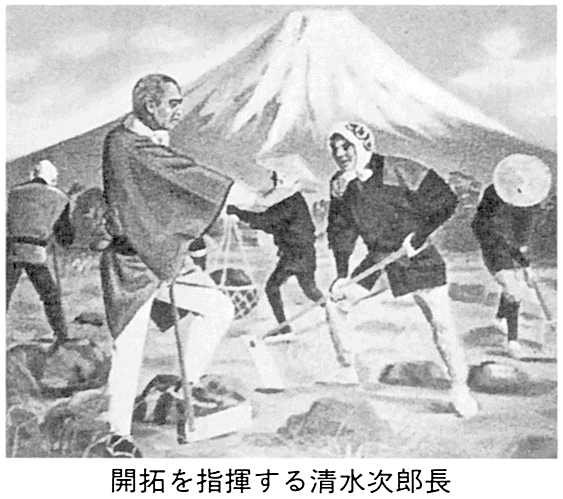
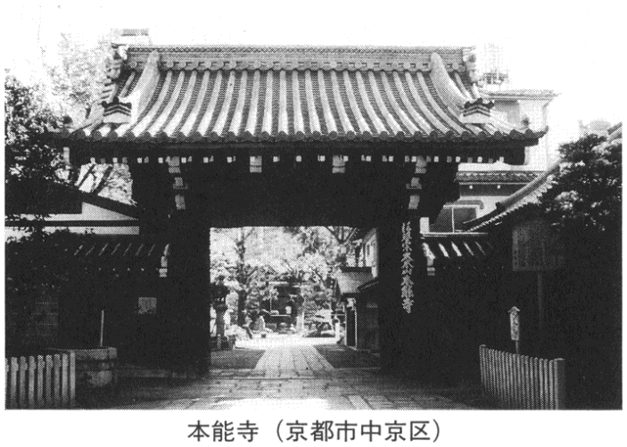

| 「歴史」の意外な結末 | |
| 日本博学倶楽部 | |

「歴史」の意外な結末
事件・人物の隠された「その後」
日本博学倶楽部
はじめに
教科書や歴史書などで読んで、だれでも知っている歴史的事件の数々。だが実際には、一般によく知られているのは、事件のあらましや、それに関わった人物の断片的な経歴にすぎないことが多い。
しかし、歴史上の有名な事件や人物の「その後」をたどってみると、そこには、意外な展開、意外な人生のドラマが隠されていることも少なくないのだ。
たとえば、子供好きで知られる良寛和尚が、晩年に燃えるような恋をしていたのをご存じだろうか？ あるいは、徳川吉宗の時代、江戸にゾウがやってきた話は有名だが、ゾウは、その後いったいどうなったのだろう？
また、歴史の「その後」には、一般に知られている話が事実とは違うものや、真偽はわからないながらに異説があるものもある。豊臣秀頼の死後、千姫が乱行にふけったという伝説があるが、事実はどうなのだろう？ フランスを救ったジャンヌ・ダルクは、本当に火あぶりになったのだろうか？
そんな知られざる歴史の「その後」を、しばしお楽しみあれ。
～もくじ～
「壬申の乱」の九百二十八年後 大海人皇子の本営に軍を敷いた徳川家康
加藤清正の霊に守られて生き長らえた？ 名古屋城の金のシャチホコ
せっかくもたらされたのにすたれちゃった？ 安土桃山時代の活版印刷術
『トム・ソーヤの冒険』の作者マーク・トウェインの、意外な晩年の作風
再婚直前に行き倒れて死んだ エドガー・アラン・ポーの「奇妙な最期」
明晰な思考を失うよりも苦痛を選びガンと闘った 精神分析学のフロイト
若くして名声を得ながらその後、自分の作品を否定した文豪トルストイ
妻のせいで死後に遺体の埋葬場所がわからなくなったモーツァルト
「質量保存の法則」を見つけたラボアジエはフランス革命でギロチン刑に
「遺伝の法則」を発見したのに注目されず死後に再評価されたメンデル
「ウォーレス線」に名を残す進化論発見者ウォーレスの、その後の活躍
アメリカ大陸を発見したコロンブス その後は失意の人生を......
大西洋単独横断無着陸飛行のリンドバーグも晩年は「堕ちた偶像」に
百年戦争で大活躍したエドワード黒太子のその後の「大汚点」とは
古代オリエントを征服したアレキサンダー大王もワインに征服された？
活版印刷を発明しながら機械を差し押えられてしまったグーテンベルグ
第二次大戦中にフランスに埋められた地雷 除去したのはいったいだれ？
ガンジーがイギリス支配に抵抗して拾った「塩」のゆくえはどうなった？
第１章 知っているようで知らない意外な「その後」
大政奉還後の徳川将軍家
一八六七（慶応三）年の大政奉還で、家康が江戸幕府を開いて以来、二百六十四年つづいた徳川家の政権は終わりを告げた。
ところで、その後の徳川家はどうなったのだろう？
十五代将軍・慶 喜 （一八三七～一九一三、在職一八六六～六七）は、静岡でひっそり暮らしたが、大政奉還から四十七年もたった一九一四（大正三）年、なんと、徳川家十六代目当主の徳川家 達 （一八六三～一九四〇）という人物が、首相候補として浮上する。
彼は、徳川御三卿のひとつの田安家の出身で、大政奉還の翌年、六歳のとき、維新政府から「徳川本家相続」の沙汰を受けた。十五代当主の慶喜が朝敵となったので、もっとも適当な後継者として選ばれ、以来、彼は、「上様」「十六代様」と呼ばれていたのである。
首相候補にあがったとき、徳川家達は、貴族院議長をしていた。
それより三年前に、雑誌の『中央公論』で「徳川家達論」という特集が組まれたとき、「家達公は威望も才幹もあって、首相に耐えられそうだ」とか、「武断派に代わって文人が重要な役につくとき、家達公ほどの適任はない」といった発言があって、人望の厚い人物だったようだ。
それで、次期首相の選定に難航していたとき、徳川家達の名があがり、最有力候補となったのである。
だが彼は、これを辞退し、結局、かつて首相を務めたことのある大 隈 重 信 が首相になり、第二次大隈内閣が成立した。
徳川家達は、その後、外交官として活躍したり、日本赤十字社の社長として活躍したのち、七十八歳で死去した。
赤穂浪士の仇討ち後のお家断絶に領民たちは大喜び？
一七〇一（元禄十四）年三月十四日に起こった江戸城・松之廊下の刃傷事件。
赤 穂 藩主の浅 野 内 匠 頭 長 矩 が吉 良 上野介 義 央 に斬りつけ、浅野内匠頭は切腹、浅野家はお家断絶となった。
その後、大石良 雄 らの赤穂浪士たちが、吉良を主君の仇として討ち果たしたことは、あまりに有名だが、では、赤穂藩の一般の人々はどうしたのだろうか？
さぞかし藩主の不運を悼んだり、自分たちの将来に不安を感じたことだろうと思われるが、じつはそうでもなかったらしい。
悲しむどころか、赤穂の領民たちは、城明け渡しのとき、赤飯を炊いて大喜びしたという話があるのだ。
当時、赤穂藩は赤字財政で、財政を担当していた家老の大野九郎兵衛は、藩札を発行したり、塩の専売制を実施したりとさまざまな方策をとった。
これらの方策は功を奏し、藩財政は潤ったのだが、製塩業に従事する領民たちは賃金労働者となり果て、藩に不満をもっていた。
そんな対立のさなかにお家断絶となったので、領民たちは赤飯を炊いて祝ったというのである。
ただし、これに異を唱える説も多い。
それらによれば、赤穂藩の政策はけっして苛酷なものではなく、多額の金銭が領民に貸し与えられていた。そういう為政者たちが領民に恨まれていたとは思えず、藩主が切腹したり、三〇〇人以上の家臣とその家族が路頭に迷うという不幸を、領民が喜ぶはずはないのではないか。
もし、喜んだ者がいたとすれば、それは浅野家断絶後に幕府が、領民たちが藩から借りていた借金の大半を棒引きにしたので、それに対するお祝いだろうというのだ。
大杉栄らを虐殺した甘粕正彦 満州で映画プロデューサーに
一九二三（大正十二）年、関東大震災のどさくさにまざれて起こった大杉栄らの虐殺事件。
社会主義者を危険分子とみなしていた東京憲兵隊麹町分隊長の甘 粕 正 彦 が、震災の混乱にまざれて、社会主義者の大杉栄（一八八五～一九二三）とその妻・伊藤野 枝 （一八九五～一九二三）と甥を東京憲兵隊本部に連行し、殺害したのである。
この事件で、甘粕は軍法会議にかけられ、懲役十年の判決を言い渡された。
子供まで殺すテロ事件を起こしたにしては軽い判決なのは、事件の背後に軍の上層部がいたのではないかという説もあるが、真相は定かではない。
ただ、この説を裏づけるかのように、彼はわずか三年で仮釈放。その後、満州で映画会社の理事長にと、ずいぶん意外な変身を遂げている。
映画会社とはいっても、彼が理事となった満州映画協会（満映）は、映画を通じて満州建国精神の発揚と普及・徹底をはかるという、軍事的・政治的な目的でつくられた会社だった。
大杉殺害事件で悪名高い彼が理事としてやってくると決まったとき、満映のスタッフたちは、さぞかし国策一辺倒の方針をとるかと心配していたのだが、彼は、ウソやごまかしは見逃さない厳しい方針をとったものの、映画そのものは自由に製作させた。
俳優はもちろん、監督・脚本から技術部門まで、中国人スタッフを積極的に育成することすらしたのである。
また、中国で生まれ育ち中国語に堪能な日本人女性を、中国人スター「李 香 蘭 」として大々的に売り出した。
満映理事長というのは覆面で、じつは甘粕は情報機関のリーダーだったという説もあるが、戦後の中国映画で、満映で育った中国人が中心的な役割を果たしたとさえいわれているほど、彼が中国での映画製作に貢献したのは事実である。
彼の最期は一九四五（昭和二十）年八月二十日。敗戦の五日後、満映理事長室で青酸カリ自殺を遂げている。
伊達政宗の船がスペイン艦隊に編入？
日本で初めて太平洋を往復した船は、伊 達 政 宗 の命令で建造されたサン・ファン・バウティスタ号。一六一三（慶長十八）年九月、支 倉 常 長 らの一行を乗せて出発した船である。
有名な幕末の咸 臨 丸より二世紀半も早く、しかも、外国に発注したのではなく、日本人がつくった船である。
『政宗君記録引証記』の記録によると、この船は、長さ一八間（約三五メートル）、横五間半（約一〇・八メートル）、帆柱の長さ一六間（約三一・五メートル）だったとか。ヨーロッパで遠洋航海に一般的に用いられていたタイプのガレオン船だった。
支倉常長らの一行は、一六二〇（元和六）年八月に帰国したが、サン・ファン・バウティスタ号のほうは、できのいい船だったのがかえって災いして、日本に戻ってくることはなかった。
帰国の途中で立ち寄ったフィリピンのマニラで、支倉常長は、スペインの総督に、オランダ軍との戦闘に備えてサン・ファン・バウティスタ号を貸してほしいと頼まれ、断りきれずに貸したからである。
その後、スペイン艦隊に編入されたサン・ファン・バウティスタ号がどうなったかは定かでない。
しかし、フィリピンで起こったスペイン軍とオランダ軍の戦闘で、スペイン軍が敗れているところから、サン・ファン・バウティスタ号もまた、オランダ艦隊に撃沈されたのだろうといわれている。
ヤクザの親分・清水次郎長 晩年は大いに社会に尽す!?
かつて、講談や映画の世界などで、日本じゅうにヒーローとしてその名をとどろかせた清水次 郎 長 親分。
だが、仁侠ものによくあることだが、そのヒーローぶりのほとんどは、講談や浪曲の脚色によるものである。
駿河国（静岡県）清水港の次郎長こと山本長五郎（一八二〇～九三）は、たしかに、伝説のヒーローの原型になりそうな波瀾万丈の人生を送ったが、けっして正義の味方などではなかった。
彼は、二十二歳ごろから博徒の仲間に入り、いかさまバクチの名人として知られるようになった。それに加え、自分の名を上げ、ナワバリを広げるために、しょっちゅう闘争を繰り広げていた。
しかし、海道一の大親分というのは本当ではないらしく、次郎長一家は、たしかにケンカに強いことでは知られていたが、しょせんはよくあるヤクザの一派にすぎなかったのだという。
ただ、義理と人情に厚かったのは事実のようで、暴風雨で沈んだ幕府の軍艦の水死体を集め、「ホトケに官軍も賊軍もあるものか」と、手厚く葬ったりしている。
このケンカとバクチに明け暮れていたヤクザの親分は、一八六八（明治元）年、東海道総督府判事、伏谷如水から旧悪を許され、十手捕縄、帯刀の特権とともに街道取り締まりを命じられ、二足のわらじを履くことになる。
以後、政府との交渉が多くなり、とくに、のちに明治天皇の側近となる静岡県権大参事、山岡鉄 舟 と出会ってから真人間に変身を遂げた。
一八七四（明治七）年、鉄舟と、ときの県令の大迫貞清に、「囚人を使って、富士山麓の原野の開墾事業をしないか」ともちかけられた次郎長は、これを承諾。開墾事業を根気よく続けるかたわら、清水港発展のために蒸気船導入に力を尽くしたり、英語塾を始めたり、また、油田の開削事業にも参加している。そして、最後の仕事となったのは汽船宿である。
「侠客は畳の上では死ねない」などとよくいわれるが、次郎長の晩年はお蝶と二人、静かに暮らし、一八九三（明治二十六）年、畳の上で七十四歳の大往生を遂げた。
のちにヒーローとしてもてはやされたのも、ヤクザの親分だったことより、地元の発展に尽くしたことが大きいのではないだろうか。
また、師と仰ぐ鉄舟の東京での葬儀では、次郎長は降る雨もかまわず泣きつづけた、という話も伝わっている。

源氏に滅ぼされたはずの平家一門に生き残りがいた？
平家一門は、壇ノ浦の戦いで源氏に敗れて滅んだことになっているが、じつは、その後も都に生き残っていた人物がいた。平 頼 盛 である。
頼盛は、忠盛の五男で、清盛とは異母弟の関係にあたる。一族中で強い発言力をもっていた池 禅 尼 の息子として、清盛とその嫡男の重盛に次ぐ地位にあったが、清盛と後白河院の対立が深まるころから、清盛と対立するようになっていった。
一一七九（治承三）年十一月に清盛がクーデターを起こしたときには、後白河院に近いという理由で頼盛は官を解かれており、「清盛が頼盛を討とうとしている」といううわさまで広まったほどである。
翌年、頼盛は政界に復帰したが、主流派との溝は埋まらなかったようだ。
そして、一一八三（寿永二）年七月、平家一門が源義仲の攻撃を受けて都を落ちのびるとき、頼盛は自宅に火をかけ、いったんは一門と一緒に都を出たものの、途中で、「忘れ物をした」といって引き返したのである。
さらに彼は、一一八四（元暦元）年には、没収されていた領地を頼朝から返してもらい、権大納言として政界に復帰することさえできた。
頼朝にしては寛大な措置ともいえるが、どうして彼は頼盛を許したのだろうか。
頼盛の母の池禅尼は、かつて、頼朝が平家に捕えられたとき、清盛に対し頼朝の助命嘆願をしてくれた人物で、いわば命の恩人。その恩人の実子だというので、頼朝は頼盛を助けたのだと推測されている。
ちなみに、平家の都落ちのとき、重盛の息子の維 盛 も一門から脱落しているが、結局、頼朝には許されることなく、自害に追い込まれている。
屋島の戦いで扇を射落とした那須与一がお坊さんになっていた？
『平家物語』に登場する数多くの武将のなかでも、弓の名手として名高いのが、那 須 与 一 （生没年不詳）だ。
一一八五（文治元）年、屋 島 の戦いのとき、平家方の女房が、小舟の上で、扇を射るようにと手招きした。源 義 経 （一一五九～八九）の命令で那須与一がその挑戦に応じ、みごと扇を射落としたというのは、あまりに有名な話だ。
このあと、彼は、いったいどんな人生を送ったのだろう？
頼朝の天下となったあとの与一は屋島以上の活躍をしたらしい。
那須一族が梶 原 景 時 （？～一二〇〇）の率いる幕府軍に攻撃されたとき、与一はこれをみごとに撃退した。時の権力者の軍を追い払うという快挙を成し遂げたわけで、その後有利な条件で和睦している。
さらに彼は、なんとお坊さんになったらしい。
『那須記』の「那須与一」の項に、「落髪申致上洛......」と、出家して京都に行ったことが伝えられており、京都府二尊院所蔵の『源空七箇條起請文』いう古文書に、那須与一が、「源 」という名で記されているという。
彼は、一二〇二（建仁二）年、三十四歳で出家し、浄土宗を開いた法然に弟子入りし、その二年後には、早くも法然の高弟となったというのである。
法然の弟子となった与一は、那須家からの資金を受けながら、源平の合戦で戦死した者たちの菩提を弔うため、西国を旅した。
その後、神戸市にある北向八幡神社に滞在中、六十四歳で、病気のため、高僧らしい大往生を遂げたという。
与一が祈願して誉れを得たといわれる、この神社の境内には那須神社もまつられ、西の丘の上には彼の墓がある。
国外追放させられたのちの高山右近
戦国時代の代表的なキリシタン大名のひとり、高 山 右 近 （一五五二～一六一五）。父のダリヨ飛 守が熱心なキリシタンだったことから、十二歳で洗礼を受けた。
彼は、荒木村 重 に臣従して高 槻 城を守っていたが、織田信長に包囲されたとき、師のオルガンチノが信長から、「寝返るように右近を説得できなければ、宣教師を殺してキリスト教を禁じる」と脅されたため、荒木に人質として差し出した子供の命とキリスト教の両方を守るため、世捨て人になろうとする。
その潔さに、荒木も信長も心を動かされ、荒木は息子の命を助け、信長は世捨て人となることを許さず、彼に旧領の倍の四万石を与えた。
その後、熱心なキリシタン大名として、戦国大名には珍しく慈愛深い政治をおこなっていた右近だが、信長の死後、状況が一転する。
一五八七（天正十五）年、秀吉がキリスト教を禁止すると、それに逆らった右近は、領地を没収されたうえに追放された。
その後、一六一三（慶長十八）年十二月、家康が全面的なキリスト禁制令を発すると、ついに日本で初めての国外追放を言い渡され、翌年十月、日本から追放された。
厳しい処置だったが、着いた先のルソン（フィリピン）では、彼は、「追放されてよかった」と思ったかもしれない。
ルソン総督ファン・デシルバをはじめ、現地の人々が、礼砲まで放って、キリスト教の勇士として彼を大歓迎してくれたのである。
だが、マニラで厚遇されること四十日ののち、彼は、老齢と心身の疲労のために病床に臥し、一六一四年一月八日、この世を去った。
日本に初めて伝わった仏像 なんと川に捨てられる！
日本に初めて仏教が伝来したのは、『日本書紀』によると、五五二年のこと。百済 の聖明王が使者を遣し、仏像と仏具、さらに経典を贈ってくれたのが、仏教の伝来とされている。
年代については、五三八年という説もあるが、どちらにしても、六世紀の中ごろまでに、仏教が百済から日本に伝わってきたのは間違いないようだ。
この日本に初めて伝わってきた仏像が、もしも現存していれば、歴史的に貴重な遺物となっているところだが、残念ながら残されていない。
なぜかというと、川に流されてしまったからだ。
仏教が伝来したとき、欽明天皇（五一〇～七〇）は、これを受け入れるべきかどうかを臣下の者たちに相談した。
これに対して、蘇 我 稲 目 は、「西方の国々がみんな受け入れているのですから、日本もそれに倣いましょう」と答えた。
一方、物 部 尾 輿 や中 臣 鎌 子 らは、「外国の神を礼拝したら、日本の神々が怒るだろう」と、仏教を受け入れるのに反対した。
そこで天皇は、仏像を稲目に預け、「試しに拝んでみろ」と命じた。
稲目は仏像を預かり、自分の家を寺にして安置し、礼拝するようになったが、それからしばらくして、疫病がはやった。
物部尾輿や中臣鎌子らが、「外国の神を拝んだたたりだ」と主張するので、天皇は、稲目に命じて、仏像を難波の堀江に捨てさせたというのだ。
『元興寺縁起』では少し違うようで、稲目の死後に他の家来たちが仏像を難波の堀江に捨てたと書かれている。
どちらにしても、日本初の貴重な仏像が難波の堀江に捨てられたのは間違いなさそうで、敏 達 天皇（五三八～五八五、在位五七二～五八五）の時代、二度目に伝来した仏像も、やっぱり同じ理由で難波の堀江に捨てられたということである。
室町時代、朝鮮や中国を荒らしまわった倭寇は大名の水軍組織に
十四世紀ごろから十六世紀ごろにかけて、「倭 寇 」と呼ばれる海賊が、朝鮮や中国の沿岸を荒らしまわって、高麗や李氏朝鮮、元や明王朝を悩ませ、恐れられた。
この「倭寇」は、海賊自身が名乗ったわけではなく、「日本人が寇する」という意味で、朝鮮で使われるようになった言葉だ。
倭寇のもとは、対馬 や壱 岐 などを根城とする松浦党という武士団。
はじめは、数艘の小舟で交易に出かけ、拒まれれば賊に変わるという程度だったが、元寇で壊滅的な打撃を受けて以来、団結して再度の元の来襲に備えるとともに、中国や朝鮮への報復に、大挙して海賊行為に押しかけるようになった。
とはいっても、松浦党だけで、朝鮮や中国の王朝を揺るがせるほどの被害を与えるのは、まず不可能。
倭寇のなかには、九州の諸大名の支配下の海賊たちもいたし、「偽倭」と呼ばれた中国人の海賊が、じつは日本の海賊の何倍もいたと考えられている。
中国の海賊はさておき、松浦党をはじめとする日本の海賊たちは、その後どうなったのだろうか？
彼らは、戦国時代までは活躍していたが、信長や秀吉によって天下統一が果たされると、瀬戸内海を荒らしていた村上海賊などとともに、権力者の弾圧を受けるようになる。
まず、秀吉の命令で海賊禁止令が出て、村上海賊は毛利家の水軍に、松浦党は平戸松浦氏の家臣団となる。
そして、徳川幕府が鎖国制度を敷くと、海賊に限らず、日本人が海外に出ていくこと自体、なくなってしまうのである。
良寛和尚が晩年に燃えるような恋を？
ほのぼのしたエピソードをいくつも残す、江戸時代の禅僧・良 寛 （一七五八～一八三一）。庵 の床下にタケノコが生えてくると、「かわいそうに」と床に穴を開けてやり、それが成長して屋根にまで伸びると、今度は屋根にまで穴を開けた、という話は有名だ。
浮き世離れしたイメージの強い良寛だが、なんと、晩年に、美貌の若い尼僧と燃えるような恋をしている。
この尼僧は、貞心尼といい、俗名は奥村マス（一七九七～一八七二）。武士の娘で、十八歳で医者に嫁いだが、五年で離縁され、傷心のために出家した女性である。
彼女は、三十歳のとき、良寛の評判を聞いて師と仰ぎ、弟子になりたいと望んで、人伝てに連絡をとり、手作りの手毬 を土産に良寛の庵を訪れる。
良寛が留守だったので、手毬に和歌を添えて置いて帰ったところ、良寛から返事の歌が届いて、弟子入りしたのである。
そのとき良寛は七十歳。越後の国上山の中腹の庵でさびしい暮らしをしていたが、貞心尼を得て、華やいだものとなったようだ。
「君やわする道やかくるゝこのごろは まてどくらせど音づれもなき」
こんな情熱的な恋の歌を詠んでいたりもする。
しかし、この恋は四年で終わりを告げる。良寛は一八三一（天保二）年、七十四歳で、貞心尼にみとられて、病気のためにこの世を去った。
島原の乱後、そこに住んだのはだれ？
江戸時代の一揆のなかでも、間違いなく最大規模の「島原の乱」。
一六三七（寛永十四）年十月二十五日、一揆勢が、キリシタンの礼拝を取り締まろうとした有家村の代官を殺し、島原城に押し寄せたことに始まる。その後、古城の原城に籠 城 すること八十日間、翌年二月二十八日に終結した反乱である。
もともと米がほとんどとれない貧しい土地柄なうえ、四年にわたる不作が続いたところに藩主が重税を課し、税を払えない農民を虐殺するなどの苛政を行なったので、ついに一揆となったのだ。
『島原記』によると、最後の二日間の戦いで、幕府軍の死者一〇三六人、負傷者六九五〇余人を出す結果になったという。勝利者側でそれだけの死傷者が出たぐらいだから、一揆側はもっと悲惨で、原城に立てこもっていた人間は、老人も女性も幼い子供も、約三万七〇〇〇人が皆殺しにされた。
その結果、島原・天草地方の人口は以前の半分ほどに激減してしまったというのだ。そのため幕府は、諸藩に命じて新たな入植者を募集した。入植を促進するため、「当分のあいだ、年貢を免除する」という条件をつけたところ、重税に苦しんでいた農民たちが各地から殺到したという。
そのときの移民の子孫が大半なので、島原地方では、半島内の各地域で方言や風習がまちまち。今でも、「わが家の出身地は××」というような話が、それぞれの家に伝えられていたりする。
遣米使節の随行艦・咸臨丸の意外な余生
江戸時代末期に、勝海 舟 （一八二三～九九）、木村摂 津 守 、福沢諭吉（一八三五～一九〇一）ら総勢九六名を乗せてアメリカまで渡った船といえば、「咸 臨 丸」。
ペリー来航から三カ月後の一八五三（嘉永六）年九月、幕府がオランダに発注し、一八五七（安政四）年八月に長崎に到着した船で、オランダ名を「ヤッパン号」という。
近年の研究では、約六〇〇トンの蒸気機関つきの木造帆船で、長さ約五〇メートル、幅約七メートル、一〇門または一二門の大砲を積んでいたといわれている。
そもそも咸臨丸は、アメリカ船で渡米する日米修好通商条約批准の正使一行に万一のことがあった場合に備え、随行艦として渡米したもの。
日本人のみで渡米したように誤解されがちだが、実際にはアメリカのブルック大尉とその部下たちが事実上の操船を行ない、帰途だけは、日本人だけの力でサンフランシスコから品川まで帰り着いた。
その後、歴史の表舞台からは消えたように思える咸臨丸だが、いったいどうなったのだろうか？
なにしろ、当時としては貴重な蒸気船のこと、帰着後も、小笠原諸島の測量などで働きつづけた。
老朽化してきた一八六七（慶応三）年には、エンジンをはずされ、帆船になりさがって、徳川艦隊に加わったが、シケで清水港に漂着したところを新政府軍に船体ごと没収された。
その後、北海道開拓使の船となり、東京と北海道のあいだを往復していたが、一八七一（明治四）年、北海道渡島の沖で座礁し、ついに全壊。
十四年の短い一生だった。
江戸の人足寄場が明治以降は監獄に
一七九〇（寛政二）年、松平定 信 （一七五八～一八二九）の寛政の改革（一七八七～九三）の一環として、江戸の隅田川河口に、無宿者を収容し労働に従事させるための人 足 寄 場 がつくられた。
当時、石川島と佃島の中間を埋め立ててつくった人工の島に、土地を持てない農民や家出した若者など、戸籍からはずされた無宿者が増え、社会問題となっていた。無宿者の多くは、ヤクザや犯罪者となるからだ。そこで、火 付 盗 賊 改 役 の長谷川平蔵が、犯罪対策として、無宿者が犯罪者になる前に正業につかせることができればと考え、松平定信に建議し、そのアイデアが採用されたのである。
人足たちは、逃亡などの規律違反をすると厳罰に処されたが、仕事に精を出して更生したと認められると、商売道具を与えられるなどして社会復帰できた。
また、人足寄場には、人足たちの信仰のために、稲荷の社殿もつくられた。
この人足寄場は、明治以降、どうなったのだろう？
寄場は、法的には保安処分の施設だったが、懲役刑を行なう場所としての性格ももっていた。そのためかどうか、明治政府は、人足寄場を廃止すると、そのあとに、石川島監獄署をつくった。
一八九五（明治二十八）年、石川島監獄署は、当時は郊外だった巣鴨に移転し、巣鴨監獄署に。さらに、戦後、巣鴨から府中に移転し、府中刑務所になった。
人足寄場につくられた稲荷神社も、監獄の移転にともなって、現在は府中刑務所内に祀 られている。
奈良の平城京、遷都のあとは田んぼに？
京都には、御所をはじめ、平安京（七九四～）の名残がいまだに色濃く残っているのに、奈良には、東大寺や若草山はあっても、平城京（七一〇～七八四）の宮殿は残されていない。
当時にはかなり大きな宮殿があったはずだが、その跡はいったいどうなってしまったのだろう？
結論からいうと、平城京の跡とその周辺一帯は、田んぼになってしまったのだった。
平城京の発掘作業は一九五九（昭和三十四）年から始まったが、千百年以上も前に見捨てられた都が、地中に埋もれながら現代まで保存され、場所もはっきりわかっていたのは、そこが田んぼになっていたことが大きい。
平城京が捨てられたあと、その廃墟の上には、縦横に走る条里にもとづいて区画された水田がつくられた。
その区画は、その地を耕す農民たちに代々受け継がれてきたため、一九五〇年代に行なわれた航空撮影で、水田の区画から、方八町（約一キロ四方）の宮城の跡が歴然と浮かび上がったのである。
発掘調査では、水田の床土をはぎとると、その下から、平城京造営のときに盛土された茶褐色の土層が出てきた。その盛土に残る柱の跡から、建物の大きさや構造がわかった。
ところで、平城京というと、完成してから長岡京（七八四～七九四）に遷都するまで一貫した都で、遷都後はきっぱり捨てられたように思われがちだが、じつはそうではない。
天平文化の最盛期の聖武天皇（七〇一～七五八。在位七二四～七四九）のとき、七四〇（天平十二）年から七四五年まで、天皇は平城京を去って、都を転々と移した。長 屋 王 （六八四～七二九）などの非業の死を遂げた人々の怨霊を恐れたためというのは、有名な話だ。
また、長岡京遷都後も、建築物を移築するには数年かかったし、平安京遷都後も、平 城 天皇（七七四～八二四、在位八〇六～八〇九）はなぜか平城京を愛し、八〇九（大同四）年に退位して上皇となると、平城京に宮殿をつくって移り住んだほどである。
だが、平城上皇亡きあと、平城京は再び廃墟になり、八六四（貞観六）年ごろまでには、完全に田んぼになってしまっている。
自分がつくった「黄熱病ワクチン」を打ったのに黄熱病で死んだ野口英世
細菌の研究者として世界的に名高い野口英世（一八七六～一九二八）が、研究者としての後半生を黄熱病の研究に尽くしたのは有名な話だ。
とくに、福島の極貧の家に生まれ、幼いころ囲炉裏で大やけどを負い、片手が不自由になりながらも、ひたすら医学に打ち込み世界的な研究者になったというところがいかにも日本人に好まれそうな、立志伝中の人物でもある。
彼は、一九一八（大正七）年、黄熱病の病原体をつきとめるため南米エクアドルのグアヤキルに行き、そこで、病原体の「スピロヘータ」を発見。それをもとにワクチンを大量につくった。
だが、一九二四（大正十三）年ごろから、アフリカ西南部にまた黄熱病がはやりだし、野口ワクチンが効かなかったというので、野口説への疑惑が濃くなった。
それで彼は、一九二七（昭和二）年秋、現地のアクラへ赴き、実験用のサルを大量に買い込み、大がかりな実験に取り組んだ。もちろん、その前に、自分のつくったワクチンを注射し、感染に備えたのはいうまでもない。
ところが、実験に取りかかってまもなく、彼は悪寒や嘔吐の症状を起こした。それでも彼は、
「黄熱病にかかったが、ワクチンのおかげで軽い症状ですんだ」
「ワクチンを打っているから、いったん黄熱病にかかって治れば、二度とかかることはないはずだ」
と信じて危険な黄熱病の研究にいそしんだ。
そしてついに真の病原体を発見したと喜んだ野口だが、翌二八年五月に黄熱病を発病してしまった。
「どうも僕にはわからない」と不思議がりながら、皮肉にも、みずから研究中の黄熱病でこの世を去った。
じつは、黄熱病の病原体は、当時の顕微鏡では発見できない小さなウイルス。彼が発見したのは別の細菌で、当然、ワクチンも効くはずがなかった。実験中にかかって治った病気も、おそらく黄熱病ではなかったのだ。
黄熱病の研究は空振りに終わったが、彼が梅毒スピロヘータを麻痺性痴呆患者の脳内から発見した業績は、今も高く評価されている。
生類憐みの令廃止後のお犬様
昔から数多くつくられた法令のなかでも、とりわけ悪名高いのが「生類憐みの令」（一六八七～一七〇九）。江戸の五代将軍・綱吉がつくったこの法令で、民衆はたいへんな迷惑をこうむった。
とくに、犬は異常なほど愛護されたので、犬を飼っていてうっかりケガをさせでもしたら、たいへんなことになる。それで江戸の市民には、飼うのをいやがって犬を捨てる者が続出したため、江戸には野犬があふれかえった。
そこで幕府は、一六九四（元禄七）年、野犬を収容するため、諸大名に命じて、四谷や内藤新宿などあちこちに犬小屋をつくらせ、野犬を収容した。その総工費は二〇万両にのぼったと伝えられている。
犬小屋には、奉公人の給料と等しいほどの金額が、「お犬様」一匹あたりの養育料として渡され、収容された野犬の数は、一〇万頭にものぼったという。
それでも収容しきれなくなり、「御犬御用」に任命された農民たちに預けられた。
この悪法「生類憐みの令」も、一七〇九（宝永六）年、綱吉が死ぬと廃止になった。
犬小屋も、もちろん廃止になったのだが、そこに収容されていた犬たちはどうなったのだろう？
江戸では、収容されていた犬たちは追い出され、江戸の庶民たちは、積もり積もった恨みから、犬に石を投げたりして憂さ晴らししたという。
また、農村の人々がもらって帰って、飼ったのではないかという説もある。
「生類憐みの令」の廃止で、たいがいの人々は喜んだが、気の毒なのは犬の飼育にあたっていた人々。なんと、それまで受け取ったお犬様の養育金を返すよう命じられ、一夜にして多額の借金を背負わされることとなってしまったのだ。
ちなみに、東京の中野区立歴史民俗博物館には、四十八年間かかってこの借金を幕府に返したことを示す古文書が残されている。
樺太探険で知られる間宮林蔵は幕府の隠密になっていた！
樺 太 探険の第一人者として知られる間 宮 林 蔵 （一七七五～一八四四）。
彼の最初の北方探険は一八〇〇（寛政十二）年。蝦 夷 地御用雇に任命され、村上島之允という役人に従って蝦夷（北海道）に渡り、このとき、蝦夷にいた伊 能 忠 敬 （一七四五～一八一八）に測量術を学んだ。
その後も彼は、何度か蝦夷や国 後 ・択 捉 島の調査に出向き、一八〇八（文化五）年、幕府の命令で、松田伝 十 郎 とともに樺太へ。翌年にも、今度はひとりで再び樺太に行き、樺太が海峡によって大陸とへだてられた島であることを発見した。
彼が発見した海峡を、シーボルト（ドイツの医師・博物学者。一七九六～一八六六）が「間宮海峡」としてヨーロッパに紹介。彼の名は世界地図上、不朽のものとなった。
だが、一八一一（文化八）年にその報告書を幕府に提出したあと、彼は「大変身」を遂げる。なんと、幕府の隠密になってしまったのだ。
忍耐強くて測量技術に長けた探険家というのは、幕府には、隠密の適任者と映ったのだろう。
そして、有名な「シーボルト事件」（一八二八）でシーボルトを告発したのは、じつはこの間宮林蔵だった。
シーボルトが幕府天 文 方 の高橋景 保 （天文学者・蘭学者。一七八五～一八二九）を通して間宮に渡した荷物を、彼は開けずにそのまま奉行所に届けた。外国人とのプライベートな交際を禁じる幕府の方針に従ったのだ。
これがきっかけでシーボルト事件が起き、高橋景保は獄死。蘭学を志す学者たちは、間宮を「幕府の犬」と恐れ、忌み嫌った。
そういう悪評の一方、間宮は、隠密としての能力は高かったらしく、潜入困難と評判の薩摩藩にも、経 師 屋の弟子となって、城内潜入に成功している。
放火事件後の八百屋お七の想い人は？
恋で身を滅ぼした女の典型ともいえるのが、八百屋お七。
駒込追 分 の太 郎 兵 衛 という八百屋の娘で、一六八二（天和二）年、大火事があったとき、太郎兵衛一家は寺に避難し、十六歳のお七は、そこで同年齢の美少年と知り合い、恋仲になる。
だが、家が新築されると、恋人に会えなくなったので、また火事になれば会えると思って放火し、捕まって、鈴ケ森刑場で火あぶりの刑となる。
井原西 鶴 の『好色五人女』をはじめ、さまざまな小説や芝居の題材となってきた有名な話だが、お七が火あぶりになったあと、相手の男はどうしたのだろうか？
まず、相手の男の名前だが、『好色五人女』では「吉 三 郎 」となっているが、これは井原西鶴の脚色らしい。
小説や芝居では脚色でしばしば名前が変えられたようで、ほんとうは、旗本の山田重太郎の次男の佐 兵 衛 であるとか、あるいは寺小姓の生 田 庄 之 助 だとか、いくつかの説がある。
いずれにしても、武家か寺小姓か、気軽にデートをするわけにはいかない立場にいる少年だったのだろう。
この恋人は、けっして薄情な男ではなかった。彼は、お七の放火が自分のためだったと知ると、自害をしようとするが、住職に諭されて思いとどまる。
そして、出家して「西 運 」と号し、お七の菩提を弔って生きたと伝えられている。
最強とうたわれた「村上水軍」のその後
室町時代、瀬戸内海を牛耳っていた村上水軍。最強とうたわれた海賊の一族だが、彼らはその後、どうなったのだろうか？
まず、戦国時代になると、海賊たちは戦国大名に吸収されはじめた。
村上一族のうち、能島に拠っていた村上氏は、毛利軍に所属したが、毛利軍は彼らを好き放題にさせるつもりはなく、中 途 島と務司島の砦を壊させた。さらに、長 門 大津郡に領地を替えられ、本拠の能 島 も廃城にされてしまう。以来、能島は、現代に至るまで無人島のままだ。
来 島 の来島氏は、最初は毛利水軍に属していたが、一五八二（天正十）年から、豊臣秀吉に仕えるようになり、豊臣姓を授けられ、従五位下の官位と出 雲 守 の肩書きを得たり、伊予国に一万四〇〇〇石の領地をもらったりした。
そして、一五八八（天正十六）年、秀吉が三カ条からなる海賊禁止令を発布したので、村上水軍は、自由に海上を移動したり、海賊行為をしたりできなくなった。
関ケ原の戦いでは、来島長親は、はじめは西軍についていたが、途中で東軍に寝返ったので、とりあえずは本領を安堵された。
が、半年もたたない一六〇一（慶長六）年二月、海から遠く離れた豊 後 国（現在の大分県）の森というところに転封されて、久留島と改称する。
そして、一六六三（寛文三）年には、長親の孫の通春が、参勤交代で航行中、海難事故で弟や家臣を失っており、村上水軍の栄光は過去のものとなっている。
第２章 波乱万丈の人生を送った歴史人物の「その後」
高杉晋作がつくった「奇兵隊」維新後はどうなった？
幕末の一八六三（文久三）年、長州の高杉晋 作 （一八三九～六七）は、「戦は武士がするもの」という江戸時代の常識を覆し、町人でも農民でも、身分を問わずに参加できる実力主義の軍隊「奇 兵 隊 」を創設した。
幕末・維新の戦いで、幕府の大軍相手に活躍し、維新の立役者となった奇兵隊だが、その後、彼らはどうなったのだろうか？
維新政府が成立すると、政府は、奇兵隊の兵士たちに冷たかった。
一八六九（明治二）年、長州藩は、奇兵隊をはじめとする長州の諸隊を解散し、常備軍に再編成すると発表した。
が、常備軍に組み込まれるのは、約五〇〇〇人のうち二〇〇〇人ほどだけで、残りの兵士たちは、なんの補償もなく放り出されることがわかった。
身分にかかわらず結成された奇兵隊と諸隊だが、いつのまにか、戦功や家柄によって幹部階級と一般兵士との階級の差が生まれており、伊藤博 文 （一八四一～一九〇九）や山 県 有 朋 （一八三八～一九二二）のように政府の閣僚となる者もいれば、他の幹部たちのように常備軍に入れる者もいるのに、一般の兵士たちは、補償もなしにいきなり失業者になってしまったのだ。
そのため、怒った奇兵隊や諸隊は、ついに新政府に対して反乱。これはやがて農民一揆と結びついていくこととなった。
かつて高杉晋作の同志だった参議の木戸孝 允 （一八三三～七七）は、現地に駆けつけて鎮圧軍の指揮をとり、翌七〇年二月、反乱は終結。
生き残って捕らわれた反乱兵士たちのうち、一三三名が処刑され、逃亡した反乱兵は、その後十年ものあいだ、指名手配された。
処刑された兵士たちには、遺族が人目をはばかったため、墓さえ与えられなかったという。
家康の覇業を支えた服部半蔵とその一族 太平の世の暮らしぶりは？
徳川家康（一五四二～一六一六）が天下をとった陰で、それを支えたのが、伊 賀 忍者の服 部 半 蔵 （一五四二～九六）とその配下たち。
服部一族は武田の甲斐忍者たちとすさまじい謀略戦を展開し、また、本能寺の変（一五八二）の直後に家康が伊賀越えして難を逃れたときには、半蔵をはじめとする忍者たちの働きで、家康は何度となく危機を脱している。
ずっと家康とともにあったその働きのおかげで、半蔵は、忍者のなかでもとくに知名度の高い人物だ。
その半蔵と彼の配下の忍者たちは、平和になった江戸時代、どうなっただろうか？
戦乱のあいだはめざましい働きをしたというのに、平和になってからの彼らはじつに不遇だった。
半蔵は、槍の使い手でもあったので、武将として、「ゆくゆくは大名に」というぐらいの夢はあったかもしれないが、幕府成立後に得た地位は、一代かぎりの旗本で、江戸城の警備という下っぱの仕事だった。江戸城に、「半蔵門」の名は残されているが、この半蔵門も、江戸城にとっては裏口にすぎない。
半蔵は、一五九六（慶長元）年十一月、五十五歳で死去し、服部家は、子の正 就 の代で断絶した。
他の伊賀忍者たちも、同心以上の地位を得ることはなく、しかも伊賀同心は、一六三五（寛永十二）年、住居を半蔵門前から四谷に移されたりと、冷遇された。
その仕事も閑職で、たとえば、大奥の女たちが雪合戦に興じるとき、二手に分かれた女たちの境に伊賀者が立たされたりした。
後年の御 庭 番 は、半蔵配下の伊賀忍者の子孫のように思われがちだが、じつはまったく別系統の組織である。
豊臣方の大大名・長宗我部盛親の関ケ原合戦後
一六〇〇（慶長五）年の関ケ原の合戦のとき、秀吉恩顧の大大名として豊臣側の西軍に加わっていた武将に、土佐二二万二〇〇〇石の長 宗 我 部 盛 親 （一五七五～一六一五）がいる。
彼は、戦国の世に四国を統一した長宗我部元 親 （一五三八～九九）の四男で、父の家督を相続し、秀吉からその所領を安 堵 されて、豊 家 第一四位の大大名となっていた。
そんな豊臣家の大大名で、しかも関ケ原で西軍に加わっていたとなると、戦いのあとは立場が悪い。
彼は、戦いのあとも生き延びたものの、所領は取り上げられた。一介の浪人となって出家し、京都の相国寺門前の柳ケ厨 子 に蟄 居 し、寺子屋の師匠として細々と生き延びる。
だが、雌伏すること十四年、一六一四（慶長十九）年に大坂の陣が起こると、大坂城へ。豊臣方の武将として戦い、翌年の大坂城落城後、六条河原で首を斬られた。
悲運の名将といわれる盛親だが、彼が本当に悲運の名将だったかどうかについては、異論もある。
じつは彼は、関ケ原の戦いのあと、保身のため、徳川四天王のひとり井伊直 政 （一五六一～一六〇二）に使者を送って、家康に直接詫びるようにという助言を得ていたらしい。
彼が所領を取り上げられたのは、その直後に兄殺しの大罪を犯したからで、そういうことがなければ、井伊のとりなしで所領を安堵されていたかもしれないというのである。
ちなみに、彼が追われたあとの土佐は、妻の内助の功で有名な山内一 豊 （一五四六～一六〇五）に与えられ、山内氏からは、幕末の土佐の名君・山内容 堂 （豊 信 一八二七～七二）が輩出している。
ローマに派遣された天正少年使節団の帰国後それぞれ
一五八二（天正十）年、長崎からローマに向かって出発した「天正少年使節団」。イエズス会の宣教師バリニャーニの発案で、大 友 宗 麟 、有 馬 晴 信 、大村純 忠 の三人のキリシタン大名が、伊藤マンショ、原マルチノ、千 々 石 ミゲル、中浦ジュリアンの十四～十五歳の四少年を、ローマ教皇のもとに派遣したものである。
彼らは、教皇グレゴリウス十三世に大歓迎された。中浦ジュリアンが熱病にかかったときには、法王みずから見舞いに訪れたほどだった。
だが、帰国後の彼らは不遇だった。日本の治世が、キリスト教に好意的だった信長から秀吉に移り、秀吉はキリスト教を弾圧していたからである。
そのため、一五九〇年に彼らが帰国できたのも、事前に根まわし工作をしてやっと許可が下りたという具合だった。
その後、千々石ミゲルは信仰を捨て、伊藤マンショと原マルチノは、しばらく布教活動したのち死去。イエズス会にいちばん最後まで残っていた中浦ジュリアンは、年々厳しくなる一方の弾圧の渦中に投げ込まれる。
彼は、捕らえられ、汚物だらけの穴の中にさかさ吊りにされた。さかさ吊りは、頭に血が集まってじわじわ死に至るという残虐な拷問方法である。
いっしょに吊された宣教師のフェレイラは、苦しさに耐えかねて信仰を捨てたが、中浦ジュリアンは、「わたしはこの目でローマを見た中浦ジュリアンです」とつぶやいて、最後まで拷問に耐えぬき、殉教したという。
坂本龍馬なきあとの海援隊
江戸末期の一八六七（慶応三）年、坂本龍馬（一八三五～六七）は、一八六四（元治元）年に創設された亀山社中を改編して、海軍・貿易の結社である土佐海援隊を結成し、その隊長に就任した。
創設当初のメンバーは、龍馬を含めて一六人だったと考えられているが、のちには三〇人ほどになる。
この海援隊は、龍馬が暗殺されたのち、いったいどうしたのだろうか？
龍馬が暗殺されたとき、おもだった隊士は京都や大坂に出張しており、長崎にいた隊士は一〇人ほどだった。
龍馬の親友だった土佐藩大監察の佐々木高行が、藩の公費を流用するなどして隊士の生活を援助。佐々木が土佐に召喚されるときには、隊士たちの嘆願で、一万五三〇〇両ほどが隊士たちに分配され、急場をしのいだりした。
龍馬がいなくなっても、海援隊は解散せずにがんばったのである。
おりしも、長崎奉行が長崎から逃走していたことがわかり、佐々木高行の指揮で、海援隊とその水夫たち、土佐藩士らが奉行所を占拠。無政府状態に陥る寸前の長崎の治安維持を担うことになった。
その後、彼らは、肥前藩の振遠隊に改編され、東北地方に出兵する。
一方、京坂にいた海援隊の隊士たちは、龍馬の死後、いったん分裂状態になったが、伏見鳥羽戦争での官軍の勝利を機に、長岡謙吉が再結集。讃岐の塩 飽 島の騒動を鎮圧する役目を一任され、騒動を収めた。
この件で、長岡は、塩飽島と小豆島の統治権を得て、島民を水夫に加えて海援隊の増強をはかり、海軍の中枢を占めようと考えるようになり、塩飽島で志願兵を募って訓練をはじめると同時に、海軍創設を政府に建白した。
だが、長岡が海援隊の隊長に任じられてわずか一カ月後、一八六八（慶応四）年閏四月二十九日、海援隊の解散命令が下ったのだった。
貧しい人々のために尽くした行基の朝廷に利用された晩年
奈良時代、貧しい人々の心の拠り所となった行 基 （六六八～七四九）。
仏教が国家の管理下に置かれ、僧は寺院にいるのがあたりまえの時代に、彼は、民衆のあいだを説法してまわり、さらには、さまざまな社会事業を展開した。
彼は、民衆のために次々に寺を建てた。納税や労役のために都を往復しなければならない農民たちのためには布 施 屋 と呼ばれる寝泊り所をつくったり、川を渡るための橋をかけたり船を設置したりと、人々のために尽くした。
それらの事業には、失業中の土木工たちを組織して用いたので、失業対策にもなっていた。
いきおい民衆の人気は、苛酷な税を取り立てるばかりの朝廷よりも行基に集まった。彼の説法には、少ないときでも一〇〇〇人、多いときには一万人も集まったといわれ、朝廷にとっては、きわめて危険な人物と映った。
こんな彼に対し、朝廷は、彼を「小僧行基」とさげすんだうえで、七一七（養老元）年に、彼の布教活動を禁止する命令を出している。
「人を仲間に引き入れては、指やひじを焼いたり剥いだり......」と、人を惑わすあやしい宗教家の扱いだ。
だが、朝廷が大仏建立に取りかかると、行基の立場は一変する。
さまざまな社会事業を行えるだけの労働力をバックにした行基の協力があれば、大仏建立に必要な労働力を確保しやすいと踏んだからだ。
かくて、行基は、七三一（天平三）年、「行基法師」として朝廷から正式に認められ、七四五年には大僧正にまで出世する。
しかし、大僧正となってからの行基は、朝廷の大仏建立に利用され、その活動も生彩を欠いている。
本能寺の変で自害した織田信長の遺体はいずこに？
織田信長（一五三四～八二）は、一五八二（天正十）年、本能寺の変で自害して果てたが、このあと、彼の遺体はどうなっただろうか？
「本能寺の焼け跡から見つかって、あとで秀吉かだれかが埋葬したんじゃないか？」
そう思われるかもしれないが、さにあらず。
変のあと、明智光秀（一五三七～八二）は、信長の遺体を三条河原あたりにさらして「悪逆非道な信長を討った」と宣言し自分を正当化するつもりで、家臣たちに信長の遺体を探させたのだが、とうとう見つからなかった。
信長の墓は大徳寺にあるが、ここにも信長の遺骨は一片も納められていない。
ポルトガルの宣教師ルイス・フロイス（一五三二～九七）が、本能寺の変のあとにイエズス会総長に送った手紙に、「諸人がその声だけでなく、その名を聞いたのみで戦慄した人が、毛髪も残らず塵と灰に帰した」と書いているように、燃えさかる炎の中で、遺体は灰 燼 に帰したものと思われる。
ただし、これには異説があって、本能寺の変のあと、明智勢より先に、信長の遺体をひそかに持ち去った者がいたという言い伝えもあり、現在、静岡県富士郡芝川町の西山本門寺というお寺の境内には、信長首塚と呼ばれている塚がある。
これが本当に信長の首塚かどうかは定かでないが、ともあれ、光秀が信長の遺体を見つけられなかったのは事実。
そのため、「信長がまだ生存しているかも」という可能性が残されたことが、光秀敗北の要因のひとつになったともいわれている。

明治になって天皇と認められた大友皇子
天 智 天皇（六二六～六七一、在位六六八～六七一）の息子の大 友 皇 子 （六四八～六七二）は、壬 申 の乱（六七二）で叔父の大 海 人 皇 子 （のちの天武天皇）に敗れて近江山前で自殺した。
皇位継承をめぐる戦いで敗れれば、当然ながら、天皇とは認めてもらえない。実際、『日本書紀』では、大友皇子は天皇と認められていない。
死ぬとき、自分がのちに正式に天皇と認められることになるとは、大友皇子自身、思ってもいなかったことだろう。
ところが、大友皇子は、死後千二百年近くもたった一八七〇（明治三）年、正式に天皇と認められたのである。
根拠は、神 武 天皇から堀 河 天皇までの記事がある平安時代末期の『扶桑略記』や、神武天皇から仁 明 天皇までを記してある十二世紀成立の『水鏡』などの記述。
これらの文献に、大友皇子が近江朝廷で即位していたと書かれており、幕末の尊皇思想によってそれが強調されたことから、明治政府は大友皇子の即位を認めた。
そして、大友皇子は、「弘 文 天皇（在位六七一～六七二）」というおくり名をもらい、天智天皇と天武天皇のあいだに、正式に加えられたのである。
秀吉に仕えていた茶人・織田有楽の「密かな転身」とは
織田信長（一五三四～八二）の弟に、十三歳年下の長 益 （一五四七～一六二一）という人物がいる。武将としてはカゲが薄いが、茶道の世界では、出家してからの有 楽 という名でけっこう有名な人物だ。
彼が、織田方の武将として出陣するのは、『信長公記』で見るかぎり、一五八二（天正十）年の甲州攻め一回だけである。
武人として活躍していないのは、早くから茶道をしていたかららしく、千 利 休 （一五二二～九一。佗 茶の大成者）に直接教えを受け、利休流をもとにした有楽流という流派を開いている。
一流の茶人だったおかげで、彼は、秀吉の天下となってからも、信長の遺児たちが冷遇されるなか、茶人として秀吉に仕えて厚遇された。秀吉の御 伽 衆（主君のそばにいて、話相手となる役）となり、姪の淀 君 の後見にもあたっている。
そんなふうに豊臣家と近しく、淀君と秀 頼 は血縁者なのに、彼は、秀吉の死後、家康に接近してそのスパイとなる。関ケ原の戦いでは東軍に属していたし、その後は、大坂で秀頼の補佐をしながら、大坂方の情報を家康に流していた。秀頼と淀君に、家康に抵抗するのは不可能だと説得しようともしている。
そして、一六一五（元和元）年、大坂夏の陣の始まる前に、彼は、大坂城を出て、京都の二条に移った。
これは家康と打ち合わせずみの行動で、そのため彼は、表向きは大坂方にいたにもかかわらず、所領の三万石は丸ごと安堵され、江戸に屋敷を与えられた。
東京の有楽町は、有楽の名からとったもので、この地に有楽の屋敷があったと伝えられているが、誤伝という説もあり、屋敷の位置ははっきりわかっていない。
五稜郭の戦いで有名な榎本武揚の「パッとしない後半生」
幕末・維新の戊 辰 戦争の最後を飾ったのが、北海道は箱館（函館）の五 稜 郭 の戦い。五稜郭に立てこもった幕軍の指揮官は、いうまでもなく榎 本 武 揚 （一八三六～一九〇八）だ。
一八六九（明治二）年五月十八日、ついに五稜郭が陥落したとき、彼は、切腹しようとしていたところを止められて降伏し、さらに、五稜郭の幹部三人とともに死を覚悟して新政府本営に出頭したときも、二年半投獄されただけですんだ。
それだけでなく、一八七二年三月に出獄後すぐに、北海道開拓使となり、七四年には海軍中将、特命全権大使として、樺太問題解決のためにロシアに赴いた。その後、海軍卿も含めて五つの大臣職を歴任し、旧幕臣のなかでは、もっとも出世した人物のひとりだといえる。
五稜郭の戦いのときに官軍の参謀だった黒田清 隆 （首相、逓相、枢密院議長など歴任。一八四〇～一九〇〇）が、敵方の指揮官だった榎本武揚を高く評価したことから、重く用いられたのである。
だが、それなら彼が新政府でバリバリ活躍したかというと、なかなかそうはいかなかった。
旧幕臣や幕府側の藩の出身で、維新政府で働いていた者たちは、「帰化族」と呼ばれて、変節をさげすまれたのだが、彼もまた、白眼視されていた。
一八八〇（明治十三）年から二年間務めた海軍卿を辞めることになったのは、薩摩出身者に、「賊のくせに生意気だ」と袋叩きにされたのが原因だという話も伝わっている。
さらに、枢密顧問官になって二年目の一八九一年には、福沢諭吉が榎本の生き方を弾 劾 する『痩 我 慢 の説』という文書を発表したうえ、その草稿を彼に送った。
この一件から、彼は変節漢の代表のようにされてしまったのだった。
関ケ原の戦いで敗れ八丈島に流された宇喜多秀家のその後
宇 喜 多 秀 家 （一五七三～一六五五）は、豊臣秀吉にたいへん重用され、秀吉の養子となり、のちには豊臣家の五大老のひとりとなって、一六〇〇（慶長五）年、関ケ原の戦いでは西軍の副将を務めた人物だ。
関ケ原の戦いに際して、細川忠 興 （一五六三～一六四五）に家康側につくように勧められたときには、忠興らの裏切りを罵倒し、これを拒否したといわれている。
関ケ原でも、宇喜多軍は最後まで戦ったが、西軍が総崩れになると、やむなく逃亡。薩摩の島津家にかくまわれるが、やがて島津家では隠しとおせなくなり、家康に真実を打ち明けるとともに、秀家の助命嘆願をする。
島津家と、妻の実家である加賀の前田家の助命嘆願で、秀家は死罪を免れるが、三年ほど駿河国に幽閉されたのち、一六〇六年、伊豆の八丈島に島流しになる。
八丈島での生活は、かなり苦しいものだったらしい。
前田家などから、ときおり援助の品が贈られたが、定期的にとはいかないし、船が難破でもすれば荷は届かない。
たとえば、こんなエピソードが残されている。
八丈島に赴任した幕府の代官が、秀家を食事に招いたところ、秀家は、三杯目のご飯を手ぬぐいに包んでもって帰ろうとしたのだ。
ふしぎに思った代官が理由を尋ねると、秀家は、
「このような上等な食事は口にできないので、家人にもって帰りたい」
と答えたという。
とはいえ、貧しい暮らしながら、秀家は八十四歳まで長生きして、一六五五（明暦元）年に死去。その子孫は、嫡流は宇喜多、支流は浮田の姓を名乗り、前田家の援助を受けながら島で暮らした。
その後、一八六九（明治二）年、新政府が彼らの流罪を解き、翌年十一月、秀家の子孫七一人は、東京の加賀藩下屋敷に引き取られた。
そして八カ月後の廃藩置県ののちは、前田家の保護をあてにできなくなり、下屋敷を去っていったという。
帰国をやめた直後に運命が急転したウィリアム・アダムズ
日本にやってきた最初のイギリス人は、ウィリアム・アダムズ（一五六四～一六二〇）だといわれる。
一六〇〇（慶長五）年、オランダ船リーフデ号に航海長として乗り組んでいたところ、嵐のために船が豊後に漂着し、家康に重用された人物で、日本名を「三浦按 針 」という。
彼は、江戸に屋敷を与えられ、家康に、天文学や幾何学など、西洋の知識を教えたり、オランダやスペインと日本との交易に貢献した。現在、東京の日本橋近くにある「按針町」の地名は、彼の名に由来する。
そのアダムズに、帰国のチャンスがめぐってきた。
オランダ船にイギリスの東インド会社に送った手紙が祖国に届き、一六一三（慶長十八）年、イギリス国王ジェームズ一世の親書を携えた東インド会社の船団が、平戸に到着したのである。
アダムズは、イギリス船の来訪を喜び、家康に帰国の許可を願い出て、承諾されていたのだが、なぜか、せっかくの帰国のチャンスをふいにし、東インド会社の社員となって、日本で貿易に従事することを選んだのだ。
帰国すればただの船員だが、日本にいれば重要人物だということと、日本人女性と結婚して子供が生まれていたことなどから、永住する決意を固めたのだろうといわれている。
だが、重要人物でいたかったのなら、この選択は裏目に出たといえる。
永住を決意してまもなく、家康が死去。次の秀忠は、家康に重用されていたアダムズを快く思わず、彼の貿易の特許状に大幅な制限を加えるなど冷遇した。
そして、彼は、一六二〇（元和六）年、失意のうちに病没した。
せっかく隋から帰国したのに流刑になりかけた小野妹子
遣 隋 使 第一号として名高い小 野 妹 子 （生没年不詳）。彼が携えていった国書の書き出しが、「日出 づる処 の天 子 、書を日 没 する処の天子に致す」だということも、よく知られている事実だ。
だが、彼の帰国後のことは、あまり知られていないのではなかろうか。
妹子は、六〇七年に隋に向かって出発し、翌年四月に帰国したが、そのとき、推古天皇にこう報告した。
「隋の皇帝から返書を授かりましたが、途中の百済で強奪されてしまいました」
天皇の下に控えていた廷臣たちは、たちまち大騒ぎ。大胆な国書をあえて送りつけたとはいえ、じつのところ、大国の隋とトラブルを起こすのは恐ろしい。
そこで、妹子を返書紛失の罪で流罪にしようということになった。
だが、そこで天皇は廷臣たちをいさめ、妹子の罪を問わなかった。
現代では、「返書を奪われた」というのは妹子のウソで、ほんとうは、天皇や廷臣たちに見せられるような内容ではなかったため、海に捨て、天皇もそれがわかっていたので、罰しなかったのではないかといわれている。
日本からの国書を読んで隋の煬 帝 が怒ったことからして、返書は、日本の姿勢を注意する内容だったろうと予想されるからだ。
ともあれ、妹子は、この一件で責任を問われることもなければ、出世にも影響を受けず、帰国から半年後、再び遣隋使として派遣されている。
大津事件のロシア皇太子と彼を助けたふたりの車夫の「栄光と転落」
一八九一（明治二十四）年五月十一日に起こった「大津事件」。
ロシア皇太子ニコライの来日に先立って、「西南戦争で死んだはずの西郷隆盛がじつはロシアに逃れていて、今度の皇太子来日のお供をして帰国する」というウワサが流れ、これを本気にした滋賀県・守山署の警官・津田三 蔵 が、被害妄想から皇太子に斬りつけた事件である。
人力車の車夫の向 畑 治 三 郎 と北 賀 市 市 太 郎 が津田を取り押さえたので、皇太子は危機一髪で命をとりとめたものの重傷を負い、大国ロシアの怒りを恐れて、日本政府は真っ青。天皇みずから関西まで皇太子を見舞って、なんとかことなきを得た。
この事件で重傷を負ったニコライ皇太子と、彼を助けたふたりの車夫のその後は、あまり幸運なものではない。
まずニコライ皇太子は、一八九六年、モスクワのクレムリンでの戴冠式で、晴れてロシア皇帝ニコライ二世となった。この戴冠式には、日本からは、伏見宮貞 愛 親王と特命全権大使の山 県 有 朋 （一八三八～一九二二）が出席した。
だが、ニコライ二世の治世は苦難つづき。民衆の支持を失い、ついにはロシア革命で廃帝となったあげく、妻子もろともに処刑される。
ふたりの車夫も、彼らが救ったロシア皇太子と同じく、一時は栄光に輝いた。日本の政府からは終身年金三六円、ロシアからは一時金二五〇〇円と終身年金一〇〇〇円という恩賞を受け、大金持ちになったうえ、全国的な人気者となったのだ。
だが、一九〇四（明治三十七）年、日露戦争がはじまると、状況は変わった。
敵国ロシアの皇帝が、かつて彼らが助けたロシア皇太子だったからである。もちろん、ロシア側から支給されていた年金一〇〇〇円も取り消された。
北賀市市太郎のほうは、郷里で畑を買って堅実な人生を歩んでいたのでまだしも、向畑治三郎のほうは、バクチで身をもちくずした。
向畑は一九二八（昭和三）年に死去したが、その三年前には、なんと七十一歳で、少女三人に暴行した罪に問われている。
信長に追放された将軍・足利義昭のその後
室町幕府最後の将軍・足利義 昭 （一五三七～九七）は、兄の十三代将軍・義 輝 （一五三六～六五）が暗殺され、越前に逃れていたとき、織田信長に接近、信長の後ろ盾で将軍の位につきながら、のちに信長と対立して、ついに追放された人物である。
愚かで無力な名ばかりの将軍というイメージが強いが、なかなかどうして、武田信玄とひそかに連携したり、朝倉氏と浅井氏に信長攻撃をけしかけたり、毛利輝 元 をけしかけたりと、緻密な計画を立てては実行に移し、信長を悩ませている。
それでついに流罪となるのだが、その後、彼はどうしただろうか？
さすがに足利氏の時代は終わったとあきらめて、おとなしく余生を送ったと思ったら、とんでもない。
信長が本能寺の変で死ぬと、さっそく彼は、政界に返り咲こうと動きはじめた。
まずは木下藤 吉 郎 （豊臣秀吉。一五三六～九八）に接触しようとしたが返事がこないので、今度は柴田勝 家 （一五二二～八三）と組んで上洛を試みるが、勝家が滅んで藤吉郎の天下になったため、将軍復帰の夢はついえる。
その後、彼は、なんと秀吉の一門として生き延びる。一五八八（天正十六）年に出家して「昌 山 道 休 」となるが、このとき、一万石の知行を与えられ、秀吉とともに参内して、三 宮 に准じられている。
その三年後、秀吉が大陸出兵のために肥前名 護 屋 に兵を進めたとき、義昭も、なんと、「室町内府公」の称号を得て、軍装で出陣しているのだ。
義昭の最期は一五九七（慶長二）年。腫物が悪化して、大坂で死亡した。
咸臨丸艦長の勝海舟「艦長不適格」と海軍から放逐
勝 海 舟 （一八二三～九九）といえば、幕末、早くから海外に目を向け、坂本龍 馬 などに大きな影響を与えた人物。長崎海軍伝習所の生徒監で、軍艦操練所の教授方頭取である。
そんな彼が、咸 臨 丸の艦長となると、大張りきりで意気揚々とアメリカへと出発したのは想像に難くない。
が、それならさぞかし有能な船長だったかといったら、とんでもない。有能どころか、役立たずの「ダメ艦長」だったというのだ。
一八六〇（万延元）年正月十九日、咸臨丸は、アメリカへ向け浦賀を出発した。
しかし、艦長の勝はその日のうちにダウン、そのまま船室にひきこもってしまった。体質的に船に弱かったらしいのだが、本人は、船酔いではなく、熱病だったと弁解している。
しかも彼は、船酔いの件を別にしても、艦長としては無能だった。
海軍伝習所にいたとはいっても、そもそも外洋航海の経験もなしに短期で艦長を養成するというのはムリがある。勝に限らず、日本人乗組員たちは、そろって役立たずだったらしい。
咸臨丸に乗り組んでいたアメリカ海軍大佐のジョン・ブルックが、「日本人は、操帆に関して無能で、帆を上げることもできない。士官はまったく物を知らない」と書き残している。
咸臨丸が無事にアメリカまでたどり着けたのは、ブルックとその部下たちのおかげだったといえそうだ。
さらに勝海舟は、サンフランシスコに入港するとき、国際的な海軍の決まりでは司令官の旗を掲げることに決まっているのに、木村喜毅司令官の旗ではなく、自分の旗を上げると言い張って、みんなを困らせた。
帰りは帰りで、初め、木村司令官は使節の補欠として帰国せずにワシントンに行くはずだったのに、勝が、「自分ひとりで艦を指揮するのは心もとない」と言うので、ワシントン行きを断念しなければならなくなった。
こういった醜態をさらしたため、帰国後、勝は艦長には向いていないと、海軍をクビになっている。
大岡忠相は寺社奉行となったあといじめられた？
江戸の名奉行と名高い大岡越前守忠 相 （一六七七～一七五一）は、一七三六（元文元）年、南町奉行から寺社奉行に栄転した。
彼の南町奉行時代に比べて、寺社奉行になってからのことはあまり知られていないが、どうしていたのだろうか？
あまり知られていないはずで、寺社奉行になってからの彼は、他の寺社奉行たちにいじめられ、あまり活躍していない。
そもそも寺社奉行というのは、一万石以上の奏 者 番 である譜代大名がなるのが通例で、町奉行、勘定奉行の三奉行の最上位にあるが、地位は高くても実務のあまり伴わない役職。大岡忠相が寺社奉行に選ばれたのは、異例の栄転というのは表向きで、大商人や幕府内部の反対派などが、目ざわりな存在である彼を町奉行の職から遠ざけようとしたのではないかともいわれているほどだ。
そういう裏事情があったとしても、大名家出身の寺社奉行たちにしてみれば、大名でもない忠相が寺社奉行になったのはおもしろくない。それで、さまざまないやがらせをしたらしい。
たとえば、忠相が寺社奉行として初登城した日、江戸城の寺社奉行たちが詰めている部屋に入ろうとすると、入れてくれない。「ここは奏者番の控え室だから、奏者番ではない者は入ってはならない」というのがその理由だった。
これを聞いた将軍・吉宗は、奏者番の控え室の隣に忠相専用の控え室をつくってやったという。
忠相が奏者番の控え室に入れるようになったのは、七十二歳になって、三河西大平で一万石を与えられ大名となり、奏者番を兼ねるようになってからのこと。
ただし、奏者番というのは、年始や節句のときの司会のような役目で、声を張り上げなければならず、七十代の忠相にはきつかったようだ。声が低いと叱られ、進退伺いを出したこともあったそうである。
薬子の乱平定にも関わっていた 蝦夷征討で知られる坂上田村麻呂
古代の蝦夷征討で知られる坂 上 田 村 麻 呂 （七五八～八一一）。
坂上氏は代々武門の家柄で、田村麻呂は、七九一（延暦十）年から七九四年にかけての第二回蝦夷征討で、副将軍として活躍し、その功績を桓武天皇（七三七～八〇六、在位七八一～八〇六）に認められ、七九七年に征夷大将軍に任命された。
そして、八〇一年に出発した第三回征討で蝦夷の指導者を降伏させ、胆 沢 城を築く。これは、たんに蝦夷の地を征服するだけでなく、農業開拓が目的だったと考えられている。
彼はたいへんな戦上手で、兵士たちの人望も厚く、ふつうなら東北に出征するとなると逃亡する兵があとを断たないのに、彼が将軍だと、逃亡どころか、途中から彼を慕って軍に加わる兵士が多かったと伝えられている。
この田村麻呂は、蝦夷征討が一段落したあとも、大活躍している。有名な薬 子 の乱（八〇九）を平定したのは、彼なのだ。
藤原薬子（？～八一〇）は、藤原四家のうちの式家の出身で、父の死によって没落した式家を再興させたいという気持ちが強く、長女を皇太子の安 殿 親王の妃にした。が、結局、自分も皇太子と関係し、怒った桓武天皇に宮廷から追い出された。
だが、安殿親王が即位すると、宮廷に復帰。新天皇の平 城 天皇（七七四～八二四、在位八〇六～八〇九）は、薬子を尚 侍 という重要な地位につけた。
ところがさらに、薬子が桓武天皇の皇子の伊予親王とその生母を自殺に追い込むと、そのショックで、平城天皇は八〇九（大同四）年に退位。その後、薬子にそそのかされて、平城京に引っ越し、あとを継いだ弟の嵯 峨 天皇（七八六～八四二、在位八〇九～八二三）に、都をまた平城京に戻すように迫った。
困った嵯峨天皇は、坂上田村麻呂に相談を持ちかけ、平城天皇の要求を飲むふりをして、田村麻呂を遷都の責任者に任命した。もちろん実際は、平城天皇側に対する軍事行動の責任者である。
迎え撃とうとする薬子と兄の仲成の先手を打って、田村麻呂は奈良を包囲。薬子が自殺して、乱は終わりを告げたのである。
第３章 歴史を動かした女性たちの「その後」
『枕草子』の清少納言 晩年は庵で「わび住まい」
『枕草子』の作者として名高い平安時代の才媛、清 少 納 言 （生没年不詳）。
彼女は、たいへん勝ち気で社交的な性格で、「しかるべき家の子女は一度は宮仕えして世間を広める必要がある」というのを持論にしていたと伝えられている。
中 宮 ・定 子 （藤原定子、一条天皇の皇后。九七七～一〇〇〇）にもその才能と機知を愛され、中宮のサロンにおいても注目される存在だった清少納言だが、宮仕えの悲しさで、主人の中宮が亡くなれば、いかに才媛といえども宮廷内に居場所はない。
かくて、定子の死後は、清少納言も宮廷を去るのだが、その後、彼女はどうなったのだろうか？
『古事談』に残されているエピソードによると、晩年の清少納言は、尼となって、廃屋のような庵 でひとり寂しく暮らしていた。
そこに通りかかった若い殿上人たちが、「清少納言も落ちぶれたものだ」とウワサしていると、鬼のような形相の清少納言が簾を上げ、「駿馬の骨を買わないの？」とどなったという。
これは、中国の故事にもとづいたもので、「骨でも名馬なら買い手がある」というのをふまえた言葉だ。
また、清少納言が兄弟の清原致 信 のもとに泊まっていたとき、殺し屋が致信を襲い、居合わせた清少納言を男と思って斬ろうとしたのだが、彼女は法衣をたくしあげ、女であることを見せて難を逃れたという。
どちらも、実話かどうかは定かでないが、晩年の清少納言は、寂しく暮らしているように見えても、頭の回転の速さと勝ち気は相変わらずだったようだ。
秀頼亡きあと、妻の千姫が江戸で乱行にふけったというのは本当？
豊臣秀 頼 （一五九三～一六一五）の妻の千 姫 （一五九七～一六六六）が、徳川家康の孫で、人質同然の政略結婚だったというのは、有名な話だ。結婚したとき、千姫は満年齢でたった六歳。秀頼は十歳だった。
広い大坂城で千姫は、秀頼とは別に暮らし、淀 君 からは冷たくあしらわれた。大坂城の人々から見れば、なにしろ憎い家康の孫なので、徳川方のスパイのように思われていたのだ。
そして家康は、千姫を人質として大坂城に送りながら、大坂の陣を起こした。
一六一五（元和元）年の夏の陣で、いよいよ豊臣家を滅ぼすというとき、家康は、千姫の命を助けるため、
「千姫を助けだした者を千姫の夫にする」と、武将たちに約束した。
これが功を奏したのか、千姫は坂 崎 出 羽 守 によってみごと助け出される。
しかし千姫は、醜男の坂崎を嫌って、美男子の本 多 平 八 郎 忠 刻 （一五九六～一六二六）と結婚。千姫を取り戻そうとした坂崎は、家臣に殺されてしまったのである。
再婚してやっと幸せになれたかに見えた千姫だが、十年目に夫が死んでしまってからは、それまでとは打って変わったようになったという話がある。
江戸の庶民たちのあいだに伝えられてきた伝説によると、なんと色欲三昧。吉田御殿という屋敷に住み、美男子が通りかかれば、手招きして屋敷に呼びこみ、淫行にふけったのち、口封じに男を殺したというのだ。
そのため、父の将軍秀忠は、放っておけなくなり、千姫を自害させたという。
江戸時代にはウワサと俗謡でひそかに伝えられるだけだったが、明治以降は、堂々と歌舞伎や講談の題材ともなった。
だが、この千姫乱行伝説は、ただの作り話である可能性が高い。
実際の千姫は、再婚相手の忠刻の死後、出家して天 樹 院 と号し、竹橋御殿で貞淑な未亡人として生きたようで、一六六六（寛文六）年、七十歳でこの世を去った。
家康の人質になった秀吉の母のその後
信長の死後、天下を争うことになった豊臣秀吉と徳川家康。小牧・長久手の戦いで家康に敗れた秀吉は、妹の旭を家康の妻として差し出したのち、一五八八（天正十八）年、母のなか を人質に差し出す。
徳川方では、七十歳にもなる高齢の大切な母親を、秀吉が人質に出すとは、なかなか信じない。替え玉ではないかと疑っていた。
だが、家康の妻になっていた旭が、母に駆け寄り、抱き合って泣き崩れるのを見て、ホンモノの母親だと確信した。
そこで家康は、秀吉に臣従の礼をとることにし、秀吉のもとに出向くのだが、家康の家臣たちは、なかと旭のいる屋敷のまわりに薪を積み、主君に万一のことがあればすぐにふたりを焼き殺せるようにしておいた。
家康は、秀吉との面会をなにごともなく果たして、無事に帰国。入れ代わりに、なかは大坂城に戻った。
その後、なかは、秀吉の奏上で、朝廷から従一位という高い位を授けられた。従一位というのは、武家はおろか、貴族の女性でもめったにもらえない高い位である。
秀吉周辺の人々も、なかを、天下人の生母として「大 政 所 」と呼んで重んじた。
農家出身の女性としては、まず望むべくもない栄誉に輝きはしたが、彼女のその後は、心の休まるひまもない気苦労の連続だった。
末っ子の旭、次男の秀長に次々に先立たれ、しかも、秀吉は、朝鮮に出兵するという。「わたしも年だから、二度とおまえに会えなくなるだろう」と、泣いて止めたが、秀吉は出征。秀吉が九州の名護屋に着いて三カ月後の一五九二（文禄元）年七月二十一日、七十六歳で病没したのだった。
木曾義仲の死後、愛妾・巴御前の行方は？
日本史上、勇ましい女性の横綱格といえば、木 曾 義 仲 （源義仲。一一五四～八四）の愛 妾 の巴 御 前 だろう。
巴御前（義仲の乳父・中原兼遠の娘、生没年不詳）は、義仲が平家と戦うために上洛するとき、信濃から連れてきた下級侍女のひとりで、愛妾でもあり、連戦のあいだ、ずっと義仲のかたわらでいっしょに戦いつづけた。
彼女は、色白で長い髪の美女だったが、その外見に似合わず、たいへん武勇に秀で、すさまじいほどの戦いぶりを見せたという。
だが、源義経らの軍に敗れ、ついに残り五騎となったとき、最期を悟った義仲は巴に別れを告げ、郷里に帰らせた。
このあとの巴御前は、『源 平 盛 衰 記 』によると、頼 朝 に召しだされ、首を斬られることになったが、和田義 盛 （一一四七～一二一三）が彼女の命を惜しみ、もらい受けて妻とした。
義盛とのあいだに、巴は、朝 比 奈 三 郎 義 秀 という息子を生むが、その後、息子は和田合戦で討たれ、和田氏も滅亡する。
二度にわたって最愛の人を鎌倉幕府に奪われた巴は、泣く泣く、越中の石黒に向かい、出家する。巴尼と呼ばれ、亡くなった者たちを弔いながら余生を送り、九十一歳で亡くなったと伝えられている。
ただし、これはあくまで伝説。義盛の妻と巴は別人という説もあり、実際のところはわかっていない。
坂本龍馬の妻・お龍の晩年は大酒飲みで手がつけられなかった！
坂本龍馬（一八三五～六七）と妻のお龍 （一八四一～一九〇六）は一八六六（慶応二）年、西郷隆盛の媒酌で結婚したが、その結婚生活はたった二年足らずで、龍馬の暗殺によって終わりを告げた。
龍馬の死を知らされたとき、お龍は、ショックのあまり泣くこともできずに、茫然と立ち尽くしたという。
このあとのお龍は、龍馬の遺言によって、いったん、龍馬の盟友である長州の三吉慎蔵に託された。龍馬が、実家の坂本家ではなく三吉にお龍を託したのは、気の強いお龍と、やっぱり気の強い姉の乙女 をはじめとする坂本家の人々との衝突を心配したのだろう。
龍馬は結婚前、乙女にお龍を紹介したのも手紙でだけ、実際には引き合わせていないほどなのだ。
だが、海援隊士らの協議で、お龍は、まもなく土佐の坂本家に引き取られる。
龍馬が生前に心配していたとおり、勝ち気なお龍は坂本家で嫌われ、完全に孤立し、ついには坂本家を出ることになる。
一説によると、とくに龍馬の姉の乙女には嫌われ、「非行があった」というので追い出されたともいわれる。
坂本家を出たあと、お龍は、自分の親戚の千屋家にしばらく身を寄せるが、まもなくそこも去り、一八六九（明治二）年の夏に京都に戻る。
その後、一八八五（明治十八）年、お龍が四十五歳のとき、横須賀に住む妹の家に身を寄せ、ひょんな縁で、隣家の西村松兵衛と結婚する。
だが、龍馬の妻という誇りと夫に先立たれた無念さは、再婚によっても癒されることはなかったらしい。酒を飲んだくれては、「わたしは龍馬の妻よ」とわめきちらし、手もつけられなかったという。
一九〇四（明治三十七）年のある日、大雪のため西村家に泊まったある易者が、三日間酒を飲みっぱなしの老婆にびっくり。彼女が龍馬の妻だと知って二度驚いた。
その縁で彼が建てた横須賀市・信 楽 寺 のお龍の墓には、「坂本龍馬之妻龍子之墓」と刻まれている。
夫に先立たれたあと心ないウウサを立てられたキュリー夫人
キュリー夫人（マリー・キュリー。一八六七～一九三四）は、現代でこそ、ノーベル賞を受賞した偉大な物理学者として名高いが、存命中は、正当に業績を評価してくれる人ばかりではなかった。
一九〇六年、夫のピエール・キュリー（一八五九～一九〇六）が荷馬車にひかれて死亡したあと、夫の教え子で五歳年下のポール・ランジュヴァンと親しく交際していたのだが、一九一〇年、一部の新聞がふたりの手紙を手に入れて関係をスッパ抜き、スキャンダルに仕立ててしまったのだ。
また、ラジウムを発見して、アンリ・ベクレルとともに夫婦でノーベル賞を受賞したことについても、「マリーは、偉大な物理学者であるピエールの手伝いをしただけだった」と中傷された。
実際のところは、先にこの研究を手がけたのはマリーのほうで、ピエールは妻の研究の重要性を理解して、自分の研究の一部を中断して妻に協力していたのだが、世間には女性が成功することをやっかむ男たちが多かったのだ。
とはいえ、彼女の力量を理解した人々もいた。
夫の死後、彼が大学で受け持っていた物理の講座をマリーが引き継いだとき、彼女が、夫の講義の中断されていたところから講義を再開すると、聴講者たちは、彼女が夫と並ぶ物理学者だということを理解し、盛大な拍手を送った。
そして、一九一一年、今度は単独で二度目のノーベル賞を受賞すると、かつて「女性だから」という理由で彼女の入会を拒否したことのあるフランス科学アカデミーも、会員からの推挙で、彼女に入会してくれるよう頼んできたのだった。
彼女が亡くなったのは一九三四年。死因は、長年の放射能研究が原因とみられる白血病だった。
諸国を放浪した末に行き倒れ？ 晩年の小野小町
美女の代名詞ともなっている小 野 小 町 （生没年不詳）。
九世紀の前半から中ごろにかけて活躍した女流歌人で、『古今集』の一八首をはじめ、一〇〇首あまりの歌を残しているが、その出自や生い立ちも、晩年の様子もはっきりしていない。
伝えられているところによると、彼女は、十八歳のとき、采 女 として宮中に出仕し、宮中一の美女とうたわれ、天皇の寵愛を受けた。宮中を退出してからは、多くの男たちが求愛したが、小町はすべて拒みとおしたという。
そして、彼女の晩年は、謡曲の「関 寺 小町」「鸚 鵡 小町」「卒 塔 婆 小町」に描かれている。
それらの謡曲に登場するのは、老醜をさらす小町の姿。みすぼらしい姿で諸国を放浪したという。また、ついに行き倒れた小町のどくろの目から、ススキが生えて、人がそばを通ると、「痛い、痛い」と泣いたという。
これはあくまで伝説で、実際のところはわからないのだが、小町の詠んだ歌のなかでももっとも有名なものに、『百人一首』におさめられている次のような歌がある。
「花のいろはうつりにけりないたずらにわが身世にふるながめせしまに」
花の盛りが過ぎたことを嘆く歌だが、その底には、盛りのときには多くの男たちから求婚されたが、「花のような美貌も歳月とともにあせてしまった」という寂しさも感じられる。
謡曲にうたわれた小町の悲惨な晩年のイメージは、この歌から生まれたものかもしれない。
大坂夏の陣を生き延びた秀吉の孫娘は縁切寺で女たちを支援
豊臣家の人間は、大坂夏の陣で断絶したと思われがちだが、じつは、秀吉の孫で秀頼の妾腹の娘が生き延びている。
一六一五（慶長二十）年、大坂夏の陣で父の秀頼と祖母の淀君が自害して豊臣家が滅びたとき、彼女はまだ七歳。
残党狩りで捕らえられたが、まだ幼いし女児だというので死を免れ、鎌倉の尼寺の東 慶 寺 に預けられ、監視つきで育てられて、天 秀 尼 （一六〇九～四五）を名乗るようになった。
その後、会津若松四〇万石の加藤明 成 の家臣が、主君の非を幕府に訴えるために江戸に向かう途中、追っ手に追いつかれそうになり、連れていた妻を天秀尼に預けた。
会津藩の追っ手は、その家臣を捕らえ、彼の妻を引き渡すように天秀尼に要求したが、天秀尼はこれを拒否。養母となっていた千姫に加藤明成の非道を訴え、それが三代将軍・家光にも伝えられて、加藤明成は所領を没収された。
この一件で、東慶寺は、駆け込み寺の評判を高め、その後、幕府は、縁 切 寺 としての特権を正式に東慶寺に認めた。
天秀尼は東慶寺の住持となり、千姫の援助で堂の再建や整備に努め、積極的に離婚したい女たちを何百人も助け、一六四五（正保二）年、三十七歳で世を去った。
東慶寺が江戸時代を通して縁切寺として名を馳せたのは、天秀尼の活躍によるところが大きいようだ。
木戸孝允を命がけで支えた芸妓・幾松のその後
幕末、木戸孝 允 （一八三三～七七）がまだ桂 小 五 郎 という名だったころ、彼の窮地を何度も助け、命がけで支えたのは、芸妓の幾 松 （一八四三～八六）だった。
彼女は、若 狭 小 浜 藩士の木 崎 市 兵 衛 の娘で、父の死後に養女に出され、十四歳のとき、その養父に芸妓に出されたのだった。
桂に出会ったとき、幾松は二十歳で桂は三十歳。幾松にはすでに旦那がいたのだが、めったに刀を抜かない桂が、武力を使って幾松を奪い取り、落籍したといわれている。
落籍後も、幾松は芸妓をつづけ、宴席で情報を手に入れては、桂や勤皇の志士たちに流し、支援した。新選組が桂を捜して幾松の家に乗り込んできたときには、時間を稼いで彼を逃がしたりもした。
その献身は、維新後に報われ、桂が三度の改名を経て木戸孝允となると、幾松も、松子と改名して正式な夫人となった。
ただし、新政府要人の妻が元芸妓ではちょっと具合が悪かったようで、いったん長州藩士・岡部利 済 の養女となって入籍された。
だが、一八七五（明治八）年に木戸は脳病を患い、二年後、天皇の供で京都に赴いたときにそれが再発。松子は駆けつけて懸命に看病したが、ついに彼はそのまま四十五歳で死去した。
松子はすぐさま髪をおろし、翠 香 院 と号して、夫が生前に隠居所用にと買ってあった京都の上土手町の別邸に移り住み、夫の冥福を祈って過ごした。そして一八八六（明治十九）年、四十四歳でこの世を去った。
会津藩の砲隊指揮を務めた山本八重 新島襄の妻となる
幕末維新の戊 辰 戦争（一八六八～六九）のとき、幕府側についた東北地方の諸藩のなかで、もっとも激しく抵抗したのが会津藩。
その会津の鶴ケ城の籠城戦で、砲隊の指揮を務めていた女性がいる。山本八重という二十二歳のうら若い女性だ。
彼女は、砲術師範の山本権八の娘で、父や兄の影響で大砲や鉄砲の心得があり、勝ち気な性格でもあった。
十九歳のときに山本家に寄宿していた川崎尚之助と結婚してから、鉄砲をもつことを父に禁じられていたのだが、味方の敗色が濃くなってきたのを感じると、父の留守中に、また銃の練習をするようになっていた。
そして、一八六八（慶応四）年九月十四日に西軍の総攻撃がはじまると、その二日後から二十一日まで、夫に頼まれ、砲隊の指揮をとったのである。
藩主の松平容 保 （一八三五～九三）が降伏して、二十三日に開城となったとき、「女と子供は放免されるが男は切腹」とウワサが流れるなか、男装して戦っていた彼女は、男たちとともに潔く最期を迎えたいと、男たちの列に交じった。が、女とばれて放免される。
その後彼女は、一八七一（明治四）年、死んだものとあきらめていた兄が京都にいることがわかり、上京。兄の勧めで、「新英学校及女紅場」という女学校に入学した。降伏のとき生き別れになっていた夫とも再会できたが、夫婦仲はもう終わってしまっていた。
上京して四年目から、彼女はキリスト教に興味をもつようになり、まもなく、のちに同志社大学を創設する新 島 襄 （一八四三～九〇）と出会う。一八七六（明治九）年に、京都初のキリスト教の洗礼式を受けて、翌日、キリスト教による結婚式を挙げ、ふたりは結ばれた。
その後は、新島襄に内助の功を尽くし、新島の死後、日清日露の両戦争で、赤十字社の篤 志 看護婦として働いて、勲二等を受章している。
持参金目当てに王妃に迎えられたマリー・ド・メディシスのその後
一六〇〇年、フランス国王アンリ四世（一五五三～一六一〇、在位一五八九～一六一〇）は、イタリアの大富豪メディチ家のマリー・ド・メディシス（マリア・デ・メディチス。一五七三～一六四二）と結婚した。
メディチ家は、何代かさかのぼれば一介の銀行員という成り上がりだが、トスカナ大公の称号をもっており、ヨーロッパじゅうに鳴り響く大富豪。これは、フランスの財政を建て直すための結婚であった。
ふたりの結婚式は、メディチ家の支配するフィレンツェで行なわれたが、花婿は代理で、アンリ四世は出席していない。
アンリ四世は、最初から持参金目当ての結婚と割り切っており、マリーをリヨンまで迎えにいきながら、花嫁を一週間も待たせ、愛妾と旅行していた。
マリーと愛妾が相次いで王子を生むと、愛妾は、スペイン国王とひそかに結んで、自分の息子を次期国王にしようと画策するが、ばれて追放された。マリーがほっとしたのもつかのま、王はすぐに次の愛妾をつくった。
マリーのようなふくよかなタイプはアンリ四世の好みではなく、彼女はとことん冷たく扱われたのだが、そのまま薄幸の人生を送ったりはしていない。
一六一〇年、彼女が女王としての戴冠式を受けた翌日にアンリ四世が殺害され、彼女は、幼い九歳の息子、ルイ十三世の摂政として、政治の実権をにぎるのである。
また、マリーは、乳姉妹の夫のコンチーノ・コンチーニを愛人とし、コンチーニは、妻の黙認のもと、母后との関係を隠そうとはしなかった。
それで、一六一七年、母親のスキャンダルにうんざりしたルイ十三世（一六〇一～四三、在位一六一〇～四三）に、コンチーニは殺され、マリーはブロアに追放されてしまった。
ハリスに短期間仕えて大金を手にした唐人お吉はアル中で自殺
幕末の開国後の悲劇のヒロインとして有名な「唐 人 お吉」。
本名は斎藤きち（一八四一～九〇）といい、恋人との仲を裂かれて、アメリカの初代駐日総領事タウンゼント・ハリス（一八〇四～七八）に、妾として差し出された下田の芸妓である。
支度金二五両、月手当て一〇両という条件だったので、家族はホクホクだったかもしれないが、十七歳の彼女にとっては、恋人の鶴松と別れて、みんなが恐れる異人の妾になるというのは、つらいことだったにちがいない。
だが、お吉はそれからすぐに、「腫れ物ができた」という理由で暇を出された。ハリスのもとにいたのは、三日だったとも一週間だったともいわれている。
そんなに早くクビになっても、お金はちゃんともらえたから、おそらくは体を売ることもあった芸妓のアルバイトとしては、世間の理解さえあればむしろおいしい仕事だったかもしれない。
だが、ハリスのもとから帰ってきたお吉に、世間は冷たかった。以前は、「新内お吉」「明烏のお吉」ともてはやされる人気芸者だったのに、ハリスにほんの短期間仕えたあとは、「唐人お吉」「ラシャメン（洋妾）お吉」となじる。
外国人と寝た女をさげすむという差別意識のほか、小娘が大金を手にしたことへのやっかみもあったようだ。
それで、お吉は、一〇年後、下田を去って、横浜にいるかつての恋人の又五郎（鶴松）のもとへ。又五郎と結婚し、一八七一（明治四）年、下田に戻った。
だが、まじめな又五郎に対して、お吉は酒とバクチにふける毎日。冷たい世間への悔しさが、彼女を酒とバクチに走らせたのかもしれない。
それが原因でふたりは離婚し、その後、又五郎は急死。お吉は、三島で芸者になったり、下田に戻り髪結いになったり小料理屋を開いたりしていたが、酒乱のために長続きせず、晩年は、昔の仲間の恵みで食いつなぐ毎日だったという。
一八九〇（明治二十三）年、ついに彼女は川に身を投げて自殺した。
徳川家茂に降嫁した和宮のその後
幕末、尊 皇 攘 夷 運動が高まるなか、窮地に立った幕府や穏健派の公卿たちから、公武合体が叫ばれ、十四代将軍・徳川家 茂 （一八四六～六六、在職一八五八～六六）と皇女・和 宮 （一八四六～七七）に縁談が持ち上がって、一八六二（文久二）年、江戸城でふたりの祝言が行なわれた。
公武合体の犠牲となって、婚約者がいるのにその婚約を解消し、いつ実家と敵同士になるかわからない相手に嫁いだ悲劇のヒロイン。そんなイメージの強い和宮だが、降嫁のあとは、どんな人生を生きたのだろう？
江戸に下るときから、彼女は京に里帰りできる日を楽しみにしており、嫁いでからは、京都の公卿の習慣と関東の武家の習慣にとまどうばかりだった。
そのうえ、朝廷と幕府のあいだがどんどん険悪になっていくため、あいだに立った和宮の立場は苦しいものだった。
しかし彼女は、政略結婚の犠牲者で終わったわけではなかった。
夫の家茂との仲は、歴代将軍の正妻のなかでも珍しいぐらい、たいへんむつまじいものだった。家茂は、和宮をたいへん大切にして、妾をひとりも置かなかったほどである。
そして、家茂が第二次長州征伐で京都に出征中、狭心症の発作を起こして二十一歳の若さで急死すると、和宮はたいへん嘆き悲しみ、朝廷の勧めにもかかわらず、嫁ぐときにはあれほど待ち望んでいた帰京を拒み、大政奉還後は、徳川家の存続を説きつづけたのだ。
維新後は、「徳川家を滅亡させるなら、わたしも徳川家と運命をともにする」と朝廷を脅迫。徳川家が断絶を免れたのは、彼女の力があったからである。
晩年は、東京で徳川家の人々と交流しながら暮らし、脚気を患い三十二歳で亡くなっている。
第４章 世の中を賑わせた〝アレ〟の「その後」
戦国時代たくさんあった鉄砲 太平の世には？
鉄砲は、いうまでもなく西洋から伝わったものだが、戦国時代末期、日本は世界でも有数の鉄砲保有国となっていた。
種子島に鉄砲が伝来してからわずか十三年目の一五五六（弘治二）年に、全国に三〇万挺の鉄砲があったといわれる。鉄砲が伝わったのが戦乱の世だったので、戦国大名たちはこぞって鉄砲を手に入れたのだ。
とくに、鉄砲が勝敗を決した戦いとして名高いのが、一五七五（天正三）年、織田信長（一五三四～八二）が三〇〇〇挺の鉄砲部隊で武田勝 頼 （信玄の二男。一五四六～八二）を敗った。「長 篠 の戦い」。おそらくこのころには、全国の鉄砲の数は三〇万挺よりもっと増えていたことだろう。
そんなにたくさんあった鉄砲が、徳川の太平の世にはどうなってしまったのだろうか？
無用の長物として消え失せてしまったかというと、そんなことはない。
各藩は、一〇万石で三五〇挺などというふうに、石 高 に応じて規定の数の鉄砲を常備するように義務づけられていたし、また民間でも、猟などにさかんに鉄砲が用いられた。
一六八七（貞享四）年、五代将軍綱吉が「諸国鉄砲改め」を行なったが、それによると、各藩とも、何千挺という鉄砲が民間に行き渡っていたことがわかる。
島原の乱（一六三七～三八）のときには、鎮圧のために約二〇〇〇人が出兵した筑前秋月 藩の黒田家は鉄砲二一八挺を携えていたし、幕府は、鉄砲だけでなく、オランダから二〇門の大砲を買い、西国の諸大名からも数門の大砲を提供させて、原城を攻撃した。
時代が下って、一八三七（天保七）年の大塩平八郎の乱でも、砲術家の大塩は大砲を用い、対する幕府側も鉄砲を用いている。
こんなふうに、江戸時代にも鉄砲はたくさんあったのだが、太平の世で、実戦に使われた回数は少ない。そのため技術的に進歩もなく、幕末には西洋に遅れをとってしまったわけである。
吉宗が連れて来させた「ゾウ」のその後は？
西洋の学問に旺盛な好奇心をもっていた八代将軍・徳川吉宗（一六八四～一七五一、在職一七一六～四五）は、それだけにとどまらず中国商人にゾウを輸入させてもいる。
この珍獣は一七二八（享保十三）年六月に長崎に上陸し、翌年五月に江戸に到着した。来日したのはオスとメスの二頭のゾウだったが、メスは長崎滞在中に死亡してしまい、江戸にやってきたのはオスだけである。
オスのゾウは、途中の京都で、天皇が「ゾウを見たい」と言いだしたため、参内の資格を得るために、従四位という、大名を上回るほどの位まで得ている。
ゾウに関するさまざまな書物やゾウグッズが発売されて、あちこちでブームを巻き起こした。これ以前にもゾウが来日したことはあったが、これほど人々の注目を集めたのは初めてのことだった。
しかし、人気者となってもてはやされたゾウも、吉宗が見飽きてしまったあとは、ずいぶんかわいそうなことになっている。
ゾウの飼育はたいへんだったので、幕府はしだいにもてあまし、ついには、希望者を募って民間に払い下げられることになった。
一七四一（寛保元）年、出願してきた一七、八人のうちから、中野村（現在の東京都中野区）の源助という農民に、年間一三〇両の手当てとともに下げ渡したのである。
将軍は飽きても、一般の人々のゾウへの関心はまだ高かった。
源助のゾウ小屋には、多くの人々がこの珍獣を見にきた。が、翌四二年にゾウは病死してしまった。死体は解剖され、皮は幕府のものとなり、頭骨と牙は源助に与えられることになった。
その後、奈良の古梅園という造墨師が、「ゾウ皮の膠 から特製の墨をつくりたい」と願い出て、皮の一部は墨の材料となった。
源助は、原因不明の重病となり、「ゾウを食い物にした報い」と陰口をたたかれながら、数年後に死亡。長患いで借金が残されたため、遺族は、ゾウの骨と皮を護国寺の境内や湯島天神で見せ物に出した。
一七七九（安永八）年、ゾウの骨は中野の宝仙寺に「寺宝」として一七両で買い取られ、明治、大正時代には、参詣人が自由に見られるようになった。
そして、一九四五（昭和二十）年、アメリカの爆撃機Ｂ29 の空襲で宝仙寺は炎上。黒焦げの牙一本を残し、しゃぶられ尽くしたゾウのもう一本の牙と骨と皮は焼失したのである。
残った一本の牙は、今では門外不出、見物も禁止となっている。
鎌倉時代に「徳政令」江戸時代には「棄損令」
鎌倉時代の一二九七（永仁五）年、幕府が発令した「徳政令」。
「徳政」というのは、「徳を行なう政治」という意味で、租税を免ずるといった徳政が、奈良時代から何度か行なわれてきた。
しかし、この「永仁の徳政令」はちょっと違う。
元 寇 （一二七四年と八一年の二度の蒙古襲来）などによって御家人たちの生活が困窮し、自分の領地を売ったり、質に入れたり、借金が返せなくて領地を人手に渡したりする者が相次いだので、空に巨大な彗星が現れたのを契機に、御家人救済のために出された借金棒引きの命令である。
領地の売買や質入れを禁止し、人手に渡った土地を元の持ち主に返させるという徹底した御家人保護政策で、御家人に金を貸したり、御家人から土地を買ったりしていた民間の人々にとっては、全然ありがたくない命令だった。
この永仁の徳政令を端緒として、借金を棒引きする徳政令はその後、何度も出されるのだが、時代とともに性質が変化していく。
というのも室町時代には、庶民や下級武士など、困窮する庶民たちが、払いきれなくなった年貢の減免、借金の棒引きなどを求めて、一揆を起こすようになったからだ。
これらの一揆は「土一揆」といわれ、たいがいは徳政を要求として掲げているところから、「徳政一揆」ともいわれる。
それでよく徳政が行なわれたため、金貸しのほうは、金を貸すにあたって、「徳政が行なわれてもこれは例外」という、「徳政文 言 」と呼ばれる但し書きを証文につけるようになった。すると今度は、徳政令に「徳政文言は無効」という一条が加えられるようになった。
江戸の幕藩体制が固まると、徳政一揆はなくなり、徳政もなくなるが、江戸時代後期、一七八九（寛政元）年以来、困窮する武士の救済のため、永仁の徳政令と同じような目的で、借金を棒引きにする「棄 捐 令」が何度か出された。
しかしそのために、旗本や御家人に金を貸す者がいなくなり、貧しい武士はよけい困ったらしい。
南北朝統一後の南朝の人々
室町時代のはじめ、朝廷は、足 利 尊 氏 （一三〇五～五八）と後 醍 醐 天皇（一二八八～一三三九、在位一三一六～三九）の対立から、幕府の奉じた京都の北朝（持 明 院 統）と、吉野に籠もった南朝（大 覚 寺 統）に分かれていたが、一三九二（元中九／明徳三）年、三代将軍・義 満 （一三五八～一四〇八）のとき、南北朝が合一された。
このあと、南朝の人々はどうなったのだろうか？
あきらめておとなしく幕府に帰順したのかと思ったら、そんなことはない。
南朝最後の天皇の後 亀 山 天皇（？～一四二四、在位一三八三～九二）は、京都に移り、上皇となったものの、北朝の後 小 松 天皇（一三七七～一四三三、在位一三八二～一四一二）と足利義満が、両統の迭 立 という合一時の条件を守ってくれないので、おもしろくない。
それで、一四一〇（応永十七）年、上皇は再び吉野へ。まもなく上皇は京都に戻ったが、南朝は、これを契機に、大覚寺統の皇 胤 を奉じて後南朝をつくった。
さらに一四四三（嘉吉三）年、南朝の遺臣が、皇胤の金 蔵 主 と通 蔵 主 を奉じて禁 中 （内 裏 ）に乱入、三種の神器を奪うという事件が起こった。後亀山天皇の曾 孫 にあたる小 倉 宮 教尊という皇子が、この事件に連座して流罪になっている。
小倉宮というのは、後亀山天皇の皇子の恒 敦 宮 を初代とする数代の系統で、金蔵主と通蔵主も小倉宮だという説もあるが、このふたりの系譜ははっきりしない。
応仁の乱（一四六七）以後、大覚寺統の皇胤も後南朝も自然消滅。太平洋戦争の直後、南朝の末裔だという熊沢天皇なる人物が現れて世間の注目を集めたが、三年ほどで騒ぎはおさまった。
蒙古襲来に備えて築かれた防塁は城の石垣に姿を変えた？
鎌倉時代、二度にわたった蒙古の襲来。モンゴル族が中国に建てた元王朝のフビライ汗 が、一二六八（文永五）年以来七度にわたって、「臣従の礼をとれ」という国書を送ってきたのに対し、日本側がこれを拒否して追い返したところ、元軍の侵攻となったのである。
最初の蒙古襲来の翌年の一二七五（建治元）年、再び元の使者が来日したので、幕府はこれを斬り、異 国 警 固 番 役 を置くなど、九州や中国地方の防備を固めて、再度の蒙古襲来に備えることにした。
そして、九州の領主たちに命じて、翌年三月から八月までかけて、西は今津の長浜から東は箱崎まで、博多湾の沿岸に、高さ二・六メートル、底部の幅三・一メートル、総延長二〇キロに及ぶ防塁を築かせたのである。
この石塁は、福岡市西部の長浜海岸や今津湾に面した生 の松原など、一部は今も残されているものの、市街中心部あたりの防塁はほとんど残されていない。
それがどこへ消えたのかというと、戦国時代の大名・小 早 川 隆 景 （一五三七～九七。毛 利 元 就 の三男）が名島城を築くときに、これを持ち去り、城の石垣に転用してしまったというのである。
四カ国連合艦隊に歯が立たなかった長州藩の大砲の行方
幕末、長州藩が攘 夷 から開国に頭を切り替える転機となったのは、下関を舞台にした四カ国連合艦隊との戦いである。
一八六三（文久三）年四月、攘夷を促す勅 書 に窮した幕府が、「攘夷の期限は五月十日」と宣言したのを言質にとった長州藩は、五月十日、藩兵を下関に集結。以降、関門海峡を通りかかった外国船を片っぱしから砲撃した。
そのため、翌六四年の八月五日、イギリス・フランス・オランダ・アメリカの四カ国連合艦隊が下関を襲撃した。
これに対して、長州藩の大砲は連合艦隊にまったく歯が立たず、たった二日間で、砲台はすべて連合艦隊に制圧され、高杉晋 作 が講和使節となって、八日に戦いは終結した。
このときの長州藩の大砲は、一一七門とも、一五〇門近くあったともいわれているが、現在も残っている木製砲一門を例外として、青銅製の大砲はすべて、戦利品として連合艦隊に持ち去られてしまったようだ。
というのも、当時の四カ国側の記録では、奪い取った大砲は、七〇門とも一〇九門とも書き残されているからだ。
それが、連合軍が奪い取った数の総数か、自国の軍が奪い取った数かはあいまいだが、フランスに渡った大砲のひとつは、一九八四（昭和五十九）年、ミッテラン大統領の決断で、日仏友好のしるしとして里帰りしている。
そのほか、鋳つぶされたものも多いようだが、アメリカ・ワシントンの海軍記念博物館に展示されているものなど、いくつかは現存している。
徳川吉宗発案の「目安箱」のその後
江戸の八代将軍・徳川吉宗（一六八四～一七五一、在職一七一六～四五）が、一七二一（享保六）年八月に設けた「目安箱」。
訴状を入れるための孔がふたにあけられた白木づくりの箱で、毎月三回、評定所の前に設置され、カギのかかったまま、将軍のもとに届けられた。
江戸だけでなく、京都、大坂、甲府、駿府にも設置されるようになった目安箱は、お上と庶民を結ぶ唯一の絆といってもよいものだった。権力者を恐れて訴えをためらうことのないよう、姓名は無記入でもいいという配慮もされ、実際、多くの有益な意見が寄せられた。
庶民にも好評だった目安箱だが、吉宗以降、いったいどうなったのだろうか？
目安箱に寄せられた意見には、施策に役立つものもたくさんあり、吉宗以降の歴代将軍たちも、有益と認めて引き継いだらしい。
とくに、一一代将軍・家 斉 （一七七三～一八四一、在職一七八七～一八三七）は、吉宗同様、目安箱の投書をみずから読み、裁決を下したという。
その後も目安箱の制度は続き、維新後も新政府に引き継がれた。
ただし、「すぐれた人材を登用するために、すぐれた意見があれば提案者を知りたい」という理由から、一八六八（明治元）年五月、「姓名を明記しても、投書によって法に問われるおそれはない」とつけ加えたうえ、姓名を明記するよう規則が変更された。
さらに翌六九年七月には、私怨や私利私欲のための投書が増えたため、「無名の投書は焼き捨てる」ことになった。
長年活躍した目安箱がついに廃止されることになったのは、一八七三（明治六）年六月十日のこと。「上書建白は集議院（明治初期の議政機関）または地方庁に差し出すべし」ということからであった。
民主主義の時代になって、庶民と政府首脳との距離は、目安箱があった江戸の将軍と庶民との距離よりもっと遠くなったといえるかもしれない。
豪華絢爛「鹿鳴館」も後年は「悲鳴館」に変わった？
明治の文明開化の時代、駐日外交官をはじめとする外国人の接待と、彼らに日本の近代化をアピールするために建てられた「鹿 鳴 館 」。
場所は、現在の千代田区内幸町一丁目で、一八八一（明治十四）年に着工し、八三年七月に落成、同年十一月二十八日に開館式が行なわれた。
華やかな舞踏会が繰り広げられた鹿鳴館だが、国民の血税でそんな豪華な洋館を建て、政府高官たちがパーティーに興じているとあっては、生活苦にあえぐ庶民たちが反感をもたないはずはない。
それに加えて、「日本語は全部ローマ字にすべし」とか「日本人は外国人と結婚して人種改良すべし」といった行きすぎの欧化政策、鹿鳴館を舞台にした高官たちのスキャンダルも、国民のひんしゅくを買っていた。
しかも、そうまでして外国の外交官たちのご機嫌とりをしているのに、井上外相が進めている条約改正案が日本にとっては屈辱的な内容とあっては、政府内部からも批判が出るのは当然。一八八七（明治二十）年九月、井上外相は失脚し、鹿鳴館時代（一八八四～八七）は終わりを告げたのだった。
このあと、鹿鳴館は、いったいどうなったのだろうか？
一八八九年に第十五銀行に払い下げられ、上流階級の娯楽場として、細々と余命を保っていたものの、その後、一九三五（昭和十）年ごろには、日本徴兵保険会社に売却され、同社をはじめとする何社かの事務所や物置として使われた。
その後も、「鹿鳴館」ならぬ「悲鳴館」などと陰口をたたかれていたが、一九四一（昭和十六）年三月、ついに取り壊されてしまった。
「壬申の乱」の九百二十八年後 大海人皇子の本営に軍を敷いた徳川家康
古代最大の内乱といわれる「壬 申 の乱」。天 智 天皇の死後の六七二年、天智の息子の大 友 皇 子 と、天智の弟の大 海 人 皇 子 （天武天皇。？～六八六、在位六七二～六八六）のあいだに起こった、皇位をめぐる戦いである。
天智天皇は、当初、大海人皇子を後継ぎと定めていたが、わが子の大友皇子（弘 文 天皇、六四八～七二、在位六七一～七二）が成長するにつれ、わが子に跡を継がせたくなり、弟をうとんじるようになった。
身の危険を感じた大海人皇子は、出家して吉野に隠 遁 し、天皇の没後、東国に脱出して兵を挙げたのである。
大海人皇子が本陣を構えたのは「野 上 」という地。一カ月ほどの戦いの結果、大海人軍の圧倒的勝利に終わった。東国で集めた兵力や周到な計画などで大海人軍が優位に立っていたのと、大友皇子に人望がなかったことなどが、勝敗を決したものといわれている。
この大海人皇子の本陣があった場所に、同じように本陣を構えた人物がいた。壬申の乱から九百二十八年後、関ケ原の戦い（一六〇〇）での徳川家康（一五四二～一六一六）だ。
大海人皇子が本陣を構えた「野上」というのは、現在の関ケ原町。大海人皇子の本陣が置かれたのも、徳川家康が最初の本陣を敷いたのも、関ケ原町の桃 配 山 という山である。桃配山という名は、大海人皇子が桃を配って兵の労をねぎらったことからついた名前といわれている。
また、関ケ原の中央を流れる藤古川の支流に、黒血川という川があるが、その名は、壬申の乱のとき、川の水が血で黒く染まったことに由来するといわれる。
関ケ原の戦いで、裏切りを決意した小 早 川 秀 秋 （一五八二～一六〇二）が、大 谷 吉 継 （一五五九～一六六〇）の軍勢を奇襲し、両軍が戦ったのは、その黒血川のあたりだった。
明治時代に生まれた数々の新語はいまや死語？
明治の文明開化の時代、それまで日本になかったものが外国から入ってきたり、文化や風俗が急激に変化したため、さまざまな新語が生まれた。
それらの明治語には、現代も生きているものもあれば、使われなくなった語もある。「国会」「人権」「社会主義」「皇居」「世紀」などは、意味も現代とほとんど同じだ。
ただし、「国会」は、「国民大会議」の略として生まれたものだったので、一八九〇（明治二十三）年に大日本帝国議会が成立すると使われなくなり、この語が再び復活するのは、太平洋戦争後のことである。
意味が変わって今に残されているのは「たむろ」。警察を屯 所といっていたのが、「屯」を訓読して、「たむろ」というようになった。それが今では、人が集まっているようすを表わすのに「たむろしている」と使うようになったのだ。
消えてしまった明治語は、たとえば「カメ」。
これは亀の意味ではなく、なんと洋犬のこと。西洋人が愛犬を「カム、カム」と呼んでいるので、聞き違いと勘違いから、洋犬を「カメ」と呼ぶようになったのだ。
また、関西の県会議員に「矛盾」を「ホコトン」と読んだ者がいたことから、無学なことを「ホコトン」といった。
ほかにも、質屋をさす「一 六 銀行」、最低の意味の「ヘチャ」、写真をさす「魂抜き」などといった明治語がつくられ、消えていった。
女学生が使った、「マスターベーション」の最初の二字から生まれた「須磨 の浦」や、未婚女性をさす「未開トンネル」など、エッチな隠語もあったが、やっぱり消えていった。
日清戦争で日本が手にした二億三〇〇〇万両の賠償金の使途
日清戦争のあと、一八九五（明治二十八）年四月十七日、下関講和条約で、日本は、賠償金として二億両、現代のお金にして約三億円の賠償金と、遼 東 半島、台湾、澎 湖 諸島を手に入れた。
このうち遼東半島は、その後の三国干渉で清国に返還されたが、その代償として、三〇〇〇万両を得た。
賠償金と遼東半島の代償金とで合わせて二億三〇〇〇万両。賠償金は七年年賦なので、その利子も加えると、日本円にして、約三億六五〇〇万円である。
日本が当初に要求していた三億両よりは少ないが、それでも、戦争前年の一八九三年の国家総予算の四倍以上という大金である。
だが、そんな大金を手に入れながら、国民のためにまともに使われたのは、教育基金と災害準備金の合わせて二〇〇〇万円だけだった。
では、この賠償金が、ほかに何に使われたのかといえば、臨時軍事費、陸軍拡張費、海軍拡張費、八幡製鉄所創立費、軍艦・水雷艇補充基金など、なんと八八パーセントが軍事関係に使われてしまったのだ。
そして、国民に対しては、「三国干渉の恨みを晴らす」という名目で、「臥 薪 嘗 胆 」を合い言葉に立て続けに増税を行なったため、国民の生活はますます苦しくなり、軍需産業などの資本家だけが、陸海軍の軍備拡張で大儲けをしたのだった。
もちろん、日清戦争の主戦場となった朝鮮や、多額の賠償金を課せられた清国の人々が、日本の国民以上に苦しんだのはいうまでもない。
キリシタン判定のための「踏絵」制度はいつなくなった？
江戸時代、隠れキリシタンを見つけるために、さかんに行なわれた踏絵。幕末以降、この踏絵は、いったいどうなったのだろう？
まず、絵踏みの制度そのものだが、これは、開国すれば当然、外交問題に発展しかねない。外国人が崇拝するものを侮辱する行為になるからだ。キリシタン禁制は、家康以来の大法として外国人にも適用され、実際、江戸時代初めには、外国人宣教師たちが棄教を迫られて拷問されたり、殉教したりしている歴史もある。
そこで、いずれ起こるトラブルを予想した出島のオランダ館の館長ドンケル・クルチウスが、長崎奉行の川村対 馬 守 らに、踏絵の廃止を勧告。対馬守もこの意見に賛成し、幕府に伝え、幕府はそれに同意した。
それで、長崎奉行管内では、日米修好通商条約が結ばれる一八五八（安政五）年の正月、二百三十年目にしてようやく踏絵が廃止された。ところが、長崎以外では残っていたらしい。条約議定のための会議で、ハリスが踏絵を問題にしているのだ。
結局、日本全国から踏絵が姿を消したのは、宗 門 改 が廃止になった一八七一（明治四）年のことらしい。
預かりキリシタンに対する措置がもっとも苛酷だった津 和 野 藩で、同年、マツという女性に踏絵を強要し、彼女が拒否したのが、日本で最後の踏絵だろうといわれている。
太政官布告で、キリシタン禁制が正式に解除されたのは、その二年後のことだ。
では、絵踏みの儀式に使われていた踏絵そのものはどうなったのか？
これは、その他のキリシタン関係資料とともに長崎県に引きつがれ、一八七四（明治七）年に教部省に送られ、その後、事務移管にともなって内務省の博物館へ。この博物館は、管轄の省庁が転々としたのち、一九四七（昭和二十二）年、文部省管轄の東京国立博物館となった。
現在、踏絵は同博物館彫刻室の地下倉庫に眠っているそうである。
加藤清正の霊に守られて生き長らえた？ 名古屋城の金のシャチホコ
尾張名古屋のシンボルといえば、名古屋城のてっぺんに燦 然 と輝く金のシャチホコ。加藤清正（一五六二～一六一一）が慶長小判一九四〇枚を投じてつくったものである。日本に城は多いが、これほど豪華な飾りをつけた城は、ほかにないのではなかろうか。
この金のシャチホコについて、江戸時代以来、こんなウワサが流れていた。
「金シャチに手を触れた者は末代まで凶運に見舞われる」
豊臣家の安泰のために家康の機嫌をとろうと、清正が金のシャチホコをつくって献じたのにもかかわらず豊臣家が滅ぼされたため、そんなウワサが流れたのだ。
では、ウワサのシャチホコにその後、手を触れたものはいなかったのだろうか。
一七一二（正徳二）年、金助という泥棒が、「手を触れなければいいんだ」と、大きなタコに乗り、棒の先でシャチホコの鱗 三枚をはがして盗みだした。
さらに一七二六（享保十一）年、金に困った尾張藩は、シャチホコの金の鱗をこっそりはがし、純度の低い金に変えてしまった。これで味を占めた尾張藩は、何度も同じようなことをして、シャチホコの金の純度はどんどん落ちていった。
いよいよ一八七一（明治四）年には、シャチホコを鋳つぶして旧藩士の救済金にあてようという案が出る始末。シャチホコは屋根から下ろされ、陸軍名古屋分営に保管されたが、そのとき、番兵が鱗を三枚盗み、バレて銃殺にされた。
さらにその直後、東京博物館に委託保管中に、鱗が一部盗まれた。
そして一九三七（昭和十二）年、天守閣に登って鱗五八枚を盗んだ男がいたが、売りさばこうとしたところを見つかって逮捕され、盗品は買い戻されて修理された。
清正の霊もなんのそので盗人に狙われつづけた金シャチだったが、一九四五（昭和二十）年、空襲のためついに灰 燼 に帰した。
現在、名古屋城に輝いているのは、一九五九（昭和三十四）年十月に大蔵省造幣局が『日本城郭図集成』に従って復元したものである。
東大寺大仏の開眼に用いられた筆のその後
奈良の東大寺の大仏は、七五二（天平勝宝四）年、開眼式が行なわれた。
開眼にあたって、大仏建立を命じた聖 武 天皇（七〇一～五六、在位七二四～四九）は、病気のために自分で開眼の筆をとれないほど体が衰弱していたので、大仏開眼供養の導師を務めるインド僧の菩 提 僊 那 （？～七六〇）に眼を入れる役目も依頼した。
この大仏開眼に使われた筆は、その後、正倉院に宝物として大切に保管されていた。
そして、四百年以上の歳月を経た一一八五（文治元）年、平家に焼かれた仏像が再建されたとき、再び、大仏開眼に用いられたのだ。
二度目の開眼式は、最初のときと違ってひどくお粗末なもので、鍍 金 されたのは大仏の顔だけで、仏身はまだできておらず、大仏殿もまだ仮造りだった。
そんなに開眼式を急いだのは、鍍金などに要する莫大な費用を集めるため。途中で儀式を行なって、多くの人々の協力を得る必要があったからだろうといわれている。
中途半端な時期の開眼式だったが、開眼導師は豪華キャスティング。初めは大仏をつくった仏師が筆をとる予定だったのを変更し、後 白 河 法皇（一一二七～九二。天皇在位一一五五～五八、法皇在位一一六九～七九）みずから、正倉院から持ち出した筆と墨で、大仏に眼を入れた。
おりしも、五十日ほど前に京都を中心とする大地震があって、その余震がまだ続いているという状態だったが、法皇は、危険を恐れず、仮造りの大仏殿の柱をよじ登って眼を入れたといわれている。
さて、二度にわたって大仏開眼に使われたこの筆は、長さ五十七センチで直径四センチ。一九九五（平成七）年夏に奈良国立博物館で開催された「甦る正倉院宝物」展ではイミテーションが一般公開されたが、本物は現在も正倉院に大切に保管されている。
チョンマゲ廃止の「斬髪令」の世間への影響は
廃藩置県と同じ年の一八七一（明治四）年八月九日、明治政府は「斬髪脱刀勝手たるべき」という太政官布告を出した。
それまでにも、時代の先端を行く者たちはどんどんチョンマゲを斬っており、べつに斬髪が禁じられていたわけではないのだが、ここにおいて、士族が刀を手放すこととともに、斬髪が正式に認められ、奨励されることとなったのである。
このあと、大阪府を皮切りに、あちこちの府県で斬髪令が出る。さらに一八七三（明治六）年、明治天皇が斬髪すると、拍車がかかった。一般に、斬髪は士族から始まり、次いで町人に広まり、農民がいちばん遅れたようだ。
では、巷間ではどんな髪型がはやったのだろうか？
最初に登場したのは、髪を後ろにたらした総髪を少し短くしたようなものだったらしい。
「ザンギリ頭を叩いてみれば、文明開化の音がする」と歌われた「ザンギリ頭」だが、これにも種類があった。
ザンギリのそろってないのを「散髪」といい、真ん中から分けた「中割」、現在のオールバック・スタイルの「うしろ撫 付 」といったぐあいだ。
なかでも、いちばん斬新といわれたのは、その名も「開化頭」。髪を伸ばさなければできない七三に分けたスタイルで、若者に多く見られた。
こんなふうに増えていった斬髪だが、これは男性だけ。女性の斬髪はみっともないという理由で、一八七二（明治五）年に女子斬髪禁止令が出されている。
女性の斬髪がふつうになるのは、大正末期の一九二〇年代になってのことである。
せっかくもたらされたのにすたれちゃった？ 安土桃山時代の活版印刷術
活版印刷は、日本には明治の文明開化で入ってきたものと思われがちだが、じつはそうではない。
一五九〇（天正十七）年、イエズス会の宣教師バリニャーニ（一五三九～一六〇六）に率いられた有名な天正少年使節団が、八年五カ月ぶりに帰国したとき、ポルトガルから活版印刷機を持ち帰ったのが始まりである。
これを使って、日本語の文をローマ字で書いた日本初の活版印刷の本『サントス御作業の内抜書』をはじめ、『日羅辞典』『どちりなきりしたん』など、何冊もの本が印刷された。アルファベットだけでなく、漢字やカタカナやひらがなの銅活字もつくられた。
さらに、一五九三（文禄二）年、朝鮮遠征中のキリシタン大名小西行 長 （？～一六〇〇）や加藤清正（一五六二～一六一一）らが、活版印刷の道具を見つけて日本に送り、この朝鮮式の活版印刷は、しばらくブームを引き起こした。
なのに、江戸時代の出版物は、旧態依然とした木版。せっかく伝わった活版印刷術は、いったいどうなってしまったのだろうか？
まず、少年使節団が伝えたヨーロッパ式の印刷は、まもなく、キリスト教の禁止と鎖国のためにすたれてしまった。
朝鮮から伝わった印刷術は、家康の命令で『群書治要』が出版されたあたりまでは、さかんに使われていたのだが、金属で活字を鋳造するのに特別な技術と費用がかかるし、再版のときは活字を拾いなおさなくてはならないので、出版部数が少ないと採算がとれないなどの理由のため、その後すたれてしまった。
それで結局、江戸時代には、安くて手軽な木版が主流となったというわけだ。
ザビエルが持ち込んだ西洋式時計はどうなった？
一五四九（天文十八）年に来日したポルトガルの宣教師、フランシスコ・ザビエル（一五〇六～五二）。彼が日本に伝えたものというとキリスト教ばかりが頭に浮かぶが、それ以外にも、鏡やメガネなど、西洋の珍しい品をいくつも伝えた。
そのうちの一つが、「大きな精巧な時計」。山口の大内義隆に献上されたもので、日本に伝わった最初の西洋式機械時計である。
この日本初の機械時計そのものは、大内家滅亡のときに失われたが、西欧の新しい時間概念や、時を刻む機械をつくるという発想は、その後も生きつづけたようだ。
機械時計は、その後、朝鮮などからも伝わり、朝鮮通信使から家康へ献上された時計が、一五九八（慶長三）年に壊れた。
それで、修理できる者を募集したところ、津田助左衛門政之という細工好きの男が名乗り出て、壊れた時計を修理したばかりか、新たに時計をつくって献上したというのである。
尾張藩の『尾張志』に記されている記録で、これが、日本人がつくった最初の機械時計である。
さらに、一六二三（元和九）年、同じく津田助左衛門が、尾張藩主の徳川義 直 （一六〇〇～五〇）のために、「おもり時計」をつくったという記録もある。
彼は、京都で浪人生活を送ったとき、イエズス会の神父から時計づくりの技術を伝授されたといわれており、この時計づくりの技術によって、津田家は代々、尾張藩の御用時計師兼鍛 冶 頭 を務めることになった。
江戸城にも、慶長年間にはすでに時計がいくつかあったが、さす時間がまちまちで不便だった。その後これは二代将軍秀忠の夫人の提案でひとつに統一され、太鼓を打って時を知らせたので、江戸の庶民たちも、時刻を知ることができたのだった。
戦国時代には「ベニスの如く」とまでいわれた大貿易都市・堺だが......
現在の大阪府堺市は、戦国時代、商業・貿易都市として栄え、当時の日本としては珍しい、平和で安全な都市だった。
一五六一（永禄四）年に堺を訪れたポルトガルの宣教師、ガスパル・ビレラは、堺を「日本中でもっとも豊饒で有名な地」と誉めたたえ、また、「イタリアのベニスのように執政官によって治められ、共和国のような政治をしている」と本国に報告している。
堺は、どの大名にも属さず、会 合 衆 と呼ばれる三六人の代表者によって、南北両荘の連合による自治を行なっていたのである。
守りも堅固で、応仁の乱以来、海に面していない三方には深い堀をめぐらせ、ヨーロッパの都市のように門をつくり、番人を置いて、戦いが起こると門を閉ざしてしまえるようにしてあった。
この堅固な都市を拠点に、堺の商人たちは、瀬戸内海の東端で、しかも近畿の進んだ産業地帯にも近いという地の利を生かし、朝鮮や琉球、東南アジア諸国などとの貿易で、富を蓄積していたのである。
だが、堺の繁栄は、織田信長に目をつけられたことで破られた。
当時、堺は、日本最大の鉄砲の産地だったので、信長は、これを支配下に置くため、一五六八（永禄十一）年、軍用金二万貫 を要求。翌年、一万の軍をさし向けて、降伏を要求した。そして、二万貫を受け取るだけではすまさず、重い年貢を課したり、裁判権や取り締まりの各種権限を会合衆から奪ったのである。
これに抗議した堺の代表団一〇名は、捕らえられ、自決したり、処刑されたり。ついに会合衆は信長に屈伏し、自由都市・堺は終わりを告げた。
さらに秀吉の時代、堀は埋め立てられ、商人たちはむりやり大坂城下に移住させられて、堺は完全に解体したのだった。
かつての「縁切寺」も今では結婚式が行なわれている？
男尊女卑の激しかった江戸時代、妻の側からの離婚の訴えが認められないなか、離婚したい女性たちにとって強力な味方となったのが「縁切寺」。
鎌倉・松ケ丘の東慶寺と上野新田郡の満徳寺の二寺が有名だが、江戸時代後期には、東慶寺だけが残された。
というのも、二十代目の住持の天 秀 尼 （豊臣秀頼の娘で、江戸幕府二代将軍・徳川秀忠の娘・千姫養女）が徳川と縁つづきだったことから、縁切寺としての特権の存続を認められていたのである。
東慶寺は、中世以来、虐待から逃れてきた女性たちの救済所として知られていたが、江戸時代後半には、女性が積極的に離婚を主張できる一種の離婚裁判所となった。江戸後期の百五十年間に縁切寺に駆け込んだ女性は、二〇〇〇人以上にものぼったという。
東慶寺のもう一つの別名は「駆け込み寺」。離婚したい女性が、山門わきの寺役所で事情を訴えているあいだに追いかけてきた夫に捕まっても、かんざしでもなんでも、身に着けていたものを山門の中に投げ入れていれば、寺に駆け込んだものとみなし、保護してもらえたという。
ここでの離婚の手続きは、関係者が門前の御用宿に呼び出され、宿の主人の調停で、子供の養育や慰謝料といった離婚協議が進められ、夫に「三 行 半 」を書かせるというもの。
この三行半とは、今の離婚届にあたる夫の側からの離縁状だが、夫がこれを拒否しても、寺法によって、三年間寺にいれば、離婚を成立させることができたという。
ところがこの縁切寺も、その後大きく様変わりする。
明治維新後、縁切仕法が廃止されて縁切寺ではなくなり、さらに明治の終わりごろには、住職が男性の僧侶となって、尼寺でもなくなった。
現在の東慶寺は縁切り寺とはほど遠く、あじさい寺としてのほうが有名で、週末ともなると多くのカップルが訪れ、ここで仏前結婚式を挙げるカップルもいるそうである。
鎖国時代に外国との唯一の接点だった「出島」の開国後
江戸時代の鎖国のあいだ、海外との唯一の接点となっていた長崎の出島。
はじめはポルトガル人の収容地としてつくられた人工島だが、鎖国でポルトガル人が追いだされたあと、平戸にいたオランダ人たちが出島に移されたのだ。
出島が扇形にデザインされた理由は定かではないが、伝えられるところによれば、時の長崎奉行が扇を海中に取り落としたことから、この形を思いついたという。
鎖国が終わり開国されると、出島は、外国人居留地のひとつに組み込まれたが、鎖国時代からの名残りで、住人はオランダ人が圧倒的に多かった。
そして一八九九（明治三十二）年、居留地の撤廃で、出島の特殊な性格も終わりを告げた。
扇形の形状も、一八八三年から一九二四（大正十三）年まで、三回にわたる長崎港湾改良事業で、すっかり形を変え、長崎市の一部となった。それに、公有地ではなかったため、所有者のなすがままにどんどん形が変わっていった。
ところが、一九五一（昭和二十六）年八月、第二次世界大戦の戦勝国となっていたオランダから、思いがけない要求があった。
出島はオランダ人にとっては心のふるさとで、日本に来るオランダ人はみんな出島を見ることを楽しみにしているのだから、出島を復元しろ、という申し入れである。
そこで長崎市は、翌年から、出島内の土地を買い上げるなどして、出島復元に動きだした。さすがに元の扇形にはなっていないが、数年にわたる工事で、庭園や石倉などが復元。一九五八（昭和三十三）年、日蘭交易三百五十周年記念を期に、出島は一般公開されるようになった。
明治期に出された「未来予測」はちゃんと当たったのか
かつての高度成長時代に新聞・雑誌などでよく見かけた、「〇〇年には世の中はこうなっている！」といった未来予測の記事。
ところが、これと同じようなものが、すでに明治期にあったという。
一九〇一（明治三十四）年一月二日と三日、神奈川県平塚市ゆかりの小説家・村井弦斎が編集総理をつとめる「報知新聞」に掲載された未来予測は、二〇項目以上あり、現代の言葉でかんたんに説明すると、
◎無線電話で海外の友人と話ができる
◎いながらにして遠距離のカラー写真が手に入る
◎野獣が滅亡する
◎サハラ砂漠が緑化して文明がアジア・アフリカに移る
◎七日で世界一周できるようになる
◎空中軍艦や空中砲台ができる
◎蚊やノミが滅亡する
◎機械で温度を調節した空気を送り出す
◎電気の力で野菜が成長する
◎遠くの人間と話ができる
◎写真電話（テレビ電話）ができる
◎写真電話で買物ができる
◎電気が燃料となる
◎葉巻型の列車が東京・神戸間を二時間半で走る
◎鉄道網が世界中に張られる
◎台風を一カ月以上前に予測して大砲で破壊できる
◎人の身長が一八〇センチ以上になる
◎医術が進歩し、薬が廃止され、電気で無痛に手術できる
◎馬車がなくなり、自転車と自動車が普及する
◎動物と会話でき、犬が人間のお使いをする
◎無教育な人間がいなくなり、幼稚園が廃止され、男女とも大学を出る
◎琵琶湖の水で起こした電気を国内に輸送する
というもの。
予測の結果はごらんのとおり。なかにははずれたものもあるが、多くが、ズバリ的中するか、部分的に当たっている。
「平安京」が「京都」となったのはいつ？
七九四（延暦十三）年に桓 武 天皇（七三七～八〇六、在位七八一～八〇六）が造営した平安京は、現在の京都の市街とは、町の中心も形もだいぶ違う。
平安京の中央を走る朱 雀 大 路 は、現在の京都市の中央を走る烏 丸 通りより西の千本通りだし、平安京の内 裏 と今の御所とは位置が違う。
呼び方も、初めは「平安京」と呼ばれていたのが、いつのまにか、「京都」に変わっている。
平安京は、結局、どうなったのだろう？ いつごろ、どういう経過で、京都に変わっていったのだろうか？
平安京は、朱雀大路を境に、西が「右京」、東が「左京」と呼ばれていたが、河川が多いという地理条件のためか、右京のほうが早くにすたれはじめる。
遷都後、二十年か三十年ほどのうちに、早くも崩壊の兆しが現れはじめ、四、五十年もすれば、都のほとんどが東に移ったという記述が見える。
そして九六〇（天徳四）年には、内裏が火事で焼け、天皇がしばらく冷 泉 院 に移ることとなる。
もちろん、元の内裏が再建されればまた戻るはずだったのだが、平安末期の一一七七（安元三）年、「安元の大火」と呼ばれる火事で大 極 殿 （天皇が政治をみ、朝参や即位など、国家の大礼を行なうところ）が焼けたときは、もう再建されなかった。
名称が「平安京」から「京都」に変わったのは、どうやら院政の時代ごろかららしい。「平安京」といえば、北は一条から南は九条、東西はそれぞれの京 極 までの範囲となるが、院政は、その「平安京」の範囲外の院の御所で行なわれる。
そのため、「平安京」という名称がそぐわなくなり、「京都」になったのではないかといわれている。
ともあれ、鎌倉時代に京都に置かれた役所は「京都守護職」。遅くとも鎌倉時代には、「平安京」という言葉は使われなくなり、「京都」が定着していたものと思われる。
第５章 作家・芸術家......、あの才人たちの「その後」
『トム・ソーヤの冒険』の作者マーク・トウェインの、意外な晩年の作風
『トム・ソーヤの冒険』や『ハックルベリー・フィンの冒険』の作者、マーク・トウェイン（一八三五～一九一〇）は、本名をサミュエル・ラングホーン・クレメンスという。いかにもその作品の作者らしく、アメリカ南西部の未開拓地の村で生まれ、大自然の中で冒険好きな少年として育った。
二十二歳のとき、子供時代からの夢だったミシシッピ河の蒸気船のパイロットとなり、その後、ジャーナリストとなって、ユーモア小説やユーモア旅行記を書くようになる。
一八六九年には、『無邪気な外遊記』を発表。健全なアメリカ文化とデモクラシーを擁護したこの旅行記によって一躍有名作家となる。
それら初期作品から、現代アメリカ文学はこの一冊の本に由来するとまでいわれる傑作『ハックルベリー・フィンの冒険』を書いた一八八四年ごろまで、ユーモアにあふれた作品を書きつづけたトウェインだが、晩年の作品は一転して厭世的な暗い作風となる。
無邪気で純真な視点で『トム・ソーヤの冒険』を書いていた彼が、厭世的になったのには、どうやら、身の回りで続いた数々の不幸が原因だったらしい。
一八九〇年代になると、彼は、事業の失敗のために借金返済に追われる身となり、さらに、九六年、長女が脳髄炎で死亡。つづいて妻にも先立たれ、すっかり厭世的になってしまったのである。
一九〇六年に匿名で発表した『人間とは何か』、未完のまま遺稿となった『不思議な少年』などは、虚無思想や絶望感が濃厚に漂う作品だ。
そして、「ハレー彗星とともにこの世に生を受けたので、ハレー彗星とともに去りたい」と、つねづね語っていたトウェインは、一九一〇年、孤独のうちに世を去った。
このアメリカの国民的作家の、初期作品の楽観主義から晩年の虚無思想は、まさに十九世紀後半から二十世紀初頭にかけてのアメリカを象徴するようだ。
あのアインシュタインも晩年はボケていた？
人はだれしも、年をとれば、記憶力が衰えるもの。場合によっては、老年痴呆症、いわゆる「ボケ」の症状を起こすこともある。
相対性理論の生みの親、ノーベル物理学賞も受けた天才理論物理学者こと、あのアルバート・アインシュタイン（一八七九～一九五五）も、寄る年波には勝てず、晩年にはかなりひどい物忘れを起こしていたらしい。
ついには、外出したあと、自宅への帰り道がわからなくなるほどだったらしい。
ある日、プリンストン研究所の学部長秘書のところに、「アインシュタイン教授の住所を教えてほしい」と電話がかかってきた。
住所を教えないように指示されていた秘書が断ると、電話の主は、自分がアインシュタインだと名乗り、「家がどこだったかわからなくなってしまった」と打ち明けたというのだ。
この話が事実なら、アインシュタインは、晩年にはかなりボケていたことになる。
彼が七十六歳で亡くなったのは、動脈瘤の悪化が原因である。老年痴呆は脳の血管が詰まったりして起こるから、その可能性は十分あり得るのだが、死後、検視解剖が行なわれ、脳が摘出された結果は、神経細胞をとりまくグリア細胞という栄養細胞が、人並みはずれて多かったということである。
しかし、一九五五年に死亡する直前、彼がＢ・Ａ・Ｗ・ラッセルとともに、その後の科学者の平和運動に大きな影響を及ぼすことになる、核兵器廃絶と戦争廃止のための平和声明を発表したりしているところなどをみると、それほどひどい痴呆ではなかったのかもしれない。
再婚直前に行き倒れて死んだ エドガー・アラン・ポーの「奇妙な最期」
数々の怪奇小説やミステリー小説の傑作を残した十九世紀の作家、エドガー・アラン・ポー（一八〇九～四九）。彼の最期は作品さながら狂気じみ、謎めいている。
ポーは、一八〇九年、旅役者の夫婦の次男としてボストンに生まれたが、二歳のときに孤児となり、リッチモンドのタバコ商ジョン・アランの養子となった。
妻の死後、アルコールと阿片に溺れるようになったポーは、一八四九年、郷里のリッチモンドへ。
この地で、十代のころの恋人で今は寡婦となっていたセアラ・エルマイラ・ロイスターに求婚し、めでたくＯＫの返事をもらった。そして彼は、
「ニューヨークへ戻って、片づけなければならない仕事があるから」
と婚約者に伝え、九月二十七日の朝、ボルチモア行きの汽船に乗ったのだが、その六日後、ボルチモアで行き倒れているところを、顔見知りの新聞社の印刷工に発見されたのである。
収容された病院で、彼は、うわごとをつぶやいたり、狂気じみた叫び声を上げたり。空白の六日間に何があったのか、とても説明できるような状態ではなく、また、その間のはっきりした記憶もないようだった。
そして、十月七日、収容された病院で死亡。親戚にも文壇にも嫌われていたので、会葬者四人という寂しい葬式だった。
やさぐれていたときならともかく、再婚してやり直そうという矢先のポーの死の原因が、泥酔なのか麻薬中毒なのか、はたまた急病だったのかは、わかっていない。
『椿姫』で知られる作曲家ヴェルディは国会議員にもなっていた
イタリアのオペラ作曲家ジュゼッペ・ヴェルディ（一八一三～一九〇一）といえば、『椿姫』や『アイーダ』を作曲したことで知られる。だが彼には、もう一つ、作曲家としてはちょっと意外ともいえる経歴があった。
十九世紀中ごろのイタリアは、フランスとオーストリアの支配下にあり、独立の気運が高まっていた。
ちょうどこの時代の、第一期と呼ばれる若いころのヴェルディの作品は、専制政治への反発や自由への憧憬など、愛国的な内容を歌い上げたものが多く、イタリア国民の心をつかんだ。
こうして、彼の作品はイタリア人の愛国心に大きな刺激を与え、また彼の名前「Verdi」が、「Vitorio Emanuele Re D'Itaria（イタリア国王ヴィットリオ・エマヌエーレ）」の頭文字と一致することもあり、彼はイタリア独立運動のシンボルともいえる存在となっていった。
彼はすでに、イタリア・オペラ界の第一人者として名声を得ていたが、世論は、彼を単なる作曲家にとどめておかなかった。
イタリア独立がいよいよ実現するというとき、のちに新政府の初代首相となるカミリオ・ベンソ・カヴールに、議員に立候補するように頼まれたのである。
議員選挙に立候補したヴェルディは、一八六一年一月十日の総選挙で当選し、独立宣言が行なわれた二月十八日の第一回国会に出席した。
そして、一八六五年まで五年間、新政府の国会議員を務めたのだった。
まさに「星の王子さま」のように消えたサン＝テグジュペリ
名作童話『星の王子さま』の作者として名高いアントニー・ド・サン＝テグジュペリ（一九〇〇～四四）。
『星の王子さま』では、不時着したパイロットが星の王子さまと出会うが、サン＝テグジュペリもまた、作家であると同時に、パイロットでもあった。
彼は、一九〇〇年、フランスの貴族の家に生まれ、初めは海軍をめざしていたが、入試に失敗し、一九二一年、兵役に服して、陸軍飛行操縦学生となった。
その後、航空会社の定期郵便飛行、テストパイロット、ジャーナリストとして活躍。第二次世界大戦ではフランス空軍に入って戦ったが、一九四二年、フランスがドイツに占領されたため、アメリカに亡命する。
『星の王子さま』を執筆したのは、アメリカ亡命中のことだ。
だが、この名作を出版してほどなく、サン＝テグジュペリは、まさに「星の王子さま」のように、忽 然 と消えてしまう。
亡命の翌年、彼は、アメリカ軍の北アフリカ戦線に加わり、ドイツに占領されたままのフランス本土上空の偵察飛行に従事していたが、一九四四年七月、コルシカ島の基地から出撃したまま、消息を断ち、ついに帰還しなかったのだ。
彼は、偵察飛行で功績を立ててはいたが、意外に不器用で、何度か着陸に失敗して、貴重な飛行機を壊したこともあるほど。
そのため、操縦を誤って墜落したのではないかという説もあるが、ドイツの戦闘機に撃墜されたのだろうというのが、おおかたの見解である。
明晰な思考を失うよりも苦痛を選びガンと闘った 精神分析学のフロイト
精神分析学の創始者といえば、オーストリアの精神科医シグムンド・フロイト（一八五六～一九三九）。
彼は、患者の深層心理にもぐりこみ、自分が治療した患者たちから学んだことをもとに、当時としては画期的な考え方を体系づけた。
そのフロイトの晩年は、十六年間も悩まされた口腔ガンとの戦いだった。
ヘビー・スモーカーだったのが災いしたのかどうか、一九二三年に、口腔ガンを発病。しかし彼は、
「タバコこそが、わたしに創造性と仕事へ向かう大きな力を与えてくれるのだ」
と、タバコをやめなかった。
その後、フロイトは、腫瘍を取り除き、欠けた部分を補うための手術を三一回も受けている。
一九三八年十二月、その最後の手術でできた傷から突き出していた骨片が化膿しはじめ、翌年一月、もう手術しようのない場所に新たなガンが現れた。
病状はどんどん悪化し、七月には口腔内が化膿し、痛みはどんどんひどくなり、まともに睡眠もできないほどになった。
が、それでもフロイトは、バルビツール酸やアヘン剤の使用を頑として拒否した。理由は、かつてタバコをやめなかった理由と似て、麻酔で頭が働かなくなることを嫌ったからだ。
病状がさらに進むと、右頬の皮膚が腐って穴が開き、口腔が外側に通じてしまう。細菌に汚染された骨からはすさまじい悪臭が出て、ハエが寄ってくるため、ベッドの上に蚊帳を張らなければならないほどだった。
彼の愛犬も、この悪臭にはさすがに耐えられず、フロイトのそばには近寄ってこなくなったという。
そして、三九年九月、八十三歳のフロイトはついに苦痛にギブアップ。
医師にモルヒネを打ってもらい、二度目のモルヒネ注射のあと、昏睡状態に陥って死去した。
安藤広重に人気を奪われた葛飾北斎の苦しみに満ちた晩年
『富 嶽 三十六景』で有名な江戸時代屈指の浮世絵師、葛 飾 北 斎 （一七六〇～一八四九）。錦絵のもつ味わいを風景版画に活かして、浮世絵の新分野を開拓した人物といってもいいだろう。
北斎は、七十歳代半ば自分の人生を、「今後、八十、九十と研究を続けたならば、百で神妙の域に達し、百十歳で一点一画、生けるがごとく描けるだろう」と言っていたが、神妙の域に達する前の一八四九（嘉永二）年、九十歳で死亡した。
とはいえ、死ぬまで絵を描きつづけられたのだから、充実した晩年だったのかといえば、そうでもなかったらしい。
ライバルの安 藤 広 重 （一七九七～一八五八）に人気を奪われ、焦りと嫉妬で「神妙の域」とはほど遠い心境にあったというのだ。
北斎が、風景画の最高峰といわれながら、ふいに花鳥画や美人画に転向してしまうのには、広重の存在があったともいわれている。
広重は、初めは美人画を描いていたが、北斎に刺激され、また、東海道を往復する機会に恵まれたことから、北斎の『富嶽三十六景』に一年遅れて、一八三三（天保四）年、『東海道五十三次』を発表。
これは、東海道の宿場町の風景・風俗を描いた五五枚の作品で、北斎の、富士を東海道と甲州から眺めた『富嶽三十六景』が主観的で激しい画風なのに対して、広重の感傷的な画風が庶民に受け、北斎の人気をしのいでしまったのだ。
そんな北斎の苦しい晩年を描いた小説がある。
『藤沢周平全集』第一巻に収録されている「溟い海」という短編。先にあげた「百で神妙の域に達し......」の言が、「落ち目の老絵描きの遠吠え」と受け取られ、北斎は広重をはっきり憎むようになり、期待していた仕事を広重に奪われたときには、人に彼を襲わせようとすら考えるほどの、北斎が広重への嫉妬を募らせる姿が描かれている。
実際のところはわからないが、「もう十年、せめてあと五年、生き延びられたら、本物の絵描きになってみせる」という、死に際の北斎の言葉が案外、こんな晩年を物語っているのではないだろうか。
発明で有名な平賀源内は殺人を犯して獄死！
エレキテルなどの発明で名高い平 賀 源 内 （一七二六～七九）。彼は、数々の発明のかたわら、小説や戯作を書き、科学者としてだけでなく、本草学者・戯作者としても知られている。
だが、この天才発明家の晩年は、意外なほどみじめだった。
源内は、一時は、エレキテルの評判や、菅原櫛がよく売れたりで、生活はかなり豊かだったのだが、一七七八（安政七）年、彼の細工品の下請けをしていた弥七という男が、源内の名をかたってエレキテル製造の資金を集めるという事件を起こしてから、生活が困窮しはじめた。
翌年、源内は、神田の旧宅を安く買ったのだが、この家は、亡霊が出るとウワサのあるいわくつきの家だった。
そのたたりというわけでもあるまいが、この年、源内は、誤解から殺人を犯した。
当時の『聞ままの記』という見聞録に書き残されているところによると、彼がある町人と飲み明かした翌日、大事な書類がなくなっていたので、その町人が盗んだと思って斬りつけたのだ。
一説によると、源内が斬りつけたのはふたりで、ひとりは親指を斬られ、もうひとりは頭を斬られて逃げたが、その傷がもとで死亡したという。
しかしその後、書類がなくなったのは誤解とわかり、源内が切腹しようとしたのを門人たちが止めているあいだに、役人に捕らえられ、彼は獄中、破傷風で死亡した。
遺骸は、従弟に渡されたとも、罪人だからと遺骸は渡されず、衣類と履物だけが浅草総泉寺に葬られたともいわれる。
ただし、これにも異説があり、源内と親しかった田 沼 意 次 （一七一九～八八）が、源内が死んだことにして、ひそかにかくまっていたという説もある。
ちなみに、かつてＮＨＫで放映された、源内が主人公のドラマ『天下御 免 』では、日本にいや気がさした源内が海外に船出するという結末になっていた。
アルキメデスは晩年にひとりで町を守りつづけた
「水中の物体は、水の中につけたとき押しのけられる水の重さに等しい浮力を受けて軽くなる」という原理の発見者として有名なアルキメデス（前二八七～前二一二）。
王冠が黄金製かどうかを確かめる方法を、シラクサの王ヒエロンに求められたアルキメデスは、入浴中にあふれる湯を見てこの原理を発見し、「ヘウレーカ（わかったぞ）、ヘウレーカ！」と叫んだという。
有名なこのエピソードのほか、彼は、「支点があれば地球でも動かせる」というテコの理論、積分に似た理論など、数々の数学上の発見でも有名だ。
このアルキメデスには、もうひとつ、ちょっと意外なエピソードがある。
彼は晩年に、シチリア島の「シラクサ」という町をひとりでローマ軍から守ったというのだ。
紀元前三世紀の当時は、ローマとカルタゴがにらみあっており、両国のあいだにあるシチリア島のシラクサは微妙な位置にあるといえた。
ヒエロン王はうまく中立を保っていたが、彼の死後に即位したヒエロニムス王はカルタゴびいきで、ローマと決裂したため、シラクサはローマの艦隊に包囲された。
これに対し、年老いたアルキメデスは、投石器、太陽光線を反射して船を焼く凹面鏡、船をひっくり返す起重機など、新兵器を発明して反撃に出たのだ。
初めて見るハイテク（？）兵器の前に、ローマ軍は早急な攻撃をあきらめ、兵糧攻めにもちこんだ。
するとアルキメデスは、戦闘がやんで静かになったと、また研究三昧の日々に戻ったという。
前二一二年、ローマ軍を指揮するマルセス将軍は、ついにシラクサを総攻撃。しかしそのとき、兵士たちに、「アルキメデスは殺さぬように」と命令した。
だが、その命令は果たされなかった。
アルキメデスは、周囲の戦闘をよそに図形の研究に没頭しており、踏み込んできた兵士に「その図形を踏むな！」と一喝。カッとなった兵士は、アルキメデスと知らずに殺してしまったのである。
その兵士は、アルキメデスの死を惜しんだマルセス将軍に処刑されたという。
若くして名声を得ながらその後、自分の作品を否定した文豪トルストイ
古典的名作で知られるロシアの文豪トルストイ（一八二八～一九一〇）。
彼は、二十代の半ばにして早くも、自伝的小説などで脚光を浴び、一八六二年、三十四歳のとき、十六歳も年下のソフィヤ・アンドレヴナと結婚。その後、『戦争と平和』『アンナ・カレーニナ』の二大傑作で不動の名声を得た。
ところが、小説家としてこのうえなく順調と思われたにもかかわらず、その後の彼は、なぜか苦難に満ちた人生を歩むことになるのだ。
『アンナ・カレーニナ』を書き上げたあとの彼は、ほとんど小説を書かず、教育事業や宗教に関する研究などに没頭するようになる。
また彼は、土地私有の禁止をロシア皇帝ニコライ二世（一八六八～一九一七、在位一八九四～一九一七）に訴えたこともあり、「私有財産こそこの世の最大の悪の源泉」と考え、妻のソフィヤに財産を譲って処分してもらおうとしたが、妻はこれを拒否。土地を子供たちに分けるということで妥協した。
さらに彼は、自分の著作権も放棄したいと考え、またもや妻と衝突した。結局、一八八一年以降の著作権は放棄し、それ以前の作品については妻の自由にするということになった。
それで妻は、『トルストイ全集』を出版して大儲けするが、私有財産を悪とする夫と、彼の著作で金を稼ぐ妻との溝はさらに深まった。
いったいどうして彼は、このように自分の作品や人生を否定するようになってしまったのだろうか。
順風満帆に見える彼の輝かしい経歴のどこにも、とくにその転機となったような出来事は見当たらない。こうしてみると、彼はもともと、自分に厳しい規則を課し、それを守れないことに悩むようなタイプの人間で、それで自分自身を追いつめてしまったのかもしれない。
トルストイは、一八八四年、五十六歳のとき、最初の家出を決行する。そのときは身重の妻のことを考えてすぐに家に戻ったが、その後、死ぬまでずっと、蒸発願望は彼のなかでくすぶり続けたようだ。
一九一〇年、八十二歳のとき、彼は再び家を出て、十日後、田舎の小さな駅で亡くなった。この駅は、のちに「トルストイ駅」と改称されている。
妻のせいで死後に遺体の埋葬場所がわからなくなったモーツァルト
十八世紀オーストリアの天才音楽家ウォルフガング・アマデウス・モーツァルト（一七五六～九一）は、レクイエムの作曲中、「依頼人は死神で、このレクイエムは自分のためのもの」という幻想を抱き、奇しくもその幻想どおり、曲が完成する前に亡くなったといわれている。
まだ三十五歳の働き盛りで急死したモーツァルトは、そのあと、なんと、埋葬場所がわからなくなってしまう。
今でこそモーツァルトは、天才と高く評価されているが、生存中は正当に評価もされず、貧乏のどん底にあった。
葬儀費用もなく、パトロンのひとりヴァン・スヴィーテン男爵が費用を出してくれたのだが、その葬儀は、一般庶民が行なう最低クラスのものだった。
その最低クラスの葬儀というのは、墓穴は五人分まとめてで、墓標も墓石もつかない。麻袋に入れた遺体を穴に投げ込んで、石灰をまき、土をかぶせるだけというものだ。
それでも、妻かだれかが立ち会っていれば、どこに埋葬したかわかりそうなものだが、妻のコンスタンツェをはじめ、関係者はウィーンの城門で見送るだけで、棺はウィーン郊外の聖マルクス墓地に、墓堀り人夫たちによってひっそりと葬られた。
そのため、のちにモーツァルトが再評価されたときには、墓地のどこに埋葬されたか、すでにわからなくなってしまっていたのだ。
結局、一八五九年、マルクス墓地にモーツァルトの記念像が建てられ、のちに、多くの作曲家の墓のある中央墓地に移転。マルクス墓地には嘆きの天使像が建てられ、このふたつがモーツァルトの墓の代わりになっている。
埋葬地がわからなくなったことに関して責任の大きいコンスタンツェは、夫の埋葬に立ち会わなかった薄情さと浪費グセ、夫の死後に自筆のスコアを安値で叩き売ってしまったことなどから、ファンには悪妻と評判が悪い。
「質量保存の法則」を見つけたラボアジエはフランス革命でギロチン刑に
化学反応を表す化学方程式が生み出されるために、なくてはならない重要な発見となったのが、「質量保存の法則」。
どんな化学反応が起こっても、反応前の物質の質量と反応後の物質の質量は同じだという法則で、これを発見したのは、十八世紀フランスで最高の化学者、アントワーヌ・ローラン・ラボアジエ（一七四三～九四）である。
ラボアジエは、「燃焼という現象は、物質に含まれるフロジストン（燃素）という物質が逃げることによって起こる」という従来の説に疑問をもち、一七七二年から研究を開始。密閉した容器のなかで錫を燃焼させても物質の重量が変化しないことに気づいて、「質量保存の法則」を発見したのである。
しかしこの天才化学者は、惜しいことに、その後、フランス革命の犠牲となる。
一七八九年に革命が起こると、その後、騒ぎがますます大きくなり、一七九二年からは恐怖政治が始まったが、そのターゲットとなったものに、「徴税請負人」という職業があった。徴税請負人は、政府に代わって間接税を取り立てる民間の機関で、一定の金額を政府に納めれば、あとは自分の収入にできたため、その大半が厳しく税を取り立てて、貧しい庶民たちに恨まれていた。
ラボアジエは、一七六八年から徴税請負人となり、三年後には、その組織の長官の娘と結婚もしていた。そして、徴税請負人をして得た金を研究費用にあてていた。
それで彼は、一七九四年五月八日、同業者たちとともに、ギロチンの露と消えたのだった。過激派が処刑され、恐怖政治に幕が降りるのは、この処刑からわずか十週間後のことだった......。
能楽で大成した世阿弥の恵まれない後半生
能楽史上、もっとも有名な人物といえば、室町時代の世 阿 弥 （一三六三～一四四三）。三代将軍・足利義 満 （一三五八～一四〇八、在職一三六八～九四）の時代に花開いた北山文化の重要な担い手のひとりでもある。
世阿弥は、やはり能楽師として名高い観 阿 弥 （一三三三～八四）の息子。観阿弥は、農村の演芸だった猿楽を、醍 醐 寺 の演能を通して、都を舞台とする能楽に高めた人物だ。その息子の世阿弥は、生まれたときから能の中で育ち、しかも美少年という恵まれた境遇で、十歳のときに初めて舞台に立って、名声を得た。
足利義満は、十二歳の世阿弥と初めて出会ったとき、ひと目で気に入り、契りを結び、以降、彼の美貌と才能を寵愛する。世阿弥は、義満の庇護のもと、義満だけでなく、天皇の前でも能を披露する。
だが、その世阿弥の栄華も、彼が四十六歳のとき義満が死ぬと一転し、八十一歳で死ぬまで、それまでの栄華のツケを払うかのように、不遇な人生を送っている。
四代将軍の義 持 （一三八五～一四二八、在職一三九四～一四二三）、六代将軍の義 教 （一三九四～一四四一、在職一四二九～四一）が、別の能楽師を寵愛して、世阿弥を冷遇したからだ。
とくに義教は、一四二九（永享元）年、世阿弥とその子の元 雅 の仙洞御所での演能を禁止。それからまもなく、次男の出家、後継者だった元雅の死という打撃を相次いで受けたあと、世阿弥は、七十二歳のとき、佐渡に流される。
配流の理由は定かでないが、義教が、観阿弥と世阿弥の秘伝書を、自分が寵愛する能楽師の音 阿 弥 （世阿弥の甥）に渡すよう要求し、世阿弥がそれを拒否したからではないかといわれている。
七年ほどで許され京都に戻ったが、それから二年ほどで、彼は不遇のまま世を去ったという。
日本を国外追放されたシーボルトの愛日精神は終生変わらず？
一八二八（文政十一）年に起こった「シーボルト事件」は、長崎のオランダ商館で医師をしていたフランツ・フォン・シーボルト（一七九六～一八六六）が、日本地図などの国禁の品を国外に持ち出そうとしたのがバレて、日本からの追放と再来日禁止を言い渡された事件だ。
このシーボルトをオランダ人だと思っている方も多いかもしれないが、彼は、オランダの委託で来日したドイツ人である。
事件が起こったのは、彼が六年間の日本滞在を終えて帰国しようとしていた矢先のこと。日本の対外政策上では大事件だったようだが、彼自身にとってはたいした出来事ではなかったようだ。
日本の研究に必要な記録や収集品などは彼の手元に残り、問題の日本地図さえ、幕府に没収されたときにはすでに写し終えていた。それに彼は、まだ三十二歳の若さ、学者としてはこれからだったのである。
帰国後、シーボルトは、『日本』『日本植物誌』『日本動物誌』といった日本に関する書物をいくつも著し、日本研究の専門家として認められている。
追放された後も、一貫して彼は日本へ好意を抱いていたようで、世界情勢からみて日本の開国は必至だと考えると、一八四四（弘化元）年には、開国の必然性をていねいに説いたオランダ国王からの親書が、日本にもたらされている。
また彼は、ロシア皇帝からの依頼で、日本に開国を促す書簡の起草にあたり、ペリーのアメリカ艦隊が日本に向かうことを知ると、自分も遠征隊に加えるように運動したりもしている。
開国によって、日本とオランダとのあいだに通商条約が結ばれ、シーボルトの再来日禁止も解除になると、一八五九（安政六）年、追放されてから三十年を経て、オランダ貿易会社の顧問として来日を果たした。
シーボルトは、昔の門人や知人、患者たちに歓迎され、日本人妻のお滝や娘のおいねとも再会、四年ほど日本に滞在したのち帰国している。
死後四十八年もたってやっと墓をつくってもらえた林子平
黒船来航より半世紀以上も前に、「帝国主義諸国の軍艦が日本に来るはずだから、今のうちに海防を整えておかなくてはならない」と主張する本を出版した人物がいる。江戸中期の経世論家・林子 平 （一七三八～九三）だ。
彼は、長崎にいたあいだにオランダ人から得た情報や、交友関係から得た海防問題や兵学の知識をもとに、一七九一（寛政三）年、海防の必要性を説いた『海国兵談』を、仙台で三八部だけ出版した。ほかに彼は、『三国通覧図説』という本も出版している。
先見の明のある書物だったにもかかわらず、彼はそれからまもなく、これらの書物によって罪に問われる。
その年の暮れ、幕府は、仙台藩に命じて子平を逮捕させ、『三国通覧図説』や『海国兵談』の版木、印刷された本を、すべて没収してしまったのである。
翌年五月、子平は仙台に戻されて蟄 居 を命じられ、その次の年に病死した。
このときの老中は、思想・情報の統制にも熱心であった、寛政の改革で名高い松平定 信 （一七五八～一八二九）。ロシア船が蝦夷地に出没していたことから、海防の必要性はわかっていたのだが、子平の書物を、幕府の権威を脅かすものと考えたのだ。
子平の不運はまだ続く。
彼の墓をつくる許可が甥に届いたのは、なんと、死後四十八年もたった一八四一（天保十二）年のことなのだ。しかも、本当は一八二二（文政五）年に特赦が行なわれていたのに、子平だけ通達を忘れていたというのである。
この通達で、やっと子平は墓をつくってもらえたのだった。
「遺伝の法則」を発見したのに注目されず死後に再評価されたメンデル
遺伝の研究家と言えば、だれもが真っ先に思い浮かぶのがメンデルの名前だが、彼の発見した「メンデルの法則」は、存命中はだれにも評価されることはなかった。
グレゴール・ヨハン・メンデル（一八二二～八四）の本職は、科学者ではなくて、なんと修道士。
一八二二年に小作人の子として生まれ、二十一歳のとき、オーストリアのブリューン（現在はチェコのブルノ）にあるアウグスティノ会修道院の修道士となった。
そこの修道院長の勧めで、独学で科学を学び、教員をめざすが挫折した。
その後一八五四年から、種の変化に興味をもつようになり、一八五八年から八年の歳月をかけてエンドウの遺伝を研究し、「遺伝の第一法則」と、それに続くいくつかの法則を発見した。
メンデルは、この発見を論文にまとめて、一八六五年、地方の小さな雑誌に発表したが、それはだれにも注目されなかった。科学者ではないメンデルには、有力な科学者たちの関心を自分の研究に向けさせるネームバリューがなかったのだ。
だが、それから三十五年ものちの一九〇〇年、メンデルの死後になって、三人の科学者が相次いで彼の研究に注目した。
オランダのド・フリース、ドイツのコレンス、オーストリア＝ハンガリーのチェルマクという三人の科学者が、それぞれ別々に、偶然にもメンデルの法則と同様の法則を発見。念のためにと古い科学雑誌を調べていて、三人そろってメンデルの論文を見つけたのである。
彼らは、三人とも良心的な科学者だった。メンデルのことを隠して自分の発見として発表するようなことはせず、かつてメンデルが偉大な発見をしているという事実を学会に知らせたのだ。
こうして、メンデルの法則は、ようやく日の目を見ることになったのである。
「ウォーレス線」に名を残す進化論発見者ウォーレスの、その後の活躍
マレーシアからインドネシアにかけての「東インド諸島」と呼ばれる島々は、動物や植物の種類が、東側と西側とでふたつに分かれる。
島々のあいだを縫うようにして走るこの境界線は、「ウォーレス線」と呼ばれ、発見者は、アルフレッド・ラッセル・ウォーレス（一八二三～一九一三）というイギリスの博物学者だ。
彼は、二十五歳のときから四年間、アマゾン川流域で標本採集をしていたが、帰国の途中で船が火事になって沈没し、せっかく集めた標本も、船とともに失われてしまった。
これにもめげずに、今度は、マレー群島で八年間にわたり標本採集、そこでウォーレス線を発見したのだ。
しかもそれだけでなく、彼はそこで進化論の自然選択説を思いつき、伝えられているところによると、なんと二晩で論文を書き、チャールズ・ロバート・ダーウィン（一八〇九～八二）に送ったというのだ。
おりしもダーウィンは、進化論を思いついて本を執筆中だった。
しかし彼はまだ、進化論についての論文を発表していなかったので、ウォーレスの論文を読んでびっくり。結局、進化論は、ほぼ同じ内容のふたりの論文が、同時に発表されることになった。
そのあと、進化論はダーウィンが『種の起源』で完成させたので、ウォーレスの名はかすんでしまったが、「ウォーレス線」にその名が残ったのである。
このウォーレス、二日で進化論の論文を書いたといわれるだけあって、その後の行動も、思い立ったら即実行のめまぐるしさだ。
社会主義に賛同して土地国有化協会の初代会長になったかと思うと、種痘反対運動に加わって、『種痘の無用性と危険性を証明する四十五年間の統計記録』を出版したり、女性の権利を主張したりもした。
また、有名な天文学者のローエルが、『火星とその運河』で、「火星の表面に見える筋は火星人がつくった運河だ」と主張すると、すぐさま『火星に人は住めるか』という論文で、「地球以外の天体に生命は存在できない」と反論したりした。
なんとも活動的な、好奇心にあふれた人物だったのだ。
これが最後かといわれたあとも映画と子供をつくりつづけたチャップリン
数々の名作映画を残した喜劇王チャーリー・チャップリン（一八八九～一九七七）の作品の中に、名作と評判の高い『ライムライト』がある。
一九五二年に公開されたこの映画は、かつて人気があったが今は落ちぶれた芸人カルベロの物語で、カルベロの年齢設定はチャップリンと同じ六十三歳。チャップリンはメーキャップをせずにカルベロの役を演じた。
その映画の内容とチャップリンの年齢から、公開当時、「チャップリンは引退するつもりで、これが最後の作品」とのウワサが飛んだ。
チャップリン夫妻は、この映画の完成直後にアメリカを去り、ロンドンとパリを経て、翌年、スイスのローザンヌ近郊に住みついたので、なおさら、すわ引退かと考えた人がいても不思議ではない。
だか、チャップリンはこのあとも作品を生みつづける。
六十八歳のとき『ニューヨークの王様』を発表し、その後自伝を執筆して、七十八歳のときに『伯爵夫人』を発表。結局、『伯爵夫人』が最後の作品となった。
しかも、彼が年老いてから生み出しつづけたのは、作品だけではなかった。
なんと、『ライムライト』のあと、四人も子供をつくっており、末の子供が生まれたのは、彼が七十三歳のときなのである。
チャップリンは四回結婚しており、結婚相手はみんな十代の女性。四回目の結婚は五十四歳のときで、相手のウーナ・オニールは十八歳だった。
そして、ふたりの間に生まれた子供は八人。妻が若かったとはいえ、チャップリンは老いても元気だったようだ。
チャップリンは、一九七七年、八十八歳で寿命をまっとうした。
あれほど恋に悩んでも結局死ぬまで懲りなかったゲーテ
ゲーテ（一七四五～一八三三）の名作『若きウェルテルの悩み』が、自分の恋愛経験をもとにした作品だというのは有名な話だ。
二十三歳のとき、ゲーテは、弁護士となって、ブッフという法官の家に出入りするうち、ブッフの娘のシャーロッテに恋をするが、彼女には婚約者がいて、あえなく失恋。一時は自殺を考えるほど思い詰めた。
彼が自殺をせずにすんだのは、小説の中で主人公のウェルテルを代わりに自殺させたからだともいわれているほどだ。
そんな苦しい恋をすれば、その後、恋愛に臆病になるかと思えば、全然そんなことはなかった。彼は、その後もこりずに恋多き人生を送っている。
シャーロッテの次は、銀行家の娘エリザベート・シェネーマンで、二十六歳のとき。この恋は長続きせず、同じ年、ヴァイマル公国の大公に招かれてヴァイマルで暮らすようになり、そこで、シュタイン男爵の夫人と恋に落ちる。
このヴァイマル公国で、ゲーテはなんと、総理大臣に相当する枢密院長官という要職につくのだが、三十七歳のとき、いきなり公務を放りだして、イタリア旅行に出かけてしまう。
二年後、ヴァイマルに帰ってきたゲーテは、造花工場で働いていた二十三歳のクリスティアーネと出会い、同棲生活を始める。
超有名な文豪と無学な女工の恋愛に周囲は眉をひそめたが、ゲーテは彼女を熱愛した。
同棲して十九年目には正式に結婚し、クリスティアーネが病気で死んだときには、亡骸にすがって泣き崩れたという。
しかし、彼の恋愛遍歴はまだ続き、なんと七十三歳になって、十九歳のウルリーケに恋をし、居合わせたヴァイマル大公を介して求婚。興奮状態で、『マリエンバードの悲歌』を書いている。
名声を得たあと二度の飛行機事故で危機に陥ったヘミングウェイ
『老人と海』『武器よさらば』などの小説で知られるアメリカの作家アーネスト・ヘミングウェイ（一八九九～一九六一）。一九五二年、『老人と海』が出版されたとき、たった四十八時間のうちに、なんと五〇〇万部が売れたという。
不屈の闘志を描いたこの作品から、作者のヘミングウェイについても心身ともに健康で強靭な人間を連想しがちだが、実際はちょっと異なるようだ。
彼は、スポーツマンのような肉体に、デリケートでもろい精神をもち、しかも一見健康そうな肉体は、五十一歳の一九五〇年、高血圧症と若年性動脈硬化症を患っているのがわかった。
彼の父親も似たようなタイプで、一九二八年に病気を苦にピストル自殺し、ヘミングウェイの心に長く傷を残した。
さらに、『老人と海』ですっかり有名作家になったあとで、彼に思わぬ災難が待っていた。
一九五四年、彼はアフリカに狩猟の旅に出かけたのだが、なんと、短期間に飛行機が二度も墜落したのだ。
二度目の墜落のときには、命だけは助かったものの、打撲、火傷、両腕の脱臼、脊椎の負傷、一時的な左目の失明という重傷を負い、ショックが大きかったためか、めっきり老けこんでしまった。
そのため、同年、ノーベル文学賞を受賞したのに、ストックホルムの授賞式に出向くことができないほどだった。
病気と飛行機事故で健康を害したことは、彼の精神も打ちのめしていた。
六十歳の誕生日を迎えるころまでに、神経症状がかなり悪化。支離滅裂なことを口走ったり、自殺をしそうになったりということを繰り返し、一九六一年七月二日の朝、ついに小銃で自殺してしまったのである。
第６章 なんとも信じがたい、驚きの「その後」
二百六十年後に的中！ 熊本城完成時の加藤清正の予言
日本の名城のひとつ、熊本城は、はじめは「隈本城」と呼ばれていたが、加藤清正（一五六二～一六一一）が一六〇一（慶長六）年から六年ほどの歳月をかけて改築し、大城郭となったのち「熊本城」と命名された。
この熊本城は、別名「銀杏城」。
改築工事で城が完成したあと、加藤清正が、天守閣の前にイチョウの木を二本植え、「このイチョウが天守閣と同じ高さに成長したとき、兵乱が起こるだろう」と予言したという話が伝わっている。
この清正の予言は、その二百六十年後、ズバリ的中したのだ。
熊本城は、明治維新後、熊本鎮台が置かれていたのだが、一八七七（明治十）年二月十五日、西南戦争が起こると、西郷隆盛（一八二七～七七）の軍は鹿児島から北上し、五日後、熊本城を包囲する。
おりしもこのとき、熊本城のイチョウは天守閣と同じ高さになっていたという。
西郷隆盛は、「包囲すれば、百姓町人の守る熊本城など、すぐに降伏するだろう」と、たかをくくっていたらしいのだが、熊本鎮台の総司令官の谷 干 城 （一八三七～一九一一）と、彼が指揮する百姓町人からなる鎮台兵は、予想外に強く、しかも熊本城は堅固だった。
熊本城は、政府軍が応援に駆けつけてくるまで、約五十日間の籠城に耐えぬいた。これが、西郷軍の敗北の大きな要因になったといわれている。この攻防戦が日本城郭史上、最後の戦闘となる。
このあと西郷軍は鹿児島まで敗走し、城山で玉砕という最期を迎えた。
西南戦争で死んだはずの西郷隆盛の「海外逃亡説」とは
一八七七（明治十）年九月二十四日、西南戦争に敗れて、鹿児島県の城山で自害して果てた西郷隆盛（一八二七～七七）。その西郷が、じつはこのとき死んではいなかったという伝説が、明治当時から何度も流れている。
西郷の死後、部下たちは彼の首と体を別々の場所に埋めたため、遺体が西郷のものだという確実な証拠がなかった。首も、西郷には七人の影武者がいたといわれていたので、絶対に西郷だとは言い切れなかった。
そういう不確実さと、西郷が民衆に親しまれていたところから、西郷が生き延びて海外に逃れていたという説が数多く流れたものらしい。
そんな西郷生存説のなかでも傑作といえるのは、「西郷が行方不明の軍艦『畝 傍 』に乗って戻ってくる」というものである。
畝傍は、日本がフランスに製造を依頼した最新鋭の巡洋艦。一八八六（明治十九）年十月に完成して、ルアーブル港から日本に向かって出航したのだが、十二月二日に寄港地のシンガポールを出たあと、忽然と姿を消した。
実際のところは、そのとき南シナ海に暴風雨が荒れ狂っていたことや、大砲の数を増やしたために二重底がなくなって安定が悪くなったという設計上の問題などから、沈没したのだろうと考えられるが、当時は、「三六一五トンもある軍艦がそうかんたんに消えるはずはない」と、大騒ぎになった。
ちょうど、西郷生存説がまじめにささやかれていたこともあって、どうやら、この畝傍消失事件と西郷生存説が結びついたらしい。
そして、「西郷が畝傍に乗って帰ってくる！」という流言まで飛び交い、そういう漫画が新聞に載ったりもしたそうである。
大塩平八郎はヨーロッパに逃れていた？
江戸時代後期、飢饉や役人の腐敗などで、幕府の評判は地に落ちていたが、その表れとしてよく引き合いに出されるのが、大塩平八郎の乱。
百姓一揆とは違って、元与力という官憲側の人間が起こした、江戸時代には珍しいタイプの反乱だ。
一八三六（天保七）年、大坂では、数年続いて起こった「天 保 の大飢饉」のため、餓死者が続出していたが、時の大坂町奉行の跡 部 山城守良 弼 は、民衆救済の手立てをなにも講じず、役人や富裕な商人たちは、民衆の苦難をよそに、料亭遊びなどにふけっていた。
そこで翌三七年、現職のときから清廉の与力として知られていた大塩平八郎（一七九三～一八三七）が、ついに反乱を起こしたのである。
乱は半日で鎮圧されたが、大塩は、養子の格之助らとともに逃亡した。
四十日後、隠れ家を発見され、彼は爆薬に火を放って自殺した。発見された遺体は黒焦げで、大塩父子であるという確証はなかった。
この大塩が、なんとヨーロッパに逃れていたという説がある。
彼の死は、大坂の民衆たちに惜しまれたため、「大塩は生きている」というウワサがしばしば流れた。これが明治になると、「ヨーロッパに逃れた」という説まで出てきたのだ。
乱に加担しながら捕まらずにすんだ秋 篠 昭 足 という医師の墓が、大阪の竜 淵 寺にあるが、その墓の碑文に、大塩のヨーロッパ行きが書かれているというのである。
それによると、大塩父子や秋篠らは、乱のあと、河内（大阪府南部）の山中の洞窟にしばらく隠れひそみ、その後、長崎から船で清国へ。
そこから大塩父子は、ヨーロッパに渡り、秋篠は帰国したという。
しかし残念ながら、このことを裏づける有力な証拠は、現在のところ見つかってはいない......。
壇ノ浦の合戦で入水したはずの安徳天皇は硫黄島で生き延びていた？
源平の戦いの最後を飾る、一一八五（文治元）年の「壇ノ浦の合戦」。それまでの「一の谷」や「屋島」の合戦と違って、本格的な海戦である。
平家側の敗北が確実となったとき、平家の武将や女性たちは、ここを最期と思い定めて、次々と海に身を投じた。
平家が旗印にかかげていた幼い安徳天皇（高倉天皇皇子。一一七八～八五）も、祖母の二 位 尼 （清盛の妻・平時子）に抱かれて入水した。
ところが、なんと、このとき死んだ安徳天皇は替え玉で、本物は落ち延びていたという伝説がある。
鹿児島港から船で五時間ばかりのところにある硫 黄 島、別名「鬼 界 ケ島」には、本物の安徳天皇のものと伝えられる墓が残されているのである。
この島では、安徳天皇は六十四歳まで生きたと伝えられ、さらには、島の人々から「天皇さん」と呼ばれている、安徳天皇から三十五代目の子孫だと伝えられる人もいるという。
平家は、敗走するとき、いつか再起をはかるために、平資 盛 （清盛の孫）の率いる一団とともに、安徳天皇を逃がしたというのである。
さらに、その「天皇さん」の家には、『開かずの箱』と呼ばれる家宝があったが、中身は未確認のまま薩摩藩主の島津家に奪われたらしい。
島では、その奪われた家宝は、海底に沈んだと伝えられる三種の神器のひとつ、銅鏡ではないかといわれている。
遣唐使が持ち帰った鏡がたまたまこの地にあったことが、三種の神器の鏡との連想から、安徳天皇生存伝説を生んだという可能性もあり、実際のところ、その真偽は不明である。
豊臣秀頼は薩摩の地に脱出していた？
豊臣秀 頼 （一五九三～一六一五）と淀 君 （一五六七～一六一五）は、一六一五（元和元）年、大坂城の落城とともに自害したというのが一般の定説だ。
ところがなんと、この母子が、大坂城では死なず、薩摩（鹿児島県）に逃れたという言い伝えが残されている。
この、「秀頼＆淀君生存説」は、大坂落城直後から、京都や大坂でささやかれていた。ふたりが自害した櫓 では、黒焦げの死体がごろごろしていて、どれがだれのものとも判別がつかなかったからだ。
京都や大坂では、「真田幸村が秀頼を連れて薩摩に逃げた」という内容の童謡がはやり、江戸時代に書かれた『甲 子 夜話』『甲子夜話続編』でも、秀頼が薩摩に逃がれたとされている。
秀頼は、薩摩島津氏の庇護のもと、谷山で隠棲するが、酒を飲んで暴れまわるうえ、酒の代金を払わず、鼻つまみ者として嫌われていたという内容だ。
そして逃亡先の鹿児島にも、やっぱり同様の伝説が残されている。
秀頼は、貴人として生まれ育ったため、金銭感覚が欠落していて、飲み屋で飲んだあと、「よきにはからえ」と、金を払わずに帰ってしまい、飲み屋では、あとで藩にその代金を払ってもらっていた。
この秀頼の無銭飲食の故事から、「谷山いんのくれ逃げ（谷山犬の食い逃げ）」という表現が生まれたという。
隠棲の地の谷山には、秀頼の墓と伝えられる五輪塔がある。また、秀頼は色好みで、薩摩で好きな女性ができ、ふたりの末裔が大正の末ごろまで鹿児島市内に住んでいたともいわれている。
とはいえ、この説を裏づける物的な証拠はなく、民衆の判官びいきの心情、とくに大坂の人々の豊臣びいきの心情が生み出した伝説にすぎないのかもしれないが、秀頼が立派な人物ではなく、酒ぐせの悪い飲んだくれで、女好きだったというあたり、なにやら妙なリアリティーも感じられる。
明智光秀は生き延びて家康のブレーン天海和尚になっていた？
本能寺の変（一五八二）で織田信長を討った明 智 光 秀 （一五二八～八二）は、秀吉軍に敗れて敗走する途中、落ち武者狩りの農民に殺された、というのが通説である。
ところが、このとき殺されたのは影武者で、ホンモノの光秀は生き延びたという伝説もある。
光秀の首は、真夏の時期に、死後何日もたって発見されたので、腐敗がひどく、たしかに光秀の首だと言い切れるような状態ではなかった。
そこから生まれた説なのだが、もうひとつ奇説として、家康から家光まで、三代の将軍に仕えた天 海 僧 正 （一五三六～一六四三）が、光秀ではないかというものもある。
天海の大師号は「慈 眼 大師」だが、京都府北桑田郡周山村の慈眼寺という寺には、光秀の木像と位牌がある。そして、光秀と天海は、どちらも、前半生にはっきりしない点が多いし、年齢も、ふたりが同一人物だったとしても不自然ではない、というのが根拠らしい。
それに天海は、とくに家康にブレーンとして重く用いられ、豊臣家滅亡に力を貸した。大坂の陣は、豊臣秀頼が鋳造した東山方広寺の鐘の銘を口実にして始まるが、それを家康に入れ知恵したのは天海なのだ。
もしも天海が光秀だったとすれば、せっかく取った天下を三日で奪った憎い豊臣氏に復讐を果たしたということになるのかもしれない。
在原業平は東下りどころか天竺に渡っていた？
平安初期の歌人・在 原 業 平 （八二五～八八〇）は、「六歌仙人」「三十六歌仙」のひとりに数えられるとともに、「昔男ありけり」の書き出しで始まる『伊勢物語』の主人公としても有名だ。
『伊勢物語』には、彼は名うてのプレイボーイとして描かれているが、伝説によると、彼が交渉をもった女性は、なんと三七三三人。
なかでも、彼の色好みを天下にとどろかせたのは、清 和 天皇（八五〇～八八〇、在位八五八～八七六）の女御の藤原高 子 （八四二～九一〇）とのロマンスである。
彼は、平 城 天皇（七七四～八二四、在位八〇六～九）の孫だったが、皇位継承コースから完全にはずされて臣籍にくだり、藤原一門の権勢を快く思っていなかった。それで、清和天皇の女御になることの決まった藤原一門の高子に言い寄り、本気になったものらしい。
それで、高子をさらって逃げようとしたところ、高子の兄に奪い返され、高子は女御となって、藤原一門の権勢をいっそう強固なものとする。
どこまで実話かどうかわからない話だし、業平の実像は、なよなよしたプレイボーイではなく、がっちりした力持ちのまじめ人間ともいわれている。
ともあれ、この一件のあと、彼は、都にいられなくなり、東 下りをする。
ところがなんと、彼が東下りどころか、天 竺 （インド）にまで行っていたという大胆な説があるのだ。
それによると、業平は心霊界の英雄となったらしい。
何百年か何千年かの昔、アジア大陸を横断して、伊勢神教を伝導して歩いた伝道師と同一人物で、「ナリヒラ」というのは、ギリシア語で水流祭司を意味する「ナリヒラ」なのだという。そして業平は、台湾の雲林で死んだという。
語呂あわせからこじつけたような説で、研究者の多くはこの説を支持してはいないが、ちょっとおもしろい話ではある。
斎藤道三亡きあとの岐阜城にふりかかる呪いの数々
交通の要衝の岐阜長良川の河畔にあって、斎藤道 三 （一四九四～一五五六）の居城としても、織田信長の居城としても名高い岐阜城。斎藤氏の城だったころは稲葉山城と呼ばれており、岐阜城と改名したのは信長だ。
道三は、一介の商人から下剋上でのし上がって一国一城の主人となり、「まむしの道三」とあだ名されていた。
しかし、この下剋上がアダになって息子の義 龍 （一五二七～六一）に殺される。道三は、主人の主人のそのまた主人の土岐頼 芸 （美濃守護。一五〇二～八二）を滅ぼして、その愛妾を自分の妻にしたのだが、義龍はそのときすでに彼女のお腹の中にいたのである。
長じてこれを知った義龍は、「実父の仇」として道三を滅ぼすのである。
道三は、死の間際、「三年を経ずしておまえの五体は生きながら地獄に落ち、稲葉山の城に入る者はひとりも生かしておかぬ」と呪いの言葉を吐く。
その呪いどおり、義龍はレプラが発病して死亡。次に稲葉山城主となった龍 興 （義龍の子。一五四八～七三）は、道三の娘を妻にしていた織田信長に、「舅の仇」の大義名分のもとに滅ぼされる。
信長は、この城を岐阜城と改め、天下人にふさわしく豪華絢爛につくって、たいそう気に入っていたが、天下統一を目前にして、本能寺の変で死ぬ。信長に岐阜城を譲られていた嫡 男 の信忠（一五五七～八二）も、やっぱり本能寺の変で死んでいる。
その後、信長の三男の信孝（一五五八～八三）をはじめ、池田輝政（一五六四～一六一三）、織田秀信（信忠の長子。一五八〇～一六〇五）など、歴代の岐阜城主たちはみんな非業の死を遂げている。
しかも、城主が死ぬだけでなく、岐阜城では、幽霊が出ると評判だった。
稲葉山城は、斎藤道三の居城になる前は、道三に殺された長井氏の居城だったのだが、その長井藤左衛門尉景引の幽霊にはじまり、道三、義龍、信長の幽霊が出ては、城主たちを悩ませたという。
ついに、江戸時代になってからこの城を与えられた、家康の娘婿の奥 平 信 昌 （一五五五～一六一五）は、入城前から幽霊のウワサに怯え、この城を廃城にしてしまったのだった。
伊豆大島に流された源為朝は琉球王朝の祖になっていた？
平安時代末期、一一五六（保元元）年の保 元 の乱は、後白河天皇（一一二七～九二、在位一一五五～五八）方と祟 徳 上皇（一一一九～六四、天皇在位一一二三～四一）方の戦いで、源氏は、源義 朝 （為義の長男。一一二三～六〇）は後白河天皇について勝者となったが、為義（一〇九六～一一五六）と為 朝 （為義の八男。一一三九～七七）の父子は崇徳上皇について敗れ、為義は斬首。為朝は伊豆大島に流された。
この源為朝は、弓の名人として知られる猛者で、流された先の伊豆大島で島代官の娘を妻にし、大島ばかりか、周辺の島々まで自分の支配下に置いてしまう。
そのため、一一七〇年、後白河派の討伐を受け、敗れて自殺した。
ということになっているが、この為朝が、琉球王朝の祖になったという伝説がある。
それによると為朝は、大島を脱出して肥 後 （熊本県）に行き、そこで妻とのあいだに舜 天 丸 という息子が生まれた。
その六年後の一一七六（安元二）年、為朝は平清 盛 討伐の兵を挙げようとするが、暴風雨で船が難破。妻を亡くし、琉球の属島のカケロマ島に流れつく。
そこで、彼は、腹黒い大臣の利勇に追われてカケロマ島に逃れてきていた琉球の寧王女に助けを求められ、彼女を妻にして、利勇を討ち、妻を王位につける。その戦いのあいだに、船が難破したときに生き別れになった息子の舜天丸と再会。舜天丸は、義母の寧王女の死後、王位について、琉球王朝の祖の舜天王になったという。
また、別の伝説では、為朝は、一一六五（永万元）年、琉球に漂着し、大 里 の按 司 （族長）の妹と結婚して、息子をもうけたのち琉球を去る。この息子が利勇を討ち、王位について舜天王となったとされている。
キリストは日本に来て死んだ？
イエス＝キリストは、既成のユダヤ教を激しく批判したので、時の権力と結びついたユダヤ教の司祭たちの憎しみを受け、ゴルゴタの丘で処刑された。
これが、一般的に伝えられるキリストの最期だが、これに対し、はりつけにされて死んだのは、キリストとウリふたつだった弟の「イスキリ」で、キリスト本人は日本に逃れてきたという説がある。
それによると、キリストは、数人の弟子とともに、アジア大陸を二年がかりで横断し、蒙古から北満州を経て、沿海州に入り、そこから、樺太あるいは北海道をめざして船出した。
しかし、風と海流の影響で、彼らの乗った船はどんどん南下し、秋田県の能代地方の沿岸に漂着。そこから米代川をさかのぼり、現在の大館市あたりから北上して、十和田湖に着いた。
そして、現在は青森県三戸郡新郷村に編入されている「戸 来 」という村に住み着き、その地で生涯を終えたという。
この説の根拠のひとつは、「戸来」と書いて「ヘライ」と読む地名。
村名だけでなく、十和田湖の東にある山にも「戸 来 岳 」という名がついているのだが、これらの「ヘライ」は、「ヘブライ」が転じたものではないかという。
第二に、戸来村の南には「与 須 毛 の森」と呼ばれている森があって、聖地として崇められているのだが、この「ヨスケ」は、「イエス＝キリスト」が縮まったものではないかという。
第三に、十和田湖地方には、「ナニャドヤラ」という意味不明の盆踊り歌があるのだが、一説によると、その歌詞はヘブライ語で解読できるという。
第四に、戸来村には、父親をアヤ、母親をアパと呼ぶなどユダヤとよく似た習俗や、十字を魔よけに使う習慣がある。
これらはあくまで仮説で、真偽のほどはわからないのだが、ともあれ、新郷村の戸来地区には、天 津 教の教組の竹内巨 麿 が見つけたという「キリストの墓」があり、毎年五月七日には「キリスト祭り」が行なわれ、村の貴重な観光資源となっている。
安禄山の乱で死んだはずの楊貴妃が日本に渡っていた？
唐の玄 宗 皇帝の妃で、美女と名高い楊 貴 妃 （七一九～七五六）は、安 禄 山 の乱（七五五）で皇帝とともに逃亡する途中、皇帝の命で殺された。
玄宗の楊貴妃に対する溺愛が乱の原因だと考えた兵士たちが、「楊貴妃を殺せ」と迫ったので、玄宗はやむなく彼女を殺したのだ。
だが、楊貴妃はこのとき殺されていなかったという伝説がある。なんと、海を隔てた日本の、山口県油谷町久津に残る伝説だ。
それによると、近衛司令官の陳玄礼が、楊貴妃に同情し、彼女を送ってきた高力士とはかって、侍女のひとりを身代わりにした。そして、ホンモノの楊貴妃は、食糧を積み込んだ大船で、現在の上海のあたりから出航、山口県の油谷湾の久津に漂着した。
その後、楊貴妃を忘れかねた玄宗皇帝は、方士を彼女のもとに派遣して仏像二体を送り、楊貴妃はかんざしを形見として皇帝に送った。
楊貴妃は、久津で死に、久津にある二尊院という寺院にある五輪の石塔が楊貴妃の墓で、そのまわりにある十数基の石塔は、彼女の随員たちの墓だという。
有名な白居易の『長恨歌』に、楊貴妃が生きていたことをほのめかしている部分があるという説もある。
安禄山の乱が平定されると、玄宗は、楊貴妃の亡骸を改葬させようとするのだが、『長恨歌』のそのシーンで、「玉の顔を見ず」とあるのは、遺体がなかったことを示しているというのである。
また、楊貴妃と安禄山がひそかに情を交わしており、安禄山が手をまわして楊貴妃を逃がしたという説もあるが、こちらはちょっと無理がありそうだ。
不老不死の薬を探しに出た「徐福」は来日して神武天皇となった？
古代中国の秦 の始皇帝は、不老不死の霊薬を探させるため、方士の徐 福 を東海に送り出した。
方士というのは、呪術や仙術を売りものにする者たちで、秦代には、始皇帝が不老不死を手に入れるのに狂奔していたことから、何人もの方士が始皇帝のもとに売り込みに訪れ、始皇帝は三〇〇人の方士を抱えていた。徐福もそのひとりである。
「はるか東海の海に三神山があり、そこに住む神仙が不老長寿の薬をもっています」
徐福の言葉を信じて、始皇帝は、何十艘もの船と数千人の男女のお供をつけ、彼を東海に送り出した。が、徐福はそのまま戻ってこなかった。
徐福は、その後、いったいどこへ行ったのか？
伝説によると、彼は、海上に広々とした土地を見つけて、その地の王になったといわれている。
そこから生まれたのが、徐福が日本の紀伊半島南端近くの熊野浦に着き、なんと神 武 天皇（記紀伝説上の初代天皇）になったという説だ。
徐福が中国の東の海上の土地で王になったというのと、神武天皇が西から東に遠征して天皇になったというのは、符合していなくもないが、もちろん証拠はなく、前三世紀の秦代に大和朝廷ができたというのはかなりあやしい。
ロシア最後の皇帝の娘アナスタシアは殺されていなかった？
一九一七年、ロシアの二月革命で、最後のロシア皇帝ニコライ二世（一八六八～一九一八、在位一八九四～一九一七）は、退位させられたのち、皇后と五人の子供とともに捕らえられ、翌年七月十六日、監禁されていたエカチェンブルグで、一家全員が殺された。
ところが、このとき殺されたはずの皇帝の五人の子供のひとり、アナスタシアと名乗る女性が、その後ドイツに現れる。
一九二〇年二月、ベルリン運河で投身自殺をはかった若い女性が、いっさい口をきこうとしないので、病院を退院後、ダールドルフの精神病院に送られた。
すると、一九二二年になって、そこの患者のひとりが、彼女のことを「タチアナ皇女に違いない」と言い出した。
それで、クライスト男爵という人物が彼女を引き取ると、彼女は男爵に、「わたしはアナスタシア皇女です」と打ち明けたのである。
ヨーロッパ各国の王家が彼女に興味を示し、アレクサンドラ皇后の妹のオルガが、かつて皇帝一家の家庭教師を務めたピエール・ジリヤールを派遣して、確かめさせた。彼は、最初、ホンモノと認めた。が、その後、オルガ本人が彼女と会い、姪ではないと表明した。
だが、オルガよりアナスタシアのことをよく知っている皇女の叔父のアレクセイ大公をはじめ、多くの親類や知人が、彼女をホンモノと認めた。
彼女は、その後、アンナ・アンダーソンと名を変えた。ホンモノのアナスタシアかどうかは結局不明のままだったが、一九七九年になって、ロシアのスベルドロフスク近郊の盛り土の中から一一体の遺骨が発見された。近年ＤＮＡ鑑定の結果から、この遺骨がニコライ二世やアナスタシアのものに間違いないといわれている。
ジャンヌ・ダルクは復活して二児の母になっていた？
フランスの救国の英雄ジャンヌ・ダルク（一四一一～三一）は、一四三一年五月三十日、イギリス軍によって異端者として火あぶりにされた。
よく知られた話だが、このジャンヌ・ダルクが、なんと、五年後に忽然と再登場し、結婚して二児の母になったという記録が残されている。
一四三六年、フランスのメッツの町にジャンヌを名乗る女性が現れ、ジャンヌの弟のプティジャンとピエールが、半信半疑で確かめに出かけた。
彼らは、メッツの近くのラグランジョゾルムの村で、騎士の馬上武術試合に出場していたその女性に会見した。
彼女が兜の眉庇を上げると、そこに現れた顔は、間違いなく姉のジャンヌだったという。
その後、彼女は、アーロンにいたときにロベール・デ・アルモアールという貴族と出会い、結婚する。結婚後は彼の家のあるメッツに移って、三年のあいだにふたりの子供を産んでいる。
ジャンヌ・ダルクを知っていた多くの人々が、彼女をジャンヌだと認めたが、一四四〇年、パリで会見した国王は、彼女をニセ者と断定した。
だが、そのあと、メッツに帰った彼女は、今までどおり「処女ジャンヌ」で通用している。
はたして彼女はニセ者だったのか？ それとも、ホンモノのジャンヌ・ダルクで、火あぶりにされたのは別人だったのか？
ジャンヌ・ダルクは異端女にして聖女であるが、今となっては知るよしもない。
ルイ十七世は幽閉されて十歳で死んだのではない？
フランス革命で処刑されたルイ十六世とマリー・アントワネットの息子、ルイ十七世（一七八五～九五）は、初め家族といっしょにタンプル塔の一室に監禁されていたが、ひとりだけ別室に移され、一七九五年六月八日に十歳二カ月で病死する。
表向きはそうなっているが、じつは、病死したのはニセモノだという説がある。
その根拠は「棺の大きさ」。
ルイ十七世のはずの少年が死んだとき、タンプルには、五ピエ（一メートル六三センチ）の棺が届けられたが、これは、当時でいえば十五歳ぐらいの子供の標準身長になる。
ルイ十七世は、八歳のときに一メートルちょっとの身長で、標準より少し低いぐらいだったので、十歳のときにそんなに背が高いはずはない。
十九世紀中ごろには、棺を取り出し、遺体の調査が行なわれた。
それによると、頭は成人男子、胴は十五歳ぐらいの少年で、手や足のさまざまな骨は、多すぎたり少なすぎたりという、何人もの遺体の寄せ集めだったという。
では、ルイ十七世はいったいどこへ行ったのか？
まず、ニセモノとすり替えた人物だが、革命家たちには派閥争いがあり、王太子は政治のコマとして重要な意味をもつから、エベールやショーベット、ロベスピエールといった革命家たちに動機はある。
このどちらかが、王太子の世話をしていたシモンと協力してすり替えたのではないかといわれている。
自ら「ルイ十七世」と名乗る人物も、その後何人か登場した。
そのうち、最有力候補のひとりとされたのは、一八三三年に登場したノーンドルフという男。
ルイ十七世の乳母だったランボー夫人が、彼はホンモノの王太子だと主張したが、ノーンドルフは国外追放になり、真偽のほどはうやむやになってしまった。
縄文人はどこに消えたのか？
華麗な縄文式土器で知られる縄文時代は、今から一万年ほど前から紀元前四～三世紀ごろまで、八千年にわたって続いたが、この縄文時代の人々の体型や顔の形は、そのあとに続く弥生時代の人々とはずいぶん違っている。
同じ日本列島に住んでいるのに、どうしてそんなに違いがあるのだろうかという問いに対して、大きく分けて、三つの説がある。
一つ目は、縄文人が自然に変化していったという説で、二つ目は、縄文人と渡来人が混血して弥生人になったという説。そして三つ目は、縄文人が渡来人に追い払われたという説だ。
この三つの説のうち、一つだけが起こったのかもしれないし、あるいは二つ以上のことが複合して起こったということも考えられる。
だが、縄文人が渡来人に追い払われたのだとすれば、追い払われた縄文人は、いったいどこへ行ったのだろうか？
日本の北端と南端、沖縄や奄美などの人々とアイヌ民族が、縄文人の子孫ではないかといわれる。
またほかに、ユニークな説として、アメリカ大陸に渡ったという説もある。
その根拠とされているのは、南アメリカで発見されている縄目文様の土器だ。
エクアドルのヴァルデビア遺跡からは、紀元前二五〇〇年ごろのものと考えられる土器が発掘されているが、これには、縄文土器と同じような縄目文様が刻まれている。
また、アンデス山中の碑やクスコの博物館内の陶器のなかに、漢字と関連があるような不思議な文字が残されているという。
もし、この土器や漢字と似た文字を残したのが、日本からやってきた縄文人なら、縄文時代に日本から南アメリカに渡る航海技術があったことになる。
そうなると、渡来人に追われた縄文人が、はるばるアメリカ大陸にまで逃げていたとしても不思議ではない、といえなくもない。
第７章 世界史のウラに隠された知られざる「その後」
アメリカ大陸を発見したコロンブス その後は失意の人生を......
アメリカ大陸を発見したクリストファー・コロンブス（一四五一～一五〇六）は、その後、さぞかし栄光に満ちた人生を送っただろうと思われるかもしれないが、けっしてそうではなかった。
彼の生い立ちははっきりしておらず、ジェノバ生まれとも、スペイン生まれのユダヤ人でジェノバ育ちだともいわれている。
ともあれ、コロンブスは、フィレンツェのトスカネリ（一三九七～一四八二）という数学者が唱えていた地球球体説に興味をもち、「大西洋を西に向かえば日本やシナに行ける」と信じて、ヨーロッパから西に航行してインドに行くことを考えた。
その案を、彼は最初、ポルトガルのジョアン二世に進言したが、援助を拒否されたので、今度はスペインに行き、そこでフェルナンド王とイサベル女王から援助の約束を取りつけるのである。
コロンブスは出発前、「発見した土地から上がる利益の一〇パーセントをもらう」という約束も得て、アメリカ大陸発見後は、新大陸で権力と富を手中にした。
しかしコロンブスは、すぐれた探検家ではあったが、夢想家すぎて、行政官としてははっきりいって役立たずだった。
コロンブスの植民地統治能力に疑問をもった王夫妻は、査察官を派遣。結局、この査察官がコロンブスを捕らえて本国に送還し、彼は六週間もスペインで牢に入れられることとなり、新天地でもっていた支配権もすべて奪い去られた。
コロンブスは、「金鉱を見つけてくる」という条件で四度目の航海を認めてもらったものの、一五〇四年、金を見つけられずに帰還。その後は、王にも目通りを許されることなく、二年後、失意のうちに心臓病で死亡した。
ちなみに彼は、自分が新大陸を発見したとは知らず、アメリカ大陸をインドだと信じたまま生涯を閉じたといわれている。
死後に奇跡を起こしたフランシスコ・ザビエル
日本にはじめてキリスト教を伝えたのは、イエズス会の宣教師、フランシスコ・ザビエル（一五〇六～一五五二）、一五四九（天文十八）年のことである。
彼は、スペインとフランスの国境地帯にあるバスク地方の生まれで、のちにフランスのパリ大学で学び、そこでイエズス会の創立にかかわることとなった。
一五四一年にポルトガルの首都リスボンから布教の旅に出発したときには、彼は、日本をめざしていたわけではなかったが、マレー半島で「ヤジロウ」と名乗る日本人に会ったことから、日本に興味をもち、来日した。
彼は、京都に上って天皇や将軍に会おうとしたが、失敗し、山口の大内義 隆 （一五〇七～五一）のもとでしばらく布教したのち、日本滞在二年三カ月でインドに帰ることになった。
日本が戦乱状態だったのと、仏教や儒教を中国から学んでいることから、まず中国をキリスト教化しようと考えたものらしい。
ザビエルは、一五五二年、広東近くの上川島に上陸したが、十一月十二日に肺炎にかかり、翌月三日に死亡した。
彼の死に際して、中国の人々が期待していた「奇跡」はなにも起こらなかったが、死後、遺体がインドのゴアに運ばれてから、奇跡が起こった。
石灰を入れた棺に納められた彼の遺体は、なぜか、いつまでも腐らなかったのだ。
それで、信者の女性のひとりが、彼の足の小指と薬指をかみちぎって持ち去り、さらに、一六一四年とその数年後、ローマのイエズス会本部からの命令で、右腕と内臓がローマに送られた。
一八五九年にザビエルの遺骸が調査されたときの記録では、遺骸は一メートル三八センチほどに収縮し、足の指は信者の接吻のためにグジャグジャになっていたそうである。
「アラビアのロレンス」は名声を隠してなぜか一兵卒に
第一次世界大戦のころのアラブ独立運動と聞いて、多くの人が思い浮かべるのが、映画『アラビアのロレンス』だろう。
アラビアのロレンスの通称で知られるのは、本名、トーマス・エドワード・ロレンス（一八八八～一九三五）。
第一次大戦下、イギリスは、ドイツ側についたトルコを攪乱するため、トルコの支配を脱しようと戦っているアラブ人ゲリラのもとに、指揮官としてロレンスを送り込んだ。
アラブゲリラを指揮するロレンスの活躍は目覚ましく、大戦全体に大きな影響を与えるほどだった。彼の行動は、イギリスのためばかりでなく、祖国を奪われたアラブ人への愛情によるものも大きかったと思われる。
それほどの名声を得ていれば、戦後はさぞかし輝かしく、また悠々自適の生活を送っていそうなものだが、ロレンスはそうではなかった。
なんと、名声を隠して、無名の一兵卒として英国空軍で働いたのである。
彼がアラブ人に約束したアラブの独立を、イギリス政府が履行しないことに対する自責の念に加えて、人間嫌い、メカマニアにスピード狂といった彼の性格から、そういう生活を選んだものらしい。
ロレンスは、命知らずの冒険心と強い自己顕示欲とともに、自己抹殺欲を合わせもち、そういう自分を冷ややかに見つめる視点をももつという、なんとも複雑な性格の持ち主だったようで、また、ホモではないが女嫌いで、結婚どころか、女性との性交渉もなかったといわれている。
一九三五年、彼は、兵役満期で除隊となり、念願どおりの隠棲生活に入るが、「ヒトラーと交渉できるのはきみひとりだ」と手紙を書いてきた友人に返事の電報を打つためオートバイで郵便局に向かう途中、歩行者を避けようとして転倒。
そして昏睡状態のまま、六日後に、四十六歳で他界した。
かつては、数々の戦傷を経験しながらも戦場から帰還してきたロレンスの、それは、あまりにあっけない死であった。
草原の覇者ジンギスカンは落馬がもとで死んだ？
モンゴル帝国を築いたチンギス汗 （ジンギスカン。一一六七～一二二七）。
幼名をテムジンというが、父の旧友でもあったライバルのオン・ハンを倒し、ナイマン族やタタール族をも打ち破ったのち、一二〇六年、大集会（クリルタイ）を開いて、モンゴル族の王にあたる「汗」の位につき、「チンギス汗」を名乗るようになった。
一二一一年、彼は金への侵攻を開始し、一二一九年から二五年にかけて中央アジアのホラズム王国に遠征し、これを滅ぼした。
西に東にと精力的に活躍しながら、一代で未曾有の大帝国を築き上げた草原の覇者である。
しかし、その最期は意外にカッコ悪かった。
チンギス汗は、ホラズムへの遠征から帰還してまもない一二二六年秋、今度は、西夏に向かって軍を発した。だが、その翌年、現在の甘粛省清水県のあたりで、狩猟中に落馬し、そのときの傷が悪化して、死亡したのである。
騎馬で戦いつづけていたチンギス汗が、戦場ではなく、狩猟中の落馬がもとで死ぬというのは、なんとも意外で、皮肉な話だ。
彼の遺骸は、遺言によって、モンゴルのブルハン山中に葬られたが、遊牧民は墓をつくらない慣習なので、彼の墓はつくられなかった。それで、まもなく、埋葬した場所はわからなくなってしまったという。
大西洋単独横断無着陸飛行のリンドバーグも晩年は「堕ちた偶像」に
一九二七年、世界初のニューヨーク─パリ間三六〇〇マイル単独無着陸飛行を成し遂げたチャールズ・Ａ・リンドバーグ（一九〇二～七四）。
みずから設計した愛機「ザ・スピリット・オブ・セントルイス」号で、五月二十日にニューヨークを出発し、三十三時間三十分かけて翌二十一日、パリに到着、一躍アメリカン・ヒーローとなった。
彼はこの偉業を一九五三年、『ザ・スピリット・オブ・セントルイス』のタイトルで出版している。日本では、『翼よ、あれがパリの灯だ』のタイトルで知られるものだ。ベストセラーとなり、翌年、ピュリッツァー賞も受賞している。
しかし彼は、有名になりすぎたがために、私生活面では不運にも見舞われている。
一九三一年、前年に生まれた長男チャールズを誘拐され、身代金五万ドルを払ったにもかかわらず死体で発見されるという事件が起きたのだ。
この事件でアメリカにいや気がさしたリンドバーグ夫妻は、しばらくイギリスで暮らし、その間に、フランスのカレル博士と共同で人工心臓をつくったというのも有名な話である。
三九年に帰国したのちは、陸軍省に所属し、ドイツ空軍の強さを説いてアメリカの第二次大戦参戦に反対するなど、つねに人々に話題を提供する。
第二次世界大戦後の一九五四年、アイゼンハワー大統領によりアメリカ予備空軍准将に任ぜられ、五六年には空軍顧問、さらにパンアメリカン航空技術顧問などの要職を得た。
しかし、晩年の彼は、アメリカの善良な紳士淑女たちに「堕ちた偶像」と映りかねなかったようである。
自分がガンのために余命いくばくもないことを知ると、「薬づけで一カ月生きるより、美しいマウイの家で楽しい一日を送りたい」と、ハワイにある自分の別荘へ。そこで八日間過ごしたのち、他界した。
彼は、死装束から参列者のリスト、葬儀のやり方まで、みずからそのシナリオを描いておいて、愛猿のキャミーが眠る同じ墓地に埋葬された。
ちなみに、動物といっしょに葬られるというのは、キリスト教に対する彼流の反逆行為でもあったらしい。
百年戦争で大活躍したエドワード黒太子のその後の「大汚点」とは
中世のイギリスで、歴代の国王たち以上に勇名を馳せたのが、エドワード黒太子（ブラック・プリンス。一三三〇～七六）。
一三三〇年にエドワード三世の長男として生まれ、十三歳のときに、立太子式を行なって皇太子となり、十六歳で初陣した人物である。
彼は、この初陣でめざましい活躍をし、敵軍にいたボヘミア王をも倒した。
その後も、フランスと戦った百年戦争で、戦場に出るたびに大活躍し、つねに黒い甲 冑 を身につけているところから、「黒太子」と呼ばれるようになったのである。
とくに、彼の勇名がとどろいたのは、一三五六年のポワティエの戦い。
この戦いでエドワードは、ついに敵のフランス国王ジャン二世を捕虜にするという戦果をあげた。
だが、その彼も、生涯の終わり近くになって汚点をつくる。
一三六七年、エドワードは、スペインにまで遠征するが、その際に赤痢に感染し、フランス国内にある自分の領土まで戻ったときには、すっかり健康を害していた。
しかも、スペイン遠征に要した費用を補うため、支配地のリモージュに重税を課し、それが原因で起こった住民の反乱を鎮めるのに、大虐殺を行なったのである。
この虐殺は、輝かしい黒太子の経歴の汚点となり、黒太子自身は、イギリスに帰って内政の面で活躍していたものの、一三七六年、ついに死去した。
残虐のかぎりを尽くした暴君ネロの最期
暴君というとまず思い浮かぶのが、ローマ帝国きっての暴君・ネロ（三七～六八）だろう。
彼の母アグリッピナは、たいへんな野心家で、ネロを連れて叔父のクラウディウス帝と再婚すると、先妻の子のオクタヴィアとネロを結婚させ、クラウディウス帝を暗殺して、ネロを皇帝の座につけた。
だが、成長したネロは、この野心家の母を殺害。さらに、ポッパエアという愛人ができると、妻のオクタヴィアを流罪にしたあげく、殺してしまった。
少年時代の家庭教師だった有名な哲学者セネカも、セネカの甥が加担していたネロ暗殺計画に連座させて、自殺させた。
ほかにも、キリスト教徒を迫害して虐殺したり、多くの人間を死に追いやったりする一方で、民衆の飢えをよそにぜいたくと残虐のかぎりを尽くしたので、六八年、ついに人々の怒りが爆発した。
ガリアの総督が反逆し、東イスパニアの総督やポルトガルの総督もこれに味方して、近衛軍司令官までがネロ追放を画策しはじめた。
ネロは、エジプトに逃げようとしたが、人望がないため、つき従ったのは、「妻」にしていたスポルスという少年、解放奴隷の秘書官エパフロディトゥス、パオンの三人だけ。
なんとかパオンの別荘に逃げ込むと、お供の三人はネロに自害を勧めたが、さんざん他人を自害させたり殺したりしてきたネロは、自分が死ぬとなると、往生際が悪かった。
元老院に「公敵」とされ、捕まれば裸にされてムチで叩き殺されるという「古式どおりの処刑」が行なわれると知っても、ほかの者に「先に死んで見せてくれないか」など、未練がましく言っていた。
だが、彼を捕らえに騎兵隊が踏み込んでくると、自ら剣でのどを刺して自殺した。
宇宙飛行士ガガーリンは飛行機事故で死んでいた！
一九六一年四月十二日、人類で初めて宇宙飛行を行なった旧ソ連の宇宙飛行士、ユーリ・ガガーリン（一九三四～六八）。彼は、宇宙船ボストーク一号に乗って、百八分で地球軌道を回って、無事帰還した。
このとき、ガガーリンは二十七歳。パラシュートで無事に帰還したときには、何十万という人々の歓声とフルシチョフ首相のキスの雨に迎えられ、彼の「地球は青かった」という言葉は、宇宙開発競争でアメリカを出し抜いたソ連の人々はもちろん、世界じゅうで有名になった。
ところが、宇宙から無事に帰還したこの英雄は、その後皮肉にも、なんのへんてつもないジェット機の飛行訓練中に死亡しているのである。
一九六八年の事故当初、政府はごくわずかな情報しか公表しなかったのだが、民主化の進んだ一九八八年になって、やっと詳細が発表された。
それによると、ガガーリンと副操縦士は、厚い雲の上、高度五六〇〇メートルのあたりから、滑走路に向かって降下する途中、ふいに現れた大型軍用ジェット機とニアミスを起こした。
軍用ジェット機の起こした気流にあおられて、彼の乗ったジェット機は雲の中に追いやられた。
ガガーリンは、管制官からの情報で、その雲の高さを高度一二〇〇メートルと思っており、機を水平に戻すのに十分な高さがあるつもりで雲から出たのだが、実際の雲の高さは高度七〇〇メートル。気づいたときには、地面との激突を免れるには二秒遅かったという。
ガガーリンの遺灰は、クレムリン宮殿の壁の中と、彼の故郷近くの町に葬られた。その町は、今では「ガガーリン」と名を変えているそうである。
古代オリエントを征服したアレキサンダー大王もワインに征服された？
紀元前三三六年、暗殺された父の跡を継いでマケドニアの王となったアレキサンダー大王（前三五六～前三二三、在位前三三六～前三二三）は、二年後、三万五〇〇〇の軍勢を引き連れて東方に遠征し、わずか十一年間で西はギリシアから東はインド北西部にまで及ぶ大帝国を築き上げた。
アケメネス朝ペルシアをはじめ、多くの国を征服し、何十万の大軍を相手にしても、けっして敗れることはなかったアレキサンダー大王だが、その最期はじつにあっけない。
ついに一度もマケドニアに凱旋することなく、一万七〇〇〇キロ以上を行軍し、三十三歳の若さで急死してしまうのだ。
それも死因は戦死ではなく、ワインの飲みすぎだったらしい。
前三二三年、アレキサンダー大王は、次の遠征を三日後に控えたバビロンで宴会を開き、そこで酒飲み競争を行なった。東方にいるあいだに酒好きになっていたこともあり、大量の酒を飲むようになっていた。この日は、六リットルものワインをガブ飲みしたのだ。
これだけ飲めば、翌日、ベッドから起きられないのも当たり前。
それでも大王は、ベッドの中から行軍準備のための指示を出しつづけたが、酔いざめから風邪をひいたのが引き金になって、日に日に衰弱し、十日もたたないうちに死亡した。
彼の死後、帝国は瓦解したが、このアレキサンダー大王の東征によって活発になった東西文化の交流は、やがてヘレニズム文化として花開くのである。
マッカーサーは帰国後アイゼンハワーと大統領の地位を争った！
太平洋戦争後、日本占領連合軍最高司令官として六年間在日していた、ダグラス・マッカーサー（一八八〇～一九六四）。
軍人の家系に生まれ、第一次世界大戦にも参戦し、太平洋戦争では、軍功によって一九四四年に元帥に昇格し、太平洋方面の総司令官に任命されていた人物だ。
それまで、「鬼畜米英」という軍の宣伝を信じ込んでいた日本人の目に、民主化を推進するマッカーサーは、いたって寛容な指導者と映り、天皇に代わるカリスマとして、たいへんな人気があったという。
その「寛容な指導者」は、その後、トルーマン大統領によってクビになり、今度はなんと、アイゼンハワーと大統領の地位を争っているのである。
一九五〇年に朝鮮動乱が勃発すると、彼は、国連軍司令官に任命されたが、「戦線を拡大して中国と戦争するべし」と過激な主張をしたので、解任された。
のちに、大統領就任前のアイゼンハワーに、朝鮮戦争の打開策について意見を求められたとき、「満州に五〇個の原爆を落とせ」と主張しているので、トルーマン大統領にも原爆投下を提案したのではないかともいわれている。
だが、彼を支持するタカ派の国民は多く、マッカーサーは大統領候補に。一九五三年の共和党大会まで、軍服姿で全国を遊説してまわった。
彼は、一九四四年と一九四八年にも大統領候補となったことがあり、これが三回目の大統領選だったが、以前の二回と同じく、組織的に指名を獲得しようとする努力をせず、やはり苦戦を強いられた。
そして、アイゼンハワーに敗れたあとは、完全に軍と政界から身を引いたという。
妻のためにタージ・マハルをつくった愛妻家の国王のその後
インドのムガール帝国のシャー・ジャハーン王（一五九二～一六六六、在位一六二八～五八）と聞いて、どういう人かわからなくても、タージ・マハルをつくった人物といえば、あの伝説的な愛妻家の王かと、うなずく人が多いのではなかろうか。
最愛の皇妃ムムターズ・マハルが、死ぬときに、「世界でいちばん美しいお墓を」と望んだ遺言を守り、純白の大理石で美しい廟 墓 をつくったという話は有名だ。
シャー・ジャハーンは、一六二八年に即位したムガール帝国第五代皇帝で、即位にあたって兄弟や甥たちを皆殺しにした血なまぐさい皇帝だが、十九年間連れ添った妻のムムターズ・マハルのことはこよなく愛しており、彼女の死後二年間、華美な服装や美食や歌舞音曲を避けて喪に服した。
そして、二十一年の歳月と四〇〇〇万ルピーの巨費をかけて、タージ・マハルを建造したのである。
だが、この工事は、その後、彼の破滅につながる。タージ・マハルだけでも、国家予算に響くほどの大工事だったのに、この墓の裏を流れるジャムナ川の対岸に、今度は黒い大理石で自分の墓をつくろうと計画。皇子のアウランゼブに皇位を奪われ、アグラ城の一室に監禁される。
それで、タージ・マハルの脇に小さな墓がつくられるにとどまったが、皮肉なことに、彼の墓のせいで、タージ・マハルの完全な調和が崩されてしまったのだった。
十字軍末期の「少年十字軍」はどうなった？
一〇九六年の第一回十字軍から一二七〇年の第八回十字軍まで、キリスト教徒の聖地エルサレムを奪回するための十字軍の遠征は、公式には八回行なわれている。
が、それとは別に、ローマ教皇が承認しなかった非公式の十字軍として、一二一二年の「少年十字軍」がある。
この年の六月、フランスのステファヌという十二歳の羊飼いの少年が、「自分は巡礼姿のイエス・キリストに会い、フランス国王への手紙を託された」と言いだした。
ステファヌの呼びかけで、少年少女たちが集まり、フランス国王フィリップ二世に謁見を求めた。
国王は謁見を拒否したが、少年少女たちの熱情はやまず、聖地奪回のため、マルセイユから船出。少年少女たちに大人や聖職者も一部加わって、その人数は、約三万人にものぼったという。
同じ年の夏、ドイツのケルンでも、やはり十二歳のニコラウスという少年が、天使のお告げを受けたと言いだし、彼の呼びかけで集まった少年少女、女性たちがアルプスを越え、ローマ教皇に謁見を求めイタリアをめざした。
しかし、このふたつの少年十字軍の結末は悲惨である。
ステファヌ率いる一行は、船主の悪巧みで、エジプトなどのイスラム側に売り飛ばされ、その多くは奴隷にされてしまった。
また、ニコラウス率いる一行は、イタリアの真夏の猛暑で行き倒れたり、バラバラになったり、奴隷として売られてしまったり。あきらめてドイツに戻ろうとした子供たちも、晩秋の厳しい寒さのアルプス山中で、多くが亡くなったといわれている。
美人の王妃を三十年間も幽閉した結末は......
世の多くの男性は、不美人よりも美人が好きなものだが、一七一四年にイギリス国王となったジョージ一世（一六六〇～一七二七）は変わっている。
彼は、一六八八年、二十八歳のときに、いとこで美女と評判の高いゾフィ・ドロテアと結婚したが、この妻をたいへん嫌い、不美人ふたりを愛妾としていた。
妻を嫌ったのは、どうも、自分が醜男だったので、そのコンプレックスから、美人が苦手だったためらしい。
ゾフィもまた、夫を嫌い、一男一女を生んだあと、スウェーデン貴族ケニヒスマルク伯爵と恋愛する。これを知ったジョージ一世は、ゾフィアをアールデン城に幽閉。ゾフィアは、三十二年間も幽閉されたのち、一七二六年、六十歳で不幸な生涯を閉じる。
しかし、美女の妻に対するこの冷たい仕打ちのツケは大きかった。
ジョージ一世は、もともとドイツのハノーヴァー家の出身で、英語もスラスラとはしゃべれず、イギリスの政治に興味もなく、それで、イギリスの国民にも好かれていなかった。
絶世の美女の王妃をドイツに幽閉したままで、連れてきた愛妾ふたりがどちらも不美人ということが、彼の評判をさらに地に落としていた。
息子のジョージ（ジョージ二世）も、母を幽閉したままの父を恨んで、なにかと反抗した。
そしてきわめつけは、幽閉されたままのゾフィが、死の直前、恨みと呪いに満ちた遺書をしたため、夫に渡すように側近に頼んでいたことである。
彼女の死から一年半後の一七二七年六月、ハノーヴァーを訪問して帰国する途中の馬車に投げ込まれた王妃の遺書を読んだジョージ一世は、恐怖のあまり心臓発作を起こし、担ぎこまれた館で亡くなったのだった。
活版印刷を発明しながら機械を差し押えられてしまったグーテンベルグ
活版印刷の発明者として名高いドイツのヨハネス・グーテンベルグ（一三九八～一四六八）。
これほど実用的で画期的な発明をしたのだから、その後さぞかし大儲けしただろうと思ったら、さにあらず、印刷の研究を始めるにあたって、必要な道具を買うために、ヨハン・フストという男から八〇〇グルデンという大金を借りていたのがアダとなってしまうのだ。
研究に研究を重ねた彼は、ついに一四五四年、自分の発明した六台の活版印刷機を使って、聖書の印刷にとりかかった。このとき刷った部数は、二〇〇部とも三〇〇部ともいわれている。
それまでにも、一四四〇年代のうちから、カレンダーや宗教上のパンフレットを印刷していたが、本格的な書物の印刷は、これが初めてである。
全力を尽くした研究の成果が、ようやく実を結ぶ。そう思われたとき、フストが「借金を返せ」という訴訟を起こしたのである。
訴訟の結果はグーテンベルグの負け。発明した印刷機や道具は、借金のカタに、フストに渡さなければならなくなった。
フストは、グーテンベルグの弟子だったペーター・シェッファーと組んで、グーテンベルグが印刷しかけていた聖書を完成して発行。印刷業者として成功した。
一方、借金のために発明を奪われたグーテンベルグは、その後も借金をしては研究を続けたが、いつまでたっても借金から抜け出せず、一四六八年、失意のうちにこの世を去った。
第二次大戦中にフランスに埋められた地雷 除去したのはいったいだれ？
第二次世界大戦中の一九四〇年五月から六月の戦いで、ドイツ軍は英仏連合軍や残りのフランス軍を次々に撃退し、六月十四日、パリに入城して、フランスの大半を占領下に治めた。
戦争が終わって、フランスがやっと自分の国を取り戻したとき、ドイツ軍は、とんでもない置き土産を大量に残していた。約一〇〇〇万個といわれる大量の地雷である。
その地雷はどうなったのか？
もちろん、大がかりな撤去作業が行なわれたのだが、それにあたったのは地雷の専門家ではなく、まったく素人のドイツ人捕虜たちだった。
小銃をもったフランス兵が監視をするなか、ドイツ人の捕虜たちは、手に持った棒を一センチごとに地面に突き刺して歩く。棒が地雷の本体に触れれば、爆発させずに地雷を発見できるのだが、運悪く信管に当てると爆発してしまうという、とんでもなく危険な作業だった。
さらには、地雷除去ずみのはずの場所を行進していた捕虜が地雷を踏んで吹き飛ばされるという事故が起こってからは、地雷除去後の場所を隙間なくドイツ人に歩かせ、完全に除去できたかどうか確認するようになった。
一九四六年、国際赤十字がウィルムーで行なわれた作業を調べたところ、三五〇〇人の捕虜が地雷除去作業に使われ、そのうち一五〇人が死亡して、二五九人が負傷していることがわかった。
この作業に使われたドイツ人捕虜は、フランス全体では約五万人。死傷者の数ははっきりしないが、仮にウィルムーと同じ割合で死傷者が出ていたとすれば、その数は何千人もに及んでいたと考えられる。
ドイツ人捕虜たちは、戦後約一年間、戦場に負けず劣らず危険な作業に従事するはめになったのである。
ガンジーがイギリス支配に抵抗して拾った「塩」のゆくえはどうなった？
インド独立の父、マハトマ・ガンジー（一八六九～一九四八）は、「非暴力不服従運動」によって、インドの独立をイギリスに認めさせたが、この「非暴力不服従運動」のひとつに、「塩の行進」と呼ばれるものがある。
当時、インドでは、塩はイギリス政府の専売となっていた。
イギリスは、本国の製塩業を保護するため、まず本国産の塩をインドで安値で売って、インドの製塩業をつぶしてしまったのち、塩をイギリスの専売と定め、値段をつりあげたうえ、三パーセントの税金をかけたのである。
イギリス政府の定めた塩税法は、インドの人々にとって、イギリス支配の象徴ともいえた。
そこで、ガンジーは、「塩税法に対して非暴力不服従運動を展開する」と総督に通告。一九三〇年三月十二日、門弟たちを連れてアフマダバードを出ると、三二〇キロほど離れたボンベイ州ダンディーの海岸をめざした。
ガンジーたちは、乗り物にいっさい乗らずに歩きつづけ、四月五日、ダンディーの海岸に到着。海水に足を踏み入れてから浜に上がり、波が残した塩を拾った。
塩税法では、インド人がイギリス政府専売の塩以外の塩を所有することを禁じているので、これは法律破りとなる。
このときガンジーが拾った塩は、その後どうなったのだろう？
インドの人々にとって、これは独立運動の貴重な記念の品となった。
もちろん、捨てられもしなかったし、料理に使われたりもしなかった。宝石のように大切に扱われ、のちに、たった二〇グラムちょっとの塩のかたまりに、五二五ルピーという高値がついて落札されたそうである。
離婚のためにイギリス国教会までつくったヘンリー八世の再婚生活はいかに？
イギリスには、カトリックともプロテスタントとも違う、独特の「イギリス国教会」がある。
このイギリス国教会は、国王の離婚と再婚という、じつに個人的な理由から誕生したものだ。
一五〇九年に即位した英国王ヘンリー八世（一四九一～一五四七、在位一五〇九～四七）は、最初、スペイン王女キャサリンと結婚していたが、キャサリンが宿した六人の子供のうち、無事に育ったのはメアリー王女だけで、王子誕生が望めそうにないため、キャサリンと離婚して、アン・ブリンと再婚したいと考えた。
だが、そもそもキャサリンとの結婚が、教皇の特免状を得て、死んだ兄の妻と結婚したといういわく付きのものだったうえ、ローマ教皇庁の実質的な支配者である神聖ローマ帝国皇帝カール五世がキャサリンの甥だったため、教皇庁から離婚の許可が出ない。
そこで、ヘンリーは、一五三三年、キャサリンとの結婚を無効とする裁定を教会裁判所に出させ、強引に離婚して、アンと結婚式を挙げた。それでカトリック教会と断絶してしまったので、イギリス国教会をつくったのだ。
そうまでして離婚して再婚したのに、その後、彼とアンとの結婚生活は長続きしなかった。
たった三年後に、彼は、なんとアンを「姦通罪」の名目で処刑し、ジェーン・シーモアと結婚。ジェーンの病死後、王妃を次々に離婚したり処刑したりして、結局、最初のキャサリンから三人目のキャサリン（キャサリン・パー）まで、六回もの結婚を繰り返したのだった。
待望の王子はジェーンが産んだが、このエドワード六世（一五三七～五三、在位一五四七～五三）は病弱で、父の死後たった六年の治世で死亡。
結局、その跡を、最初のキャサリンが生んだメアリー（一五一六～五八、在位一五五三～五八）、次いでアンの生んだエリザベス（一五三三～一六〇三、在位一五五八～一六〇三）が継ぐことになるのである。
飛行機を発明したあと裁判漬けになってしまったライト兄弟
飛行機の発明者として名高いライト兄弟。
アメリカ・ノースカロライナ州のキティホークという岬で、ウィルバー（一八六七～一九一二）とオーヴィル（一八七一～一九四八）の兄弟が作った世界初の有人動力飛行機が空を飛んだのは、一九〇三年十二月十七日のことである。
当日、キティホークの町の人々を何人も招待していたのだが、寒さのためか、やってきたのは五人だけ。
冬の冷たい風の吹き荒れるなか、彼らの飛行機は、滑走後、わずか十二秒間、三六メートルだけ宙を飛んだ。
彼らはその後も実験を重ね、改良を加えて、一九〇八年、ライト式飛行機の販売権をもつ企業組合が、フランスに設立された。
ライト兄弟の発明は、フランスでもアメリカでももてはやされたが、それからまもなく、彼らは裁判漬けの日々を送ることになる。
同じ年、アメリカで、グレン・カーチスが、ライト兄弟が考案したねじれ翼と同じ働きの補助翼をつけた飛行機で、長距離飛行の公認記録をたて、続いて、フランスの飛行家たちが、次々にねじれ翼を使った飛行機をつくったのである。
ライト兄弟は、実験中から、特許を取る前に秘密が漏れることを恐れて、秘密主義の実験を繰り返してきたぐらいだから、「商業目的なら特許料を払え」と、特許侵害訴訟を片っ端から起こした。
彼らは、自分たちの特許の範囲をかなり広く解釈していて、一九〇八年以降に登場した飛行機はすべて特許侵害と考えたのだ。
ふたりは、会社の雑務と裁判に追われて、研究時間がとれないほどの忙しさ。その心労のためか、一九一二年、兄のウィルバーが腸チフスで他界してしまう。
それでも、弟のオーヴィルは裁判を継続。グレン・カーチスと組んでいたスミソニアン協会が、自分たちの非を認めたのは、やっと一九四〇年になってからで、スミソニアン博物館に、世界初の飛行機としてライト兄弟の一号機が展示されたのは、オーヴィルがこの世を去って半年後の一九四八年十二月十七日のことだった。
【巻末付録】 関連事項年表
前三三四
アレキサンダー大王、東方遠征を開始
前二二一
秦の始皇帝、中国を統一
前二一二
アルキメデス死去
三〇
キリスト処刑される？
五四
ネロ、ローマ皇帝に即位
五五二
仏教伝来（一説には五三八年）
●飛烏
六〇七
小野妹子を隋に派遣
六七二
壬申の乱
●奈良
七一〇 【和銅三】
平城京遷都
七四九 【天平感宝一】
行基死去
七五二 【天平勝宝四】
東大寺大仏開眼
七五五
安禄山の乱
●平安
七九四 【延暦十三】
平安京遷都
八〇一 【延暦二十】
坂上田村麻呂、蝦夷地を平定
八八〇 【元慶四】
在原業平死去
九〇五 【延喜五】
この頃、古今和歌集成立
一〇〇〇頃
清少納言、『枕草子』を書く
一一五六 【保元一】
保元の乱、源為朝、伊豆大島に配流
一一八四 【元暦一】
源義仲、近江粟津で敗死
一一八五 【文治一】
屋島の戦い
壇ノ浦の戦い、平家滅亡
●鎌倉
一二〇六
チンギス汗、モンゴル王に即位
一二一二
フランスとドイツで「少年十字軍」起こる
一二二六 【嘉禄二】
肥前の松浦党、高麗の沿岸を侵す
一二七四 【文永十一】
文永の役
一二九七 【永仁五】
徳政令出される
●室町
一三三八
英仏間に百年戦争起こる（～一四五三）
一三九二 【元中九・明徳三】
南北朝合一
（南北朝統一後の南朝の人々 ）
一四〇二 【応永九】
世阿弥、『花伝書』を完成
一四二九
ジャンヌ・ダルク、オルレアンで英軍の包囲を解く
一四四〇頃
グーテンベルグ、活版印刷を発明
一四九二
コロンブス、アメリカ大陸を発見
一五三四
英国王ヘンリー八世、イギリス国教会を設立
一五四三 【天文十二】
ポルトガル人種子島に漂着、鉄砲を伝える
一五四九 【天文十八】
ザビエル来日、キリスト教を伝える
一五五六 【弘治二】
斎藤道三、長男義龍と長良川で戦い敗死
一五六八 【永禄十一】
織田信長、足利義昭を奉じて入京
一五六九 【永禄十二】
堺、信長の直轄領に
●安土・桃山
一五八二 【天正十】
天正少年使節団渡欧
本能寺の変、信長自害
一五八四 【天正十二】
小牧・長久手の戦い、秀吉、家康に敗れる
一五八七 【天正十五】
秀吉、海賊禁止令発令
一五九〇 【天正十八】
天正少年使節団帰国、活版印刷機を持ち帰る
一五九六 【慶長一】
服部半蔵死去
一六〇〇 【慶長五】
関ケ原の合戦
オランダ船リーフデ号、豊後に漂着
アンリ四世、マリー・ド・メディシスと結婚
一六〇一 【慶長六】
加藤清正、熊本城を改築
●江戸
一六一三 【慶長十八】
支倉常長ら渡欧
一六一四 【慶長十九】
高山右近らキリシタン信者、国外追放
一六一五 【元和一】
大坂夏の陣、豊臣秀頼・淀君自殺
一六二一 【元和七】
織田信長の弟、有楽死去
一六三二
インド・ムガール帝国でタージ・マハル建造
一六三七 【寛永十四】
島原の乱起こる
一六四一 【寛永十八】
オランダ人を長崎の出島に移し、鎖国完成
一六八三 【天和三】
八百屋お七の放火事件
一六八七 【貞享四】
徳川綱吉、生類憐みの令発令
一七〇二 【元禄十五】
赤穂浪士、吉良上野介義央を討つ
一七一二 【正徳二】
名古屋城の金のシャチホコの鱗が盗まれる
一七一四
ジョージ一世、イギリス国王に即位
一七一七 【享保二】
大岡忠相、江戸町奉行に
一七二一 【享保六】
徳川吉宗、目安箱設置
一七二八 【享保十三】
長崎にゾウが輸入される
一七七四
ラボアジエ、「質量保存の法則」を発見
ゲーテ、『若きウェルテルの悩み』を発表
一七七六 【安永五】
平賀源内、摩擦起電機をつくる
一七八九
フランス大革命起こる
一七九〇 【寛政二】
江戸石川島に人足寄場つくられる
一七九一 【寛政三】
林子平、『海国兵談』を自ら出版
モーツァルト死去
一八〇八 【文化五】
間宮林蔵、樺太を探検し間宮海峡を発見
一八二八 【文政十一】
シーボルト事件、シーボルト国外追放
一八三一 【天保二】
良寛死去
一八三二 【天保三】
葛飾北斎、『富獄三十六景』を発表
一八三七 【天保八】
大塩平八郎の乱
一八四一
エドガー・アラン・ポー、『モルグ街の殺人』を発表
一八五三
ヴェルディのオペラ『椿姫』、ベネチアで初演
一八五四
ウォーレス、マレー群島で「ウォーレス線」を発見
一八五六 【安政三】
初代駐日総領事ハリス、下田に着任
一八六〇 【万延一】
咸臨丸、日本最初の太平洋横断
一八六二 【文久二】
和宮、14 代将軍徳川家茂と結婚
一八六三 【文久三】
高杉晋作、奇兵隊を組織
一八六四 【元治一】
坂本龍馬、海援隊を組織
（坂本龍馬なきあとの海援隊 ）
四国艦隊、下関砲撃
一八六五
メンデル、「遺伝の法則」を発表
一八六七 【慶応三】
大政奉還。
（大政奉還後の徳川将軍家 ）
坂本龍馬、暗殺される
●明治
一八六八 【明治一】
清水次郎長、東海道総督府から街道取締りを命じられる。
会津戦争
一八六九 【明治二】
五稜郭の戦い
一八七一 【明治四】
斬髪脱刀令出される
一八七三 【明治六】
太政官布告によりキリスト教解禁
一八七五
トルストイ、『アンナ・カレーニナ』を発表
一八七六
マーク・トウェイン、『トム・ソーヤの冒険』を発表
一八七七 【明治十】
西南戦争起こる。
木戸孝允死去
一八八三 【明治十六】
東京・日比谷に鹿鳴館落成
一八九一 【明治二十四】
大津事件、ロシア皇太子襲撃される
一八九五 【明治二十八】
下関条約調印
一八九八
キュリー夫妻、ラジウムを発見
一九〇〇
フロイト、『夢判断』を発表
一九〇三
ライト兄弟の飛行機が初めて飛ぶ
一九〇五
アインシュタイン、特殊相対性理論を発表
●大正
一九一四
第一次世界大戦下、アラブ独立運動起きる
一九一七
ロシア革命
一九二三 【大正十二】
甘粕事件、大杉栄ら殺害される
●昭和
一九二七
リンドバーグ、大西洋単独横断無着陸飛行に成功
一九二八 【昭和三】
野口英世、アフリカにて病死
一九三〇
インドのガンジー、「塩の行進」を行なう
一九三九
第二次世界大戦起こる
一九四三
サン＝テグジュペリ、『星の王子さま』を発表
一九四五 【昭和二十】
太平洋戦争終戦、マッカーサー来日
一九五二
チャップリン監督の映画『ライムライト』公開
ヘミングウェイ、『老人と海』を発表
一九六一
ガガーリン、人類初の宇宙飛行
☆この作品は本文庫のために書き下ろされたものです。
日本博学倶楽部 （にほんはくがくくらぶ）
歴史上のできごとから、現代社会のさまざまな文化・情報、暮らしの知恵までを幅広く調査・研究し、発表することを目的とした集団。
「歴史」の意外な結末
事件・人物の隠された「その後」
著 者：日本博学倶楽部
© Nihon Hakugaku Kurabu
この電子書籍は『「歴史」の意外な結末 事件・人物の隠された「その後」』一九九八年十一月十六日第一版第一刷発行を底本としています。
電子書籍版
発行者：清水卓智
発行所：株式会社ＰＨＰ研究所
本書の無断複写（コピー）は著作権法上での例外を除き、禁じられています。